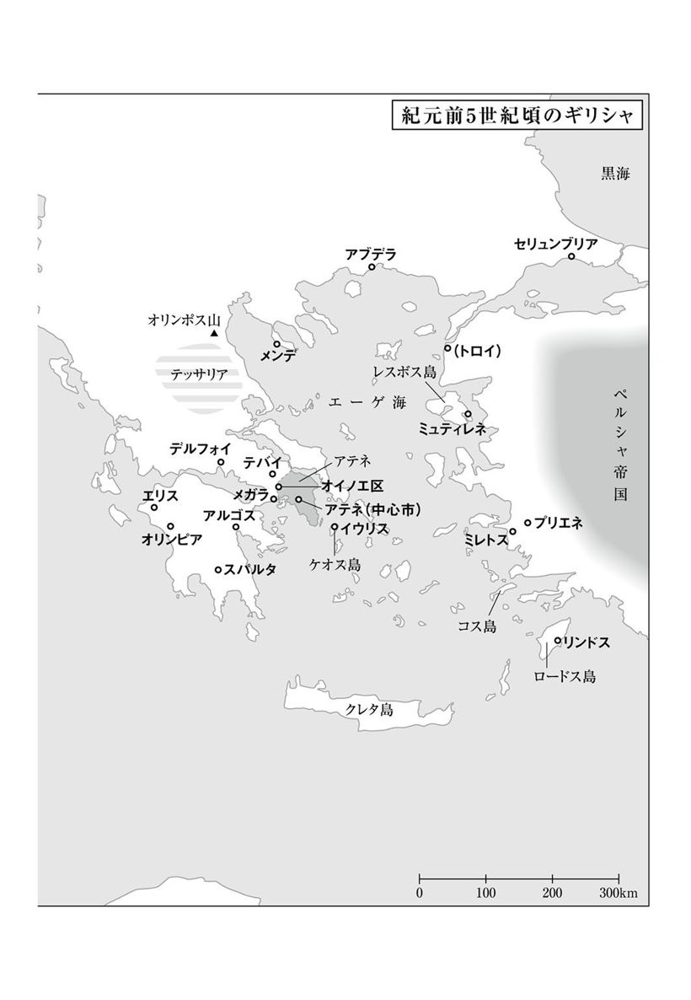
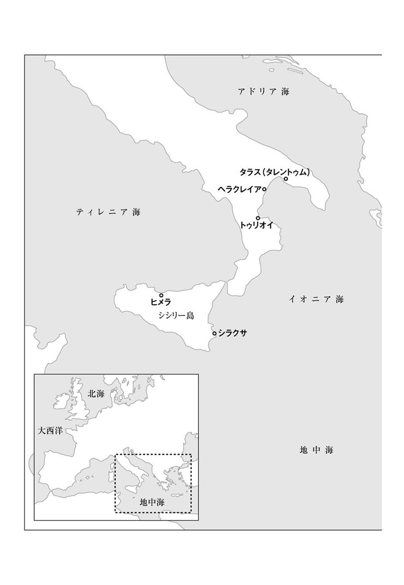

| プロタゴラス～あるソフィストとの対話～ | |
| プラトン | |
| (2010) | |
プロタゴラス──あるソフィストとの対話
プラトン
中澤務訳
Title: ΠΡΩΤΑΓΟΡΑΣ
4 c. B. C.
Author: ΠΛΑΤΩΝ
凡例
（1）テキストは、Oxford Classical Texts『プラトン全集第三巻』所収のバーネット（J. Burnet）による校訂テキストを使用しています。
（2）訳者の判断で、全体をプロローグ、第一～七章、エピローグに分け、各章に表題を付しました。また、話の切れ目には「＊」を挿入しています。
（3）原文中の補足的発言は（ ）で括りました。また、原文にはない補足的な説明を［ ］で適宜挿入しました。
（4）ギリシャ語のカタカナ表記は、できるだけ一般的なものを採用しています。そのため、必ずしも統一した規則に従っているわけではありません。
（5）訳文の下部にある数字とアルファベットは、十六世紀に刊行されたプラトン全集に由来する参照記号で、参照箇所を指定するためのものです。本訳でも、参照箇所は、本書の該当ページと、この参照記号で指定します。


◎ご注意
本作品の全部または一部を無断で複製、転載、改竄、公衆送信すること、および有償無償にかかわらず、本データを第三者に譲渡することを禁じます。
個人利用の目的以外での複製等の違法行為、もしくは第三者へ譲渡をしますと著作権法、その他関連法によって処罰されます。
『プロタゴラス』は、古代ギリシャの都市国家アテネを舞台に、アテネの哲学者ソクラテスと、ソフィストの大物プロタゴラスとの間に繰り広げられる、徳をめぐる対話の様子を描いた物語である。物語を始めるまえに、その背景を少しだけお話ししておくことにしよう。
紀元前五世紀、古代ギリシャ世界は、隣国ペルシャ帝国との戦争（ペルシャ戦争）にみごと勝利をおさめ、大きな発展を遂げていた。なかでもアテネは、ギリシャ諸国の中心として活躍し、その勝利に貢献したことから、ギリシャ世界の盟主の地位を手に入れた。そして、天才政治家ペリクレスの指導のもとで国力が充実し、軍事的にも、経済的にも、文化的にも最盛期を迎えるにいたる。歴史のなかでアテネがもっとも輝いていた時代である。
そんなアテネには、ギリシャ各地から進歩的知識人たちが集まり、アテネ人たちに対して啓蒙活動を行ない、進歩的な教育を施していた。ソフィストたちである。ソフィストというと、詭弁家（道理に合わない、こじつけの議論をする者）のイメージが強い。しかし、そうした悪しきイメージは、彼らの活動の一面に由来するものにすぎない。多くのソフィストは真面目に啓蒙教育活動を行ない、アテネ人たちの知的要求に応えていたのである。ソフィストたちは、時代をリードする思想界の花形であった。
そんなソフィストたちに、アテネ人たちは何を求めたのだろうか？ アテネ人たちの関心は、人間が持つべき優れた能力を手に入れることに向けられていた。ギリシャ人たちは、そうした能力を人間の「徳」と呼んでいた。徳とは、たんに現代の日本語でイメージされがちな道徳的高尚さ（人徳）を意味するだけではない。それは元来、ものが持つ固有の優れた性質を意味し、たとえば馬なら速く走る能力、ナイフならするどい切れ味というふうに、人間以外のものもそれぞれの徳を持っている。人間の徳も、たんに道徳的な性格だけでなく、勇敢さや優れた知力など、さまざまな能力を含み込むものであった。
では、どうしてアテネ人たちはそのような人間の徳に関心を持ち、手に入れようとしたのだろうか？ じつは、当時のアテネには徳を求める切実な理由が存在していた。当時のアテネは、国民が国の政策決定に直接かかわることのできる直接民主制を採用していた。この政治制度のもとでは、徳を持つ優れた人物が政治家として成功し、社会を動かすことができたのである。徳の獲得が社会的成功に直結していたわけだ。だからソフィストたちは、人間の徳として、なによりも弁論や演説の能力、すなわち言葉を使って人々を動かす力を教育しようとした。彼らは言葉を操るさまざまな技術を開発し、そうした技術を教えることで、アテネの知識階級の支持を得ていたのである。
この物語の主人公ソクラテスは、そうしたソフィストたちの活動に疑問を抱いている。はたして人間の徳というものは、そんなに簡単に教えられるものなのだろうか？ そして、その教師を標榜するソフィストとは、そもそも何者か？――ソクラテスは、プロタゴラスに心酔する青年ヒポクラテスとともに、アテネを訪問中のプロタゴラスのもとにおもむき、徳をめぐる対話をはじめる。しかし、対話は二転三転。次第に哲学的色彩を強めながら、やがて意外な結末を迎えることになる。
当時ソクラテスは三十六歳ころ。まだ若くて血気盛んな年齢である。対するプロタゴラスは、すでに六十歳近い。ソフィストとしての長年の活躍により、ギリシャ中にその名声をとどろかせている。この百戦錬磨の老獪なソフィストを相手に、ソクラテスがどんな食い下がりを見せるのか――これがこの作品の見所といえるだろう。
それでは、物語的面白さと哲学的面白さを兼ねそなえた、プラトン対話篇の秀作をお楽しみください。
主要登場人物
ソクラテス アテネの哲学者で、この物語の語り手。さまざまな人々と徳をめぐる対話をしている。三十六歳くらい。
プロタゴラス ソフィストの重鎮。アブデラ出身で、年齢は六十歳に近い。ソフィストとしての長年の活躍で、ギリシャ中に名声がとどろいている。
ヒッピアス エリス出身の博覧強記のソフィスト。ソクラテスと同世代。
プロディコス ケオス島イウリス出身のソフィストで、言葉の分析にたける。ソクラテスと同世代。
ヒポクラテス プロタゴラスへの弟子入りを切望するアテネの青年。裕福なアポロドロス家の息子。
カリアス アテネの大富豪の息子で、ソフィストたちの熱烈な庇護者。二十代半ば。
アルキビアデス 十七歳くらいの美青年。ソクラテスをはじめ多くの崇拝者を集めている。
プロローグ
［アテネの街角で、ソクラテスが友人たちに出会う。］
友人 おや、ソクラテス、どこに行っていたのだ？ 答えは明白かな？ 若き美青年アルキビアデス（１）のあとを追いかけまわしていた。そうだろう？ まあ、たしかに彼はあいかわらずの美男子だねえ。つい最近も彼を見かけてそう思ったよ。だがねソクラテス、ここだけの話にしてほしいんだが、彼はすでに立派な男子じゃないか。じっさい、ひげだってずいぶん濃くなっているしね（２）。
ソクラテス それがどうした？ きみはホメロスを賞賛しないつもりかい？ 彼は「青春時代でいちばん美しいのは、ひげが生えはじめる頃」と言っているではないか（３）。アルキビアデスは、いままさにそんな年頃なのだよ。
友人 それはそうと、いまはどうなんだい？ さっきまで、彼といっしょにいたんだろう？ あの青年は、きみに対してどんな態度をとっているのかな？
ソクラテス いいと思ったね。とりわけ今日はそうだったよ。だって、彼はぼくのために多くの発言をして、ぼくを助けてくれたのだから（４）。そう、たしかにぼくは、いままで彼と一緒だったのさ。
でも、ちょっと奇妙なことがあったので、きみに話してあげよう。たしかに、彼はぼくのそばにいた。ところが、ぼくの心は彼には向かわなかった。それだけじゃない。ぼくは幾度となく、彼がいることすらすっかり忘れてしまったのだ。
友人 どうしてそんなことが、きみとあの青年との間に起こったのだろう？ だって、きみが他のもっと美しい人に出会ったはずはないもの。すくなくとも、この［アテネの］国の中では。
ソクラテス それが出会ったんだよ。はるかに美しい人に。
友人 なんだって？ それはこのアテネの人かい？ それとも異国の人かい（５）？
ソクラテス 異国の人だ。
友人 どこの国の人だろう？
ソクラテス アブデラの人だよ（６）。
友人 きみは、その異国の人をそんなに美しいと思ったのか？ あのクレイニアスの息子［アルキビアデス］よりも美しくみえるほどに？
ソクラテス おめでたい人だねえ。最も賢いものが、より美しくみえるのは当然のことだよ。
友人 ほう。ソクラテス、するときみは、ここに来るまえに、誰か賢い人に会っていたと......？
ソクラテス いやいや、思うに、この時代最高の賢者にさ。もっとも、きみが認めてくれればの話だがね──最高の賢者とは、プロタゴラスだと。
友人 えっ、なんだって？ プロタゴラスがこの国に来ているのか？
ソクラテス すでに三日目になるよ。
友人 するときみは、いまここに来るまで、彼と一緒にいたわけか？
ソクラテス そうだ。いろいろなことを話したり聞いたりした。
友人 それでは、もしきみに何か用事がないなら、そのときの会合の様子をわれわれに話してくれないか？ さあ、この［ぼくの従者の］召使を立たせて、きみがここにすわるんだ。
ソクラテス ぜひ、そうさせてもらおう。きみたちが話を聞いてくれるなら、感謝するよ。
友人 われわれだってきみに感謝する。きみが話をしてくれるなら。
ソクラテス じゃあ、感謝倍増だな。それでは聞いてくれ。
１ アテネの政治家として波乱に満ちた生涯を送った人物だが、ここではまだ十七歳くらいの青年。たいへんな美貌の持ち主で、ソクラテスをはじめ多くの崇拝者を集めた。 (本文に戻る）
２ 古代ギリシャには、「パイデラスティア」と呼ばれる独特の性風習があった。これは、成人男性が、「立派な男子」に成長するまえの少年と恋愛関係を結ぶもので、通常は、少年が成人する（ひげが濃くなる）とその対象ではなくなった。この評価は美青年を自負するアルキビアデスを傷つけることになるため、友人はここだけの話にしてほしいと言っている。 (本文に戻る）
３ ホメロスは、古代ギリシャの伝説的詩人であり、二大叙事詩『イリアス』と『オデュッセイア』の作者。当時の教養の源泉であり、会話の端々で引用される。ここでの引用は、『イリアス』第二四巻三四八行、および『オデュッセイア』第一〇巻二七九行からのもの。 (本文に戻る）
４ アルキビアデスは、その後の対話で二回（「あなたのおっしゃることは、正しいとはいえませんね、カリアス。」以降と「カリアス、あなたは、いまのプロタゴラスの態度も立派だと思われるのですか？」以降）、ソクラテスを助ける発言をしている。 (本文に戻る）
５ ここで「国」と訳したのは、ポリスと呼ばれる都市国家のこと。古代ギリシャ世界には多くのポリスが存在し、ギリシャ人は各ポリスの国民として生活していた。 (本文に戻る）
６ アブデラは、ギリシャ北部のトラキア地方のポリスで、たくさんの知識人を輩出した。 (本文に戻る）
第一章 ヒポクラテスとの対話
昨夜のことだ。まだ夜明け前だというのに、アポロドロスの息子でパソンの弟のヒポクラテス（７）が、杖でぼくの家の扉をとてもはげしく叩いた。誰か家の者が扉を開けてやると、彼はすぐさまなかに駆け込んできて、大声で言った。
「ソクラテス、起きていますか？ それとも、眠っているんですか？」
彼の声だとわかったので、ぼくは言った。
「ヒポクラテスだな、そこにいるのは。まさか、何か悪い知らせではあるまいね？」
「とんでもない。いい知らせなんです」と彼は言った。
ぼくは言った。「それならいいんだがね。だが、どんな知らせだい？ それに、こんな早くにやってきた理由は？」
彼はぼくのそばに立ち、言った。
「プロタゴラスが来たんですよ」
ぼくは言った。「彼が来たのは、おとといだが......。きみは、さっき耳にしたばかりのようだね？」
「ええ、じつをいうと、ゆうべ、はじめて耳にしました」
そう言いながら、彼はベッドを手で探り、ぼくの足もとに腰かけた。そして次のように言った。
「そう、ゆうべなんです。それもずいぶん遅く、オイノエ区（８）から戻ったあとにです。じつは、あの召使のサテュロスのやつが、ぼくのところから逃げ出してしまったんです（９）。もちろん、やつのあとを追いかけることは、あなたにも言っておくつもりでした。でも、別の用事に気をとられて、忘れてしまったんです。それで、家に帰ってきて夕食をすませ、寝ようとしたんですが、そのとき兄貴がぼくに言ったんです。プロタゴラスが来たぞってね。ぼくはすぐに、あなたのもとに飛んでいこうとしましたよ。でも、もうずいぶん夜も遅いことに気づきましてね。それでひと眠りしたんですが、疲れがとれたものですから、すぐに起きて、こうしてここにやって来たんです」
ぼくには、彼が勇みたち、興奮しているのがわかった。そこでこう言った。
「そんなことが、きみにとって何だというのか？ プロタゴラスがきみに、何か悪いことをしたわけではあるまい？」
すると、彼は笑って、言った。
「ところがなんと、したんです、ソクラテス。だって、あの人は自分だけが賢者でいて、ぼくを賢者にしてくれないんですもの」
ぼくは言った。「いや、そんなことはないよ。あの人にお金を払ってお願いすれば、きみも賢者にしてくれるだろうさ」
彼は言った。「ああ、神さま、それで話がすむならどんなにいいだろう！ ぼくのお金を全部つぎ込んでもかまわない。友だちのお金だってつぎ込みますよ。じつは、ぼくがいまあなたのところにやって来たのも、そのためなんです。ぼくのために、あの人と話し合ってほしいんですよ。なにしろ、ぼくはまだ若造のうえに、これまでプロタゴラスを見たこともないし、話を聞いたこともありません。まえに彼が来たときには、ぼくはまだ子どもでしたから。でもねソクラテス、誰もがあの人のことをほめたたえ、弁舌に秀でた最高の賢者だと言っていますよ。
さあ、すぐに彼のところに行きましょう。そうすれば、家にいるところをつかまえられます。ぼくが聞いたところでは、彼は、ヒポニコスの息子のカリアス（10）のところに泊まっているそうです。さあ、出かけましょう」
そこで、ぼくは言った。
「まあまあ、いますぐあそこに行くのは、やめておこうよ。まだ早いから。それより起きて、ここで、中庭（11）に出てぶらぶら歩きながら、明るくなるまで時をすごそう。出かけるのはそれからでいい。プロタゴラスは、たいていは家の中にいるんだよ。だから心配ご無用だ。きっと、家にいるところをつかまえられるから」
＊
そのあと、ぼくたちは起き上がり、中庭に出てぶらぶらと歩いていた。ぼくはヒポクラテスの決意の固さを試したかった。そこで、彼を調べるために次のように問いかけた。
ぼくは言った。「ぼくに答えてほしい、ヒポクラテス。きみはいま、プロタゴラスのもとに行こうとしている。そして、きみ自身のために、彼に報酬のお金を払うつもりでいる。でも、きみは、そもそも何者のもとを訪ねるつもりでいるのかな？ そして、きみは何者になるつもりなのだろう？
たとえば、アスクレピオス派に属する医者で、コス島のヒポクラテス（12）という、きみと同名の人物がいる。きみがその人物のもとに行き、きみ自身のために、彼に報酬のお金を払うつもりでいたとしよう。そのとき誰かが、きみにこう尋ねたとする。『ぼくに答えてほしい、ヒポクラテス。きみはヒポクラテスに報酬を払うつもりでいる。でも、きみは何者に払うつもりなのか？』さて、きみは何と答えるだろうか？」
「『医者に払うつもりだ』と答えるでしょう」と彼は言った。
「『きみは何者になるつもりなのか？』と尋ねたら？」
「『医者になるつもりだ』と答えるでしょう」と彼は言った。
「それでは、きみがアルゴス人のポリュクレイトスか、あるいはアテネ人のペイディアス（13）のもとに行き、きみ自身のために、彼らに報酬を払うつもりでいたとしよう。そのとき、誰かがきみにこう尋ねたとする。『きみはこのお金をポリュクレイトスやペイディアスに払うつもりでいる。でも、きみは何者に払うと考えているのか？』さて、きみは何と答えるだろうか？」
「『彫刻家に払うと考えている』と答えるでしょう」
「『では、きみ自身は何者になるつもりなのか？』と尋ねたら？」
「もちろん、『彫刻家になるつもりだ』と答えるでしょう」
ぼくは言った。「それでは、次の場合はどうだろう。ぼくときみが、いまプロタゴラスのもとに行き、きみのために、彼に報酬のお金を払おうとしている。もちろん、われわれのお金で足りて、彼にお願いを聞いてもらえるならの話だよ。もし足りなかったら、さらに友だちのお金までつぎ込むことになるだろうねえ。
さて、ぼくたちがこうしたことに、そんなにも熱心になっているのをみて、誰かがぼくたちに、こう尋ねたとしよう。『ぼくに答えてほしい、ソクラテスにヒポクラテス。きみたちは、プロタゴラスにお金を払うつもりでいる。でも、きみたちは何者に払うと考えているのか？』ぼくたちは、この人に何と答えたらよいだろうか？
ぼくたちの聞くところでは、プロタゴラスは、自分の名前以外にどんな名で呼ばれているだろうか？ たとえば、ペイディアスは〈彫刻家〉という名で呼ばれ、ホメロスは〈詩人〉という名で呼ばれている。では、プロタゴラスについては、そのような名として、ぼくたちはどんな名を聞くだろうか？」
「世間の人たちは、たしかにあの人のことを〈ソフィスト（14）〉という名で呼んでいます、ソクラテス」と彼は言った。
「そうすると、ぼくたちはソフィストにお金を払いに行こうとしていることになるね」
「そうなります」
「それでは、もし誰かがさらに、きみに次のように尋ねたとしたらどうだろう？『それで、きみ自身は、何者になるつもりでプロタゴラスのところに行くのか？』と」
すると、彼は顔を赤くして──すでに明るくなりはじめていたから、彼の姿がはっきり見えたのだ──こう言った。
「もし、いままでの例と同様だとしたら、明らかに、ぼくはソフィストになるつもりだということになります......」
ぼくは言った。「だがね、正直な話、きみは、自分が世間の人たちからソフィストと見なされることを、恥ずかしく思うのではないだろうか？」
「じつはそうなんです、ソクラテス。もし、本心を言わねばならないとしたら（15）......」
「ということは、ヒポクラテス、もしかしたらきみは、自分がプロタゴラスから学ぶことを、そうした類のことだとは思っていないのかもしれないね。そうではなくて、むしろ、きみが読み書きの先生や、音楽の先生や、体育の先生から学んできたような類のことだと思っているのではないだろうか？ というのも、きみはこれらの科目を、プロになる気で専門的に学んだわけではない。むしろ、素人たる自由人が学ぶにふさわしいがゆえに、教養として学んだのだから（16）」
「なるほど、そうですね。プロタゴラスから学べるのは、むしろそのような類のことなんだと思います」と彼は言った。
「ところがそうだとすると、きみは自分がいま何をしようとしているかわかっているかな？ それとも気づいていないのかな？」とぼくは言った。
「何のことですか？」
「きみは、きみがソフィストと呼ぶ人物に、きみ自身の心をゆだね、その世話をしてもらおうとしていることになるのだ。でも、ソフィストとはそもそも何なのか？ もし、きみがそれを知っているなら、ぼくは大いに感心するだろう。だが、もしきみがそれを知らないなら、きみは自分が何に心をゆだねようとしているのかも、またそれがよいものなのか悪いものなのかも、知らないことになるのだよ」
「いや、知っているつもりですよ」と彼は言った。
「それなら、言ってほしい。きみは、ソフィストとは何だと考えているのかね？」
彼は言った。「ぼくの考えでは、ソフィストとは、その名が示すとおり、〈賢いことを知っている人〉のことです（17）」
ぼくは言った。「だがね、それなら画家や大工などにもいえることではないだろうか？ これらの人たちだって〈賢いことを知っている人〉たちなのだから。だが、誰かがぼくたちに『画家というのは、どんな賢いことを知っているのでしょうか？』と尋ねたとしよう。ぼくたちはこの人に『絵画の制作に関する賢いことです』と答えることになるだろう。これ以外の場合でも、同様のことがいえる。
さて、それでは、もし誰かが次のように尋ねたとしたらどうだろう？『それで、ソフィストというのは、どんな賢いことを知っているのでしょうか？』とね。ぼくたちは、この人に何と答えたらよいだろうか？ つまり、ソフィストとは、人を何にしてくれる達人なのだろう？」
「ソフィストとは、人を弁舌巧みな者にしてくれる達人です。わたしたちには、他に答えようがありません、ソクラテス」
ぼくは言った。「おそらくは、それで正しいだろう。だが十分とはいえない。なぜなら、その答えから、次のような新たな疑問が生まれるからだ。すなわち、ソフィストが人を弁舌巧みな者にしてくれるといっても、それは何に関してなのか？ たとえば、音楽の先生だって、たしかに人を弁舌巧みな者にしてくれる。でも、その範囲は、彼が知識を与えてくれる事柄、つまり音楽の話に限られている。そうだね？」
「そうです」
「では、ソフィストが人を弁舌巧みな者にしてくれるのは、いったい何に関してなのか？」
「もちろん、彼が知識を与えてくれる事柄に関してです」
「まあ、たしかにそうなんだが......。でも、それは一体何だろうか？ つまり、ソフィスト自身が知識を持っていて、その知識を弟子にも与えてくれる事柄とは？」
「降参です。もう何も言えません」と彼は言った。
＊
そのあと、ぼくは次のように言った。
「さあ、どうだろう？ きみは、自分の心をどんな危険にさらそうとしているか、わかるかな？ たとえば、きみが自分の体を誰かに託さなければならないが、そのとき、体がよくなるか悪くなるかについて、危険を冒さなければならないとしよう。きみは、その人に体を託すべきか否かについて、いろいろと検討するだろう。そして、友だちや家族の助言を求めながら、何日も考え続けることだろう。
ところが、きみが体よりも大切だと思っているもの、すなわち心についてはどうだろう？ きみにかかわるすべてのことが成功するか失敗するかは、まさにこの心がよくなるか悪くなるかにかかっているんだよ。ところがそれについては、きみはお父さんにもお兄さんにも、われわれ仲間の誰にも相談しなかったのだ。この国を訪れたあの異国人に、きみの心を託すべきか否かについてね。それどころか、きみの話によれば、きみはゆうべその話を聞くと、夜も明けぬうちにやって来て、きみ自身を彼に託すべきか否かについて、議論することも相談することもなく、きみ自身と友だちのお金を使い果たす気でいる。是が非でもプロタゴラスに弟子入りすると、もう決めてしまったかのようにね。
ところが、きみの話によれば、きみは彼と面識もなければ、話をしたこともないというではないか。たしかにきみは、彼をソフィストという名で呼びはする。しかし、ソフィストとはそもそも何なのかを、きみが知らないことは明らかだ。きみはそんな人物にきみ自身を託そうとしているのだよ」
これを聞いて彼は言った。「あなたのお話を聞くと、ソクラテス、どうもそのようです」
「ところで、ヒポクラテス。ソフィストとは、心を養うためのいろいろな品物を商う、何か貿易商人（18）とか小売商人（19）のようなものではないだろうか？ すくなくとも、ぼくには、何かそのようなものにみえるのだが」
「ソクラテス、心は何によって養われるのでしょうか？」
ぼくは言った。「もちろん、［学んで身につけられる］知識によってだよ。そして友よ、ソフィストがその商品をほめるときには、彼がぼくたちをだますことのないように気をつけようではないか。ちょうど、貿易商人や小売商人が、体を養う食物についてそうするようにね。というのも、彼らは、自分たちが売り歩く商品のうち、どれが体によくてどれが悪いかなど自分でも知りもしないのに、売りに出すときには、すべての商品をほめるのだ。しかも、彼らから買う側も、運動の指導者や医者でもない限りは、そのよし悪しがわからない。
それと同様に、諸国を行き来しながらいろいろな知識を売り歩く商人たちも、それらを売りに出して、欲しい人がやって来るたびに小売りするとき、彼らが売りに出すすべての商品をほめる。だがね、いいかい、おそらく彼らのなかには、自分が売りに出す商品のうち、どれが心によくてどれが悪いかを知らない者もいることだろう。そして、彼らから買う側についても、まったく同じことがいえる。この場合、誰かが心の医者ででもない限りはね。
そういうわけで、もしきみが、それらの商品のうちで、どれがよくてどれが悪いのかを知っているのであれば、プロタゴラスから知識を買おうが、ほかの誰かから買おうが、きみは安全だ。だがね、いいかい、もし知らないのであれば気をつけるのだ。いちばん大切なものを賭けて、危険な目にあわないように。
じっさい、食べ物を買うときよりも、知識を買うときのほうが、はるかに危険が大きいのだよ。というのも、小売商人や貿易商人から買った食べ物や飲み物は、［持参した］別の容器に入れて持ち帰ることができる。だから、飲んだり食べたりして体のなかに取り入れてしまうまえに、それらを家に置いておき、専門家を呼んできて相談することができるのだ。食べたり飲んだりしてもよいのはどれで、だめなのはどれか、またどのくらいの量を、どのようなときに、食べたり飲んだりすればよいかについてね。だから、こうしたものを買うときには、危険はそれほど大きくないわけだ。
ところがこれに対して、知識は別の容器に入れて持ち帰ることができない。いったん代金を払うと、きみはその知識をただちに心のなかに取り入れて、学んでしまってから帰らねばならない。そしてそのとき、きみはすでに損害を受けているか、利益を手にしているかのいずれかなのだ。
だからぼくたちは、ぼくたちより年上の人たちも交えて、この問題を検討したほうがよいだろう。なぜなら、これほど大事なことを決めるには、ぼくたちはまだ若いのだから。でも、いまは当初の計画どおり、あの人のところに行って話を聞くことにしよう。そして、話を聞いたあとで、ほかの人たちにも相談してみよう。じっさい、あそこにいるのはプロタゴラスひとりではない。エリス人のヒッピアス（20）もいるし、それにケオス島のプロディコス（21）もいると思う。また、その他にも、たくさんの賢者たちがいるからね」
7 アテネの裕福な家の息子であるが、父と兄も含め、詳しいことは知られていない。 （本文に戻る）
8 アテネの区（デモス）の一つで、アテネ北西の国境沿いにあったものを指すと思われる。中心市からは三〇キロメートルほどの距離があった。 （本文に戻る）
9 サテュロスはオイノエ区経由で国外逃亡を企てたものと思われる。 （本文に戻る）
10 アテネの大富豪の息子で、ソフィストたちのパトロン。父から莫大な遺産を引き継ぐが、豪奢な生活や事業の失敗などで失った。本作ではまだ若く、おそらく二十代なかごろである。 （本文に戻る）
11 古代ギリシャの家屋は中庭を持ち、それを取り囲むように部屋が配置されていた。 （本文に戻る）
12 エーゲ海のコス島で生まれ活動した著名な医者で、ソクラテスの同時代人。アスクレピオス派とは、医神アスクレピオスを信仰していた医学派のこと。 （本文に戻る）
13 いずれも、紀元前五世紀に活躍した著名な彫刻家。 （本文に戻る）
14 当時活躍していた、教育を職業とする進歩的知識人たちのこと。詳しくは、「訳者まえがき」と「解説」を参照。 （本文に戻る）
15 ソフィストは、保守的な人々にとっては胡散臭い存在であり、その社会的評価は、毀誉褒貶が相半ばしていた。ヒポクラテスの躊躇の背後には、こうした当時の状況がある。 （本文に戻る）
16 読み書き、音楽（竪琴の演奏）、体育は、古代ギリシャにおける教養教育（パイデイア）の三本柱であり、その目的は、専門的職業人の育成ではなく、人間として優れた国民（自由人）の育成にある。ソフィストの教育がこうした教養教育であるとしたら、ヒポクラテス自身がプロのソフィストになる必要はなくなる。 （本文に戻る）
17 ヒポクラテスは、「ソフィステス（sophistes）」という名を、「ソフォン（sophon）・エピステモン（epistemon）」（賢いことを・知っている人）の省略形と解釈している。 （本文に戻る）
18 貿易商人（エンポロス）とは、諸国を渡り歩いて商品を売買する人のこと。 （本文に戻る）
19 小売商人（カペーロス）とは、国内の市場に店を構えて商品を売買する人のこと。 （本文に戻る）
20 ペロポネソス半島北西のポリス、エリス出身のソフィスト。数々の学問分野に精通する博覧強記のソフィストとして知られる。おそらく、ソクラテスと同世代と思われる。 （本文に戻る）
21 アテネに近いケオス島イウリス出身のソフィスト。おそらく、ソクラテスと同世代と思われる。 （本文に戻る）
第二章 カリアス邸にて
そのように決めて、ぼくたちは出かけていった。ぼくたちは玄関先までやって来たが、そこで立ち止まったまま、ある話題に関する対話を続けていた。それは道の途中で出てきた話題だった。ぼくたちは対話を中途半端なままにしないで、きちんとした結論を出してから、なかに入っていくつもりだった。それで、玄関先につっ立ったまま、お互いが同意に達するまで、対話を続けていたのであった。
そのぼくたちの話を、どうやら門番（22）が聞いていたらしい。彼は宦官ら（23）しかった。彼は、たくさんのソフィストたちが押しかけて来るものだから、その屋敷を訪れる者たちにうんざりしていたようだ。ぼくたちが扉を叩くと、彼は扉を開き、ぼくたちを見て言った。
「ふん、ソフィストどもめ。旦那様はお暇じゃないよ」
そう言うやいなや、彼はありったけの力を込めて、両手で扉をぴしゃりと閉めてしまった。われわれがふたたび扉を叩くと、彼は扉を閉めたまま返事をした。
「おまえたち、聞こえなかったのか？ 旦那様はお暇じゃないのだ！」
ぼくは言った。「いや、おまちください。わたしたちはカリアスに会いに来たのでもなければ、ソフィストでもありません。どうか、ご安心ください。わたしたちは、プロタゴラスに会うためにやって来たのです。ですから、お取り次ぎください」
すると、とうとうその男は、ぼくたちのために、しぶしぶ扉を開けてくれたのであった。
＊
さて、ぼくたちはなかに入り、プロタゴラスを見出した。彼は柱廊のなかを散歩していて（24）、そのあとには次のような人たちがぞろぞろと従っていた。すなわち一方の側では、ヒポニコスの息子のカリアス、彼と同じ母を持つ弟でペリクレスの息子のパラロス（25）、そしてグラウコンの息子のカルミデス（26）が従っていた。また他方の側では、ペリクレスのもうひとりの息子のクサンティッポス、フィロメロスの息子のフィリピデス、そしてメンデ人のアンティモイロスが従っていた。（このアンティモイロスというのは、プロタゴラスの弟子たちのなかで最も評判のよい人で、ソフィストになるつもりで専門的に学んでいる人だよ。）
さらにそのうしろに、会話に耳を傾けながら、つき従う人々がいた。彼らの大部分は異国人のようだった。プロタゴラスは、彼がめぐり歩く国々から、彼らを引き連れてくるのだよ。まるでオルフェウス（27）みたいに、その声で彼らを魅了してね。彼らはすっかり魅せられてしまい、その声のあとについてくるのだ。（もっとも、この合唱隊（28）の中には、この国の人間も何人か含まれていたがね。）
ぼくとしては、この合唱隊を見ているのが、何よりも愉快だったね。彼らは、プロタゴラスの前に立ちはだかって行く手を阻むことのないように、じつにみごとに気を配っていたのだ。彼とその取り巻き連中がくるりと進行方向を変えるたびに、この聴衆たちは、とても上手に整然と左右にわかれ、円を描きながらぐるりと背後にまわりこんで、何度も何度も、じつに美しく整列していったのだよ。
「そして、次に私が見たのは（29）」──これはホメロスの言葉だよ──エリス人のヒッピアスだった。彼は反対側の柱廊で、椅子に座していた。彼をとり囲んで、ベンチに腰掛けていたのは、アクメノスの息子のエリュクシマコス（30）、ミュリヌス区のパイドロス（31）、アンドロティオンの息子のアンドロンなどだったが、その他にも、彼と同じエリスの人々や、他の国の人々がいた。彼らはどうもヒッピアスに、自然と天体をめぐって、なにやら天文学の諸問題を問うているようだった。そして彼は椅子に座したまま、彼らのひとりひとりに対して、問われた問題に解答し、その解説をしていたのだった。
「さらにまた、私はタンタロスの姿も見た（32）」というのも、案の定、ケオス島のプロディコスも滞在していたのだ。彼はある部屋のなかにいた。その部屋は、以前はヒポニコスが宝物庫として使っていたものだが、いまでは泊まり客が多いために、カリアスがそこも空っぽにして、客のための寝室にしてしまったのだ。
さて、そのプロディコスだが、彼はまだ横になっていて、大量の羊皮と毛布にくるまっているように見うけられた。彼の傍らでは、ケラメイス区出身のパウサニアス（33）が、近くのベッドに腰掛けていた。また、パウサニアスと一緒に、まだ若いひとりの少年がいた。この少年は、素質の点でも立派で優れた人物と思えたが、とにかくその容姿がじつに美しかった。彼の名前はアガトン（34）と聞いたように思う。彼がパウサニアスの恋する少年だったとしても、ぼくは驚くまい。
そこにいたのは、この若者と二人のアデイマントス、すなわちケピスの息子とレウコロピデスの息子（35）であったが、他にも幾人かの人たちがいたようだ。
ところで、彼らの会話の内容なのだが、部屋の外からそれを知ることはできなかったよ。もちろんぼくは、プロディコスの話を聞こうと懸命に努力したさ。なにしろ、ぼくは彼のことを、何でも知っている神のような人だと思っているからね。でも、彼の声は低いから、部屋のなかで反響して、言っていることが聞き取りにくかったのだ。
そうそう、それから、ぼくたちがなかに入るとすぐに、ぼくたちの後ろから、かの美男子アルキビアデス──きみはそう言うがぼくも賛成だ──と、カライスクロスの息子のクリティアス（36）が入ってきたっけ。
まあ、こんな具合に、なかに入ってから、このような光景をしばらく眺めたあとで、ぼくたちはプロタゴラスに近づいていったのだ。
＊
ぼくは言った。「プロタゴラス、わたしとこのヒポクラテスは、あなたにお会いするためにやって来ました」
彼は言った。「わたしひとりと話がしたいのかね？ それとも、他の人たちがいてもかまわないのかね？」
ぼくは言った。「わたしたちは、どちらでもかまいません。わたしたちがやって来た目的をお聞きのうえ、あなた自身がお考えになってください」
彼は言った。「それで、きみたちがやって来た目的とは何だろうか？」
「このヒポクラテスのことなのです。彼はこの国の人間で、アポロドロスの息子です。その家は大きくて裕福です。また当人の素質ですが、この点でも、彼が同じ年頃の者たちにくらべて、劣ることはないと思います。さて、わたしには、彼がこの国屈指の人物になることを望んでいるようにみえるのです。そして彼は、あなたに弟子入りすれば、その望みのかなう公算が最も高いと考えております。
それでは、この問題をあなたとわたしたちだけで話し合うべきか、それとも他の人たちがいてもかまわないかについては、あなたがお考えください」
彼は言った。「ソクラテス、きみはわたしのために用心してくれているが、適切な判断といえる。というのも、異国人として大きな国に行き、そこの若者たちのなかでも最も優れた者たちを説得して、他の人たち──身内であろうが他人であろうが、年上であろうが年下であろうが──との付き合いを捨てさせ、自分と付き合えばもっと優れた人になれると言って、自分と付き合うようにさせる者、そのようなことをする者は気をつけなければならないからだ。なぜなら、そのようなことをすれば、嫉妬だけでなく、他にもいろいろな敵意や陰謀が生まれてくるものだが、それらは決して小さなものではないからね。
しかし、これに対して、わたしは次のように言いたい。ソフィストの技術は、昔から存在してきたものなのだが、昔の人々のなかでこの技術を持っていた人々は、それが生み出す敵意をおそれるあまりに、煙幕を張ってその背後に隠れてしまったのだ。ある人々は詩歌の背後に隠れた。たとえばホメロスとヘシオドス（37）、そしてシモニデス（38）がそうだ。またある人々は、秘儀と預言の背後に隠れた。たとえばオルフェウスとムサイオス、そして彼らの宗派に属する人々がそうだ（39）。
さらにわたしは、幾人かの人々が、体育の背後に隠れていることに気づいている。たとえばタラス人のイッコス（40）や、いまも存命中の比類なきソフィスト、セリュンブリア人の──昔はメガラ人だったが──ヘロディコス（41）などだ。さらに、きみたちの国のアガトクレス（42）は音楽で煙幕を張っていたが、じつは偉大なソフィストだ。そうした者は、ケオス島のピュトクレイデス（43）など、他にもたくさんいる。いまあげたこれらの人々はみな、わたしが言うように、嫉妬をおそれて、こうしたいろいろな技術を煙幕として利用したのだ。
だが、この点に関する限り、わたしは彼ら全員に対して異議を申し立てる。というのも、わたしが思うに、彼らはその目的をこれっぽっちも達成できていないからだ。なぜなら、彼らは、人々のうちでもその国の実力者たちの目は逃れられなかったのだから。煙幕は、こうした実力者の目を逃れるためのものだったというのにねえ。というのも、大衆なんてものは、いってみれば何の感受性もない連中なのであって、たんに実力者たちの語る言葉を繰り返しているにすぎないのだから。
このように、逃れようとしても逃れることができずに、正体がばれてしまうのだ。じつに愚かだよ。そんなことを企てることすらね。しかも、人々はかならずや大いなる敵意を抱くことだろう。なぜなら、人々はそのような人間を、まず何よりも無法者とみなすだろうからね。
だからわたしは、こうした人たちとはまったく逆の道を歩んできたのだ。わたしは、自分がソフィストであり、人々を教育していることを認めている。このような［わたしの］用心のほうが、あのような［彼らの］用心よりも、すなわち認めるほうが認めないよりもよいと考えているのだ。
また、そのほかにもいろいろな用心をしてきたので、神様のおかげもあって、ソフィストであると公言して、ひどい目にあったことは一度もないのだよ。じっさい、わたしは、すでに長年この技術に携わっている。だから、もうかなりの歳だ。きみたちのなかの誰をとっても、年齢的にみてわたしが父親になれないような人は、ひとりもいないだろう（44）。
まあそんなわけだから、きみたちさえよければ、家にいるすべての人たちの前で、この問題について話をさせてもらえれば、わたしとしてはなによりもうれしいよ」
＊
ぼくは、うすうす気づいていた。彼は、ぼくたちが彼の熱狂的支持者としてやって来たことを、プロディコスとヒッピアスに見せびらかして、自慢したがっているのだ。そこで、ぼくはこう言った。
「それなら、プロディコスとヒッピアス、それに彼らと一緒にいる人たちも呼んで、わたしたちの話を聞いてもらいましょうよ」
「ぜひともそうしよう」とプロタゴラスは言った。
すると、カリアスが言った。「それではどうでしょう。あなたがたが座って話せるように、討論のための場所を作りませんか？」
そうしようと話がまとまった。ぼくたちはみな、賢者たちの話が聞けると思って喜び、ベンチやベッドをみずから手に取って、ヒッピアスのかたわらに並べていった。というのも、そこにはすでにベンチが何脚か置いてあったからだ。そうしているあいだに、カリアスとアルキビアデスが、プロディコスをベッドから起こし、彼と一緒にいた人たちとともに連れてきた。
全員が席に着くと、プロタゴラスが口をひらいた。「さて、それではソクラテス、みなさんも席に着かれたことだし、きみがさきほどこの若者のためにわたしに語ったことを、話してもらえないだろうか」
そこでぼくは言った。「プロタゴラス、話の最初の部分、すなわちわたしたちがここにやって来た目的については、さきほどお話ししたとおりです。このヒポクラテスが、あなたとの付き合いを望んでいるのです。そこで彼は、あなたと一緒にいると自分に何が起きるのかを、ぜひとも聞かせてほしいと申しております。わたしたちの話は以上です」
すると、これに答えて、プロタゴラスは言った。「若者よ、わたしと付き合えば、次のようなことがきみに起きるであろう。きみがわたしの弟子になるその日、きみはより優れた人間となって帰宅するであろう。次の日も同じことが起こる。こうして、きみは毎日、よりよい方向に進歩しつづけるのだ」
これを聞いて、ぼくは言った。「プロタゴラス、あなたのおっしゃることは、なんら驚くべきことではありません。むしろ、いくらでも起こりうる話です。じっさい、そんなことはあなたにさえ起こりえますからね。たしかに、あなたはご高齢でこんなにも賢い。しかしもし誰かが、あなたのたまたま知らないことをあなたに教えるなら、あなただって、より優れた人間になることでしょう。
そうではなく、次のように答えていただきたいのです。たとえば、このヒポクラテスが急に希望を変え、最近この国にやって来た若者、ヘラクレイア人のゼウクシッポス（45）との付き合いを望んだとします。彼はこの人物のもとに行く。（ちょうど、彼がいまあなたのもとにいるようにです。）そして、あなたから聞いたのとまったく同じことを、この人物から聞いたとします。この人物と付き合うと、彼は毎日、より優れた人間となり、進歩するだろうとね。このとき、もし彼がこの人物に『あなたは、わたしがどんな点でより優れた人間になり、何において進歩するとおっしゃっているのですか？』とふたたび質問したとすれば、ゼウクシッポスは彼に『絵の技術についてだ』と言うことでしょう。
さらに、もしヒポクラテスがテバイ人のオルタゴラス（46）に弟子入りし、あなたから聞いたのとまったく同じことを、この人物から聞いたとします。彼がこの人物に、この人物の弟子になると、毎日何においてより優れた人間になるのかと、ふたたび質問したとすれば、この人物は『笛の演奏においてだ』と言うことでしょう。
あなたもまた、このようなしかたで、この若者と、彼になり代わって質問しているこのわたしに、答えていただきたいのです。このヒポクラテスは、プロタゴラスの弟子になると、弟子になるその日に、より優れた人間となって帰宅し、その後も毎日、同様に進歩するだろうとのことですが、それは何においてなのですか、プロタゴラス？ いったい、何に関してそうなるのでしょう？」
するとプロタゴラスは、ぼくの言葉を聞いてこう言った。「きみは、いい質問をするね、ソクラテス。わたしも、いい質問をする人には喜んで答えたい。
ヒポクラテスは、わたしのところに来れば、他のソフィストに弟子入りしたとき受けるような被害を受けずにすむであろう。じっさい、他のソフィストたちは、若者たちにひどいことをしているからねえ。というのも、若者たちは、さまざまな専門教科から逃げ出してきたというのに、彼らは、いやがる若者たちをふたたび連れ戻して、専門教科のなかに放り込んでしまうのだ。算術、天文学、幾何学、音楽などを教えてね。──そう言いながら、彼はヒッピアスのほうを見た。──だが、わたしのところに来れば、彼は、まさしく自分が求めていたものを学ぶことになるだろう。
すなわち、わたしから学べるのは、たくみに策を練る力だ。これを使えば、家のことに関しては、自分の家を最もよく治めることができるし、国のことに関しては、国のことを行なうにも論じるにも、最も力のある者になれるのだよ」
ぼくは言った。「わたしは、あなたの言葉を正しく理解しているでしょうか？ あなたは政治の技術のことをおっしゃっていて、また、よき国民をつくることを約束されていると、わたしには思えるのですが」
彼は言った。「まさにそれなのだ、ソクラテス。わたしがやっているのは」
＊
ぼくは言った。「なるほど、あなたはすばらしい技術をお持ちなのですね。もっとも、ほんとうにお持ちならばの話ですが......。わたしは、ほかならぬあなたに対してであればこそ、自分の思っていることを包み隠さずお話ししたいと思います。じつをいうと、プロタゴラス、わたしは、そうしたものを教えることができるとは思っていなかったのです。しかし、それができるとおっしゃるあなたを疑うこともできません。そこで、どうしてわたしが、そうしたものは教えることができず、人から人に伝授できないと思うのかをお話しするのが筋だと思います。
わたしは、アテネ人たちは賢い人々であると主張します。これは、他の国のギリシャ人たちも認めるところです。さて、われわれアテネ人が民会（47）に集まるとき、わたしは次のようなことを目にします。たとえば、国が建築にかかわる何らかの事業をしなければならないとき、彼らは建築物に関する助言者として建築家を招聘するのです。造船の場合であれば船大工を招聘します。その他にも、彼らが学んだり教えたりすることができるとみなす事柄であれば、すべて同様にします。誰か他の人が彼らに助言を試みても、彼らがその人を専門家と認めない限り、彼らは何も受け入れません。その人がどんなに男前でも、裕福でも、家柄がよくてもです。それどころか、彼らはその人を嘲笑して騒ぎ立てるのです。そして、演説を企てるその人が、罵倒されて自分から演壇を去るか、あるいは評議員（48）たちの命令により、警備隊（49）がその人を引きずりおろすか連行していくまで、それをやめません。
アテネ人たちは、彼らが技術的問題と見なしている事柄に関しては、以上のようにふるまいます。ところが、国家政策（50）について何かを審議しなければならないときには、誰もが同じように立ち上がり、そうした問題について彼らに助言するのです。その人が大工でも、鍛冶屋でも靴職人でも、貿易商人でも船主でも、また裕福でも貧しくても、家柄がよくても悪くても同じです。そして、先ほどの場合のように、『この人は、学んだことも、先生に付いたこともないくせに、助言しようとしている』と言って、こうした人たちを非難する者は、ひとりもいないのです。その理由は明白です。すなわち、彼らはそうしたものを教えることができるとは考えていないのです。
さらにいえば、こうしたことは、国の公的な問題に関してばかりでなく、私的な領域においても生じています。すなわち、われわれの国民のなかでも、最も賢くて優れた人々が、自分たちの持つ徳（51）を他の人々に伝授することができずにいるのです。
たとえば、ペリクレスがそうです。彼はここにいる若者たちの父親であり、教師を頼りにできる事柄については、彼らに立派なよい教育を施しました。しかし、自分自身を賢者にしている当の資質については、みずから教育することもありませんし、誰か他の人の手にゆだねることもありません。だから彼らは、神殿で飼われている牛たちのように、みずからあちらこちらをさ迷いながら草を食んでいます（52）。もしかしたら、偶然どこかで徳に出くわすかもしれないというわけです。
よろしければ、もうひとつ例をあげましょう。ここにいるアルキビアデスの弟、クレイニアスです（53）。彼の後見人は、先ほどと同じあの人物、ペリクレスなのです（54）。ペリクレスは、彼のことを心配しました。彼がアルキビアデスの影響をうけて、堕落してしまうのではないかと恐れたからです。そこで、彼をアルキビアデスから引き離し、アリプロン（55）の家にあずけて教育しようとしたのです。ところが、六ヶ月もたたないうちに、ペリクレスは彼を扱い切れなくなり、アルキビアデスのもとに返してしまったのです。
このほかにも、自分は優れた者でありながら、身内であれ他人であれ、誰ひとり、より優れた者にすることのできなかった人がたくさんいるのです。そうした人たちについても、わたしはあなたにお話しすることができます。
ですからプロタゴラス、わたしはこれらの事実を見ると、徳を教えることができるとは思えないのです。しかし、あなたの話をお聞きして、わたしの確信は揺らいでいます。じっさい、あなたは真実を述べていると思うのです。なぜなら、あなたは多くのことを経験され、多くのことを学び、そしてご自身でもさまざまな発見を成し遂げてきたかただと思いますから。
そういうわけで、もしあなたが、徳は教えることができるということを、われわれにもっと明確に説明することができるなら、どうか嫌がらずに説明していただきたいのです」
彼は言った。「いやソクラテス、嫌がりなどしないよ。だが、どちらがよいだろう？ わたしのような年寄りが若い連中にしてやるように、きみたちに物語を語って説明してあげようか？ それとも、理論的に説明していくのがよいだろうか？」
すると、そこに座っていた人たちの多くが、どちらでも彼の好きなやりかたで説明してほしいと彼に返答した。
「それなら、きみたちに物語を語るほうが、よりふさわしいと思う」と彼は言った。
22 当時、裕福な家には門番がおり、警備や受付の仕事をしていた。 (本文に戻る）
23 宦官（エウヌーコス）とは、去勢された男子のこと。去勢されているため、通常は女性的で温厚な性格をしており、ペルシャ帝国の宮廷などで官吏として使われていた。 (本文に戻る）
24 当時の家屋は、中庭を、柱を並べて屋根をかけた吹き抜けの廊下、柱廊で囲み、玄関を入ると、すぐにここに出る構造になっていた。 (本文に戻る）
25 カリアスの母は、ヒポニコスと離婚後、アテネの著名な政治家ペリクレスと再婚して、二人の息子パラロスとクサンティッポスを産んだとされている。 (本文に戻る）
26 プラトンの母方の叔父で、アテネの政治家。 (本文に戻る）
27 ギリシャ神話に登場する伝説的な詩人・音楽家。竪琴の名手で、その演奏は、あらゆる者を魅了した。 (本文に戻る）
28 プロタゴラスに従う人々の群れを、ギリシャ悲劇の合唱隊（コロス）の隊列になぞらえたもの。 (本文に戻る）
29『オデュッセイア』第一一巻六〇一行の引用。第一一巻は、英雄オデュッセウスが冥府（ハデス）に下り、すでに亡き英雄たちの亡霊に出会う場面を歌っており、プラトンはここで、カリアス邸の情景をこのシーンに重ね合わせている。 (本文に戻る）
30 アテネの医者。 (本文に戻る）
31 弁論術に関心をよせるアテネの青年。 (本文に戻る）
32『オデュッセイア』第一一巻五八二行の引用。タンタロスは、ギリシャ神話に登場するプリュギアまたはリュディアの王。神々の友で、知恵と富で知られたが、神々の秘密を漏らし、冥府で罰を受けた。なぜプロディコスがタンタロスにたとえられたのかは明確ではない。おそらく、このあと述べられているように、彼が何でも知っている神のような人で、裕福だったからであろう。 (本文に戻る）
33 アガトンの恋人であったこと以外は不詳。 (本文に戻る）
34 アテネの悲劇詩人。この作品では十五歳ころ。 (本文に戻る）
35 のちにアルキビアデスのもとで将軍になった人物。 (本文に戻る）
36 プラトンの母の従兄弟で、アテネの政治家。 (本文に戻る）
37 ホメロスと並び称されるギリシャの詩人。 (本文に戻る）
38 ケオス島イウリス出身の著名な抒情詩人。第六章では、この詩人をめぐり話が展開する。 (本文に戻る）（註91に戻る）
39 ムサイオスは伝説的詩人で、オルフェウスの子あるいは弟子とされている。彼らの宗派とは、オルフェウスを教祖とする教団（オルフェウス教）のこと。 (本文に戻る）
40 オリンピア祭（古代オリンピック）の五種競技で優勝した人物。その後、体育の教師になった。 (本文に戻る）
41 医者・体育教師。メガラに生まれたが、後にセリュンブリアに移った。 (本文に戻る）
42 音楽家。 (本文に戻る）
43 音楽家で、アガトクレスの師。 (本文に戻る）
44 プロタゴラスが死んだのは七十歳近くになってからで、その間四十年、ソフィストの活動をしていたという。この作品の頃は、六十歳近かったと推定される。 (本文に戻る）
45 著名な画家。ゼウクシスともいう。 (本文に戻る）
46 テバイの著名な笛の教師。 (本文に戻る）
47 民会（エクレシア）とは、古代ギリシャのポリスで開かれていた集会のこと。アテネでは最高決議機関であり、アテネ国民（すなわち市民権を持つ成人男性）であれば出席して審議に参加できた。 (本文に戻る）
48 評議員（プリュタネイス）とは（すなわち市民権を持つ成人男性）、国民の代表五十名からなる、民会の議長団のこと。 (本文に戻る）
49 警備隊（トクソタイ）とは、治安維持のための国有の警察隊のこと。議場の警備にも当たった。 (本文に戻る）
50 軍事や外交など、国家全体の運営方針にかかわる政策のこと。 (本文に戻る）
51 徳については、「訳者あとがき」と「解説」を参照。 (本文に戻る）
52 神殿で飼われていた牛は、神域の草を自由に食べることができた。 (本文に戻る）
53 父親と同じ名を持つ、アルキビアデスの弟。兄にもまして、扱いにくい性格であったという。 (本文に戻る）
54 アルキビアデスとクレイニアスの父はすでに亡くなっていたので、親戚のペリクレスが後見人となっていた。 (本文に戻る）
55 ペリクレスの弟。ペリクレスとともに、彼らの後見人であった。 (本文に戻る）
第三章 プロタゴラス、徳を論ず
「むかしむかしの話。そのころ、［不死なる］神々はいたが、死ぬことをさだめられた生き物たちは、まだ生まれていなかった。だが、彼らにも誕生を運命づけられた時期がやって来た。そこで、神々は大地のなかで、土と火、および火と土に混ぜる［水や空気などの］材料を使い、それらを混ぜ合わせて、彼らをかたちづくった。そして、神々は彼らを、太陽の光が降り注ぐ地上に連れ出そうとしたのだが、そのとき、プロメテウスとエピメテウス（56）に対して、生き物たちに身支度をさせ、それぞれにふさわしい能力を分配してやるように命じた。エピメテウスは、分配の仕事は自分ひとりに任せてほしいとプロメテウスにお願いし、『わたしが分配を終えたら、あなたが点検してください』と言った。こうしてプロメテウスを説き伏せると、彼は分配の作業に取りかかった。
分配は次のように行なわれた。エピメテウスは、ある生き物たちに強さを与えたが、速さは与えなかった。そのかわり、彼は、より弱い生き物たちに速さをそなえ付けた。また、ある生き物たちは武装させたが、ある生き物たちは武器を持たずに生まれてくるようにした。しかし、そのかわり、後者の生き物たちには、身を守るための別の能力を工夫してやった。すなわち、彼らのうち小さな姿をまとわせたものたちには、翼によって逃げる能力や、地下で生きていく能力を与えた。他方、大きな体にしたものたちについては、大きさそのものを利用して、彼らの身が守られるようにしたのである。これ以外の生き物たちについても同様に、彼はバランスを取りながら能力を分配していった。
エピメテウスは、こうしたいろいろな工夫をしたが、それは絶滅してしまう種がひとつもないようにと用心してのことであった。こうして、滅ぼし合いを回避するための手段を生き物たちに与えると、つぎに彼は、ゼウス（57）の支配する季節の変化のなかでも、生き物たちが快適に暮らせるように工夫をした。彼は、冬の寒さから身を守るのに十分で、しかも夏の暑さをしのぐこともできる、分厚い毛や硬い皮を生き物たちにまとわせてやり、さらに彼らが寝床に入るときには、この同じ毛や皮が、それぞれの生き物に固有の生まれ持った寝具となるようにしてやった。さらに彼は、ある生き物たちの足にはひづめを、またある生き物たちの足には、硬くて血の通わない皮を履かせてやった。
その後エピメテウスは、それぞれの生き物に、それぞれ違う種類の食料を割り当てた。すなわち、ある生き物には地面に生える草を、ある生き物には樹木の果実を、ある生き物にはその根っこを割り当てた。ほかの動物の肉を食料にすることを許された生き物もいる。その場合、彼はこうした生き物は少しの子どもしか産めないようにし、彼らの犠牲となる生き物のほうは、たくさんの子どもを産めるようにしてやった。そうすることで、彼はその種族の保存を図ろうとしたのである。
だが、エピメテウスはそれほど賢くはなかったので、知らないうちに、理性を持たない［人間以外の］生き物たちのために、能力を使い果たしていた。だから人間の種族が、身支度の整わないまま、彼のもとに残されることになったのである。彼はどうしてよいかわからず、途方に暮れた。途方に暮れている彼のところに、プロメテウスが分配の点検にやって来た。そして、人間以外の動物たちはあらゆる点でうまくいっているのに、人間だけは裸で、履物も寝具もなく、武装もしていないことに気づいた。だが、すでに定められた日は近づいていた。その日になれば、人間も、大地のなかから太陽の光のもとに出て行かねばならないのだ。
プロメテウスは、人間が身を守るための手立てを見つけようとしたが、どうしても見つからず、困り果ててしまった。そこで彼はしかたなく、ヘパイストス（58）とアテナ（59）のもとから、技術を使う知恵を、火といっしょに盗み出したのだ。（というのも、火がなければ、だれもこの知恵を身につけたり、使ったりすることができないからだ。）こうして、彼はそれを人間に贈ったのである。
さて、人間は、こんないきさつで、生きるための知恵は手にしたのだが、しかし政治のための知恵を手にすることはなかった。その知恵は、ゼウスのもとにあったからだ。プロメテウスには、さらにゼウスの住処であるアクロポリス（60）に侵入する時間は、もはやなかった。しかも、ゼウスの護衛兵たち（61）は恐るべき者たちだったのだ。しかし、ともかくも彼は、アテナとヘパイストスの共同の家──ふたりはそこで技術を使うのを楽しんでいた──にこっそり忍び込み、火を使うヘパイストスの技術と、それとは別のアテナの技術を盗んで、人間に与えたのだ。その結果、人間は生きるための手段を手にすることができたわけだ。しかし、エピメテウスのせいで、その後プロメテウスには、この盗みの罰が待ち受けていたと言われているよ（62）。
こうして人間は、［技術という］神々の所有物の分け前にあずかることとなった。これによって、神との緊密な関係が生まれたため、まず初めに、動物のなかで唯一、人間だけが神々を信仰するようになり、神々の祭壇と像の建築にとりかかった。それにひき続き、人間は技術の力で、たちまちのうちに、声を分節化してさまざまな言葉を作り出した。また人間は住居、衣服、履物、寝具などを発明し、さらには土地を耕して食料を手に入れる方法を発見した。
＊
このように、人間はいろいろな装備を身につけていったのだが、初めのうち、人間はあちこちに分散して暮らしていて、まだ国は生まれていなかった。そのため人間は、つぎつぎと野生の獣の餌食になっていった。なぜなら、人間はあらゆる面で獣よりも弱かったからだ。たしかに、もの作りの技術は、食料を手に入れるためには十分に人間の役に立ってくれた。しかし、それでは獣との戦いには不十分だった。（というのも、戦いの技術は政治の技術の一部分なのだが、人間はその政治の技術を持っていなかったのだから。）そこで人間は、集団になって身を守ろうとして、国を作った。ところが、集団になるたびに、人間はいつも互いに不正をしあったのだ。なぜなら、人間は政治の技術を持っていなかったのだから。それゆえ、人間はふたたび散り散りとなり、滅亡に向かっていった。
ゼウスはこれを見て、われわれ人間の種族が完全に滅亡してしまうのではないかと心配された。そこで彼は、ヘルメス（63）を派遣して、人間たちに謙譲心と道義心（64）を与えることにしたのだ。それは、これらのものが国に秩序を与えるとともに、友愛の絆となって人々を一つにまとめるためであった。
ヘルメスはゼウスに、どのように道義心と謙譲心を人間に与えるべきか尋ねた。『これらについても、さまざまな技術が分配されているように分配すればよいのでしょうか？ さまざまな技術は、次のように分配されています。たとえば、ひとりの人間が医術を持っていれば、他の多くの人たちが素人でも十分に間に合います。他のいろいろな専門家でも同じです。そこで、道義心と謙譲心についても、これと同様に人間に与えてやればよいのでしょうか？ それとも、すべての人間に分配してやるべきなのでしょうか？』
『すべての人間にだ』とゼウスは言った。『すべての人間がそれらを持つようにするのだ。なぜなら、他の技術のように、その所有者が少数であるなら、国は生まれないからだ。さらに、わたしの名において法を制定し、謙譲心と道義心を持つことのできない者があれば、国の病として処刑せよ』
＊
以上のようなわけだ、ソクラテス。このような理由によって、アテネ人であろうが他の国の人であろうが、話題が大工の徳や他の職人の徳に関係するときには、助言できるのは少数の人だけだと考える。そして、その少数の人以外の誰かが助言しても聞き入れはしない。これはきみの言うとおりであり、わたしも至極当然のことだと主張する。
だが、政治的な徳に関係する助言の場合には、終始一貫して正義（65）と節度（66）にのっとった助言をしなければならない。だから当然、人々はすべての人の助言を聞き入れるのだ。なぜなら人々は、すべての人がこの徳を持っているのが当たり前で、そうでなければ国が成り立つはずがないと考えているのだから。人々のふるまいの背後には、まさにこうした考えかたがあるわけだよ、ソクラテス。
このように、ほんとうに誰もが思っているのだよ。すべての人は正義をはじめとする政治的な徳を持っているのだとね。しかし、きみがだまされたと思わないように、さらにもう一つ、その証拠を示してあげよう。
政治的な徳以外の徳の場合には、きみの言うとおり（67）、もし誰かが自分は笛の演奏に優れているとか、何か他の技術に優れていると言って、事実に反する主張をするなら、人々は嘲笑するか腹をたてる。そして、その人の家族がやって来て、気でもふれたかと叱りとばすことだろう。
ところが、正義をはじめとする政治的な徳の場合、たとえある人物が不正な人であることが周知の事実だったとしても、その人みずから大衆の面前で自分の真実を語るようなまねをしたらどうなるだろうか。それまでは節度とみなされていた〈真実を語る〉という行為が、今度は狂気と見なされるのだよ。そして人々は言うのだ。じっさいにそうであろうとなかろうと、すべての人が、自分は正しい人間だと言わなければならない。もし正義をよそおわない人がいるとしたら、その人は気が狂っているとね。それは人々が、人間はかならずやこの正義の徳を何らかのしかたで持っていなければならず、持っていない者を人間社会の一員と認めるわけにはいかないと思っているからなのだ。
＊
このように、人々はこの［政治的な］徳に関しては、あらゆる人を助言者として受け入れるが、誰もがこの徳を持つと考えられているのだから、それは当然のことなのだ。この点については、以上で語られた。
だが、人々はさらに、こうも考えている。この徳は、生まれつき身についているものでも、ひとりでに身につくようになるものでもなく、むしろ教えられて身につくものであり、誰かに徳がそなわるときには、そのように配慮した結果としてそなわるのだと。そこでわたしは次に、この点をきみに説明することにしよう。
人間というものは、お互いに相手がいろいろな欠点を持つと考えているものだ。だが、欠点が生まれつきや偶然に由来する場合には、そうした欠点を持つ人たちに腹をたてたり、忠告したり、あるいは教育したり、罰を与えたりして、その欠点を矯正しようとする人は誰もいない。むしろ、たんに彼らを憐れむだけだ。たとえば醜い人や、小さな人や、虚弱な人に対して、いま言ったようなことをしようとする愚か者がどこにいよう？ わたしが思うに、人々は、人間がこのような美点や欠点を持つのは、生まれつきや偶然によるのだとわかっているのだ。
これに対して、配慮と訓練と教育によって人間にそなわると思われているような美徳の場合、もし誰かがそれを持たずに、反対物の悪徳を持つならば、そうしたものに対してこそ、怒りと罰と忠告が投げかけられることになるのだ。不正（68）や不敬虔（69）など、まとめて言えば政治的な徳のすべての反対物がこの部類に入る。そうしたものの場合には、すべての人が、誰に対してであれ、腹を立てたり忠告したりする。だから、人々が、政治的な徳は配慮と学習によって手に入ると考えているのは明らかだ。
ソクラテス、不正をした人を罰する行為の意図を考えてみてほしい。そうすれば、徳は人が授けることのできるものだという、人々の考えかたが明白になるであろう。すなわち、不正をした人を罰するとき、不正をしたということだけに目を向けて、そのためだけに罰する人は誰もいない。懲らしめるさいに、獣のように理性を失っているような人でない限りね。理性を保ったうえで罰しようとする人であれば、すでに為されてしまった不正のために懲らしめることはないのだ。（だって、すでに為されてしまったことを、なかったことにすることなどできないのだから。）そうではなく、人は未来のために罰する。つまり、不正をした当人や、その人が罰せられるのを見る他の人が、再び不正をしないように罰するのだよ。そして、このような考えを持っている以上、人は徳を教育できると考えているはずなのだ。なぜなら、少なくとも、改心させようとして罰しているわけだからね。
懲らしめを行なう人々はすべて、それが私的な懲らしめであれ、公的な懲らしめであれ、このような考えかたを持っているのだ。そして、どの国の人々も、不正をしたとみなす者たちを懲らしめ罰するのだが、とりわけ、きみの同国人であるアテネ人たちはそうする。したがって、以上の議論にしたがえば、アテネ人たちもまた、徳は人が授けることのできるものであり、それゆえ教えることのできるものだと考えていることになる。
さてソクラテス、これでわたしは、きみに次のことを明らかにしたことになる。すなわちひとつは、きみの同国人たちは政治的問題に関しては鍛冶屋の助言であろうが靴職人の助言であろうが聞き入れるが、それはもっともなことだということ。そしてもうひとつは、彼らは、徳というものは人に教えられてそなわるものだと考えているということである。以上については、これで十分だと思う。
＊
しかし、きみが優れた人たちをめぐって指摘した難問がまだ残っている（70）。すなわち、優れた人たちは、教師を頼りにできる事柄については、自分の息子に教育を施して賢者にしているのに、自分自身を優れた者にしている徳については、息子を他の人より優れた者にしないのは、一体なぜなのかということだった。ソクラテス、この問題については、きみに物語を語るのはもうやめて、理論を語ることにしたい。
では、次の問いを考えてみてほしい。『国が成り立つために、すべての国民が持たなければならない、何かひとつのものが存在するか、しないか？』じつは、この問いのなかにこそ、きみが陥っている難問を解決する鍵が隠されているのであり、他のやりかたではこの難問は決して解決できないのだ。
さて、そうしたものが存在するとしよう。そして、そのひとつのものとは、大工の技術でも鍛冶屋の技術でも陶工の技術でもなく、むしろ正義と節度と敬虔（71）、つまり、まとめてひとことで言うなら、人間の徳のことだとしよう。それは、すべての人が持たなければならないものであり、何かを学んだり行なったりしようとするときには、誰もがそれを働かせながら行動しなければならず、それなしに行動するようなことがあってはならないものだ。そして、それを持たない者がいれば、子どもであれ、［成人の］男であれ女であれ、教育したり罰したりしなければならない。そして、罰するときには、その人の性格が改善されるまで罰し、罰しても教育しても効果のない者がいれば、治療不可能な者として、国外追放にしたり死刑にしなければならない。
以上が事実であり、そのひとつのものとは、以上のようなものだとする。すると、優れた人たちは息子に、他のことは教えても、そのひとつのものだけは教えないことになる。だが、考えてみてほしい。そうだとしたら、優れた人たちというのは、何というわけのわからない人たちだろうか。
というのも、われわれがすでに説明したように、彼らは、徳は私的にも公的にも教えることができると考えている。ところが、徳は教えることができ、きちんとした世話をすれば身につくものであるのに、彼らは、徳以外のことばかり息子に教えるというのだろうか？ そんなものは、たとえ知らなくても死罪になることはない。ところが、彼らの息子が徳を学ばず、徳を身につけるような世話もされないなら、たんに息子が死罪にされたり、追放されるだけではすまないのだ。死罪に加えて財産まで没収され、いってみれば家全体が転覆してしまうのだよ。なのに、彼らはそれを教育せず、十分な配慮もしないというのだろうか？ いや、ソクラテス、していると考えるべきだよ。
彼らはね、まだ子どもが小さいころから始めて、子どもが人生を歩み続ける限り、教育としつけを行なっているのだ。言葉がわかるようになるとすぐに、乳母も母親も養育係も、さらには父親自身も、子どもができるだけ優れた者になるようにと、一生懸命に努力する。彼らは、子どもが何かをしたり、言ったりすると、そのひとつひとつについて、『それは正しいことだが、これは正しくないことだよ』とか、『それは立派なことだが、これはみっともないことだよ』とか、『それは敬虔なことだが、これは不敬虔なことだよ』とか、あるいは『それはしてもいいが、これはしてはいけないよ』などと言って、子どもに教え示してやる。子どもがすすんでそれに従うなら、願ったり叶ったり。だが、もし従わなければ、彼らは、ねじれ曲がった木材をまっすぐにするように、子どもを叱ったり叩いたりして矯正するのだ。
その後、彼らは子どもを先生のところに通わせるのだが、そのときも先生に、読み書きや音楽よりも子どもの礼儀作法にいっそう気を配ってほしいとお願いする。もちろん、先生のほうでもその点に気を配る。子どもは話し言葉はすでに学んでいるわけだが、今度は文字を学んで、書き言葉を理解できるようになる。すると、先生は子どもの机の上に優れた詩人たちの作品を置き、それを読ませて暗記させるのだ。そこにはたくさんの戒めの言葉や、いにしえの優れた人たちの物語や、彼らへの賛辞や、彼らをほめたたえる歌が含まれている。だから、子どもは憧れを抱いてその姿をまね、そんな人物になりたいという願望を抱いてくれるわけだ。
音楽の先生たちも、同じようなことをする。すなわち、彼らは子どもが節度の徳を身につけるように気を配るとともに、まだ幼い子どもが何も悪い行ないをしないように気をつける。これに加えて、彼らは子どもが竪琴の演奏を学び終えると、さきほどとは別の優れた詩人たち──すなわち抒情詩人たち──の作品を竪琴の調べにのせて教え、そのリズムとメロディーを子どもの心のなかに住まわせる。このようにして、子どもをより穏和にし、よりよいリズムとメロディーを身につけさせて、言葉においても行為においても有用な人物にするのだ。じっさい、このよきリズムとメロディーは、人生のあらゆる場面で必要なものなのだよ。
さらにまた、以上に加えて、彼らは子どもを体育の先生のところに通わせる。これによって、子どもがより立派な体を持ち、優れた理性の命令に従って行動できるようにする。そして、戦争においても、その他の行為においても、体の弱さゆえに臆病なふるまいを余儀なくさせられることのないようにするのだ。
ところで、以上のような教育を十分に与えるためには、そうする力が十分になければならない。そして、そうする力が十分にあるのは、最も裕福な人たちだ。だから、彼らの息子は、最も早い年齢で先生のもとに通いはじめ、最も遅く先生のもとを離れるのだ。
さて、子どもたちが先生のもとを離れると、こんどは国が彼らに法律を学ばせ、法律を規範とした生活を送らせる。それは、彼らが自分勝手なふるまいをしないようにするためだ。読み書きの先生は、まだ上手に字を書けない子どものために、ペンでまっすぐな線を何本も下書きしてから書板を渡し、その罫線に従って字を書かせる。国もそれと同様に、いにしえの優れた立法家によって作られた、法律というまっすぐな線を下書きし、支配をするさいにも支配を受けるさいにも（72）、それに従わせるのである。そして、その外にはみ出す者があれば、国は罰を与えるのだ。こうした罰［を与える制度］には、きみの国でも他の多くの国でも、〈是正監査〉という名前が付けられている（73）。なぜなら、その法手続きが、［不正をした者を］まっすぐに是正してくれるからだ。
徳をめぐるこれだけの配慮が、私的にも公的にもなされている。なのにソクラテス、きみは、徳を教えることなどできるのだろうかと不思議がり、それを難問と見なすのかね？ いや、不思議がる必要などないのだよ。むしろ、徳が教えることのできないものだとしたら、それこそはるかに不思議なことだ。
＊
それでは、父親は優れているのに、その息子の多くがつまらない人間になってしまうのはどうしてか？ 次に、この疑問に答えてあげよう。
さきほどわたしは、国が成り立つためには、誰もこの事柄──つまり徳──に関して素人であってはならないと述べた（74）。これが真実とすれば、問題の現象もなんら不思議なものではなくなるのだ。
ともかく、わたしの言葉が真実だとしてくれたまえ。（じっさい何よりも確かなことなんだがね。）そして、いろいろな職業や専門教科のなかから、何でもいいから徳以外のものをひとつ選び、それをもとに考察してみるのだ。
それでは、われわれ全員が笛の演奏家でないと、国は成り立つことができず、各人は可能な限りの演奏力を持たなければならないと仮定してみよう。私的にも公的にも、すべての人が誰にでもその技術を教えてやり、演奏のうまくない者がいれば叱りつけ、技術を与えるのを惜しむ者などいないとする。それは、ちょうどいま現実に、正しい事柄や合法的事柄については、他の技術的事柄の場合とは異なり、だれも惜しんだり隠したりしないのと同様だ。（わたしが思うに、人々がそうするのは、皆がお互いに対して正義や徳を発揮できれば、それがわれわれ全員の利益につながるからだ。それゆえに、正しい事柄や合法的事柄については、すべての人が誰にでも熱心に語り、教えるわけだ。）
これと同様に、笛の演奏においても、われわれはそれをお互いに教え合うことにとても熱心で、その技術を与えるのを惜しまないとしよう。ソクラテス、その場合きみは、優れた笛の演奏家の息子であれば、劣った演奏家の息子よりも、優れた演奏家になる見込みが少しでも高くなると思うかね？
わたしはそうは思わない。むしろ誰の息子であろうが、笛の演奏において最も才能豊かに生まれた息子が、成長後に名声を獲得するし、誰の息子であろうが、無能に生まれついた息子は無名のまま終わるのだ。
じっさい、優れた笛の演奏家の息子がつまらない演奏家になったり、つまらない演奏家の息子が優れた演奏家になるようなことは、しばしば起こりうることだよ。しかしだね、にもかかわらず、これらの息子たちがみな十分に立派な笛の演奏家であることも事実なのだ。笛の演奏について何も知らない素人と比較するならね。
いまわれわれが直面している問題についても、これと同じことがいえる。法律に依拠する人間社会で育った人である限り、たとえきみが最も不正だと思う人間であったとしても、その人は正しい人であって、この分野における専門家だといえるのだよ。教育も法廷も法律も持たず、徳を気遣うよう強いられることも全くない、野蛮人のような存在と比較して判断すべきとしたらね。野蛮人と言ったが、それは劇作家のペレクラテス（75）が去年レナイオン（76）で上演した劇に出てきたような人たちのことだ。その劇では、あの［野蛮人からなる］合唱隊のなかに、人間嫌いたちがまぎれ込む設定だったが、そのように、きみが本当にあんな野蛮人たちのなかにまぎれ込んでしまったと考えてみたまえ。きみは、エウリュバトスやプリュノンダス（77）に出会っても、彼らを大歓迎するだろう。そして、この国の人間たちの悪徳を恋しがって、泣き叫ぶことだろう。
ソクラテス、いまのきみは、わがままな子どものようだ。だって、すべての人々が各自の力の及ぶ範囲で徳の先生であるというのに、自分には誰もそんなふうにはみえないと言い張るのだからね。しかしそれは、［われわれの母語である］ギリシャ語の先生は誰なのかと探しても、ひとりも見つからないのと同じことなのだ。わたしが思うに、職人の息子たちに専門技術を教えるのは誰なのかと探す場合でも、同じことがいえる。もちろん、そうした技術は自分の父親から学ぶものだね。しかしそれは、父親や父親の友人の同業者たちの力の及ぶ範囲での話だよ。さらにそれ以上のことを、職人の息子たちに教えてくれるのは誰なのかと探しても、ソクラテス、彼らの先生を見つけるのは容易ではないとわたしは思うのだよ。（もちろん、素人が相手なら、先生は容易に見つかるだろうがね。）徳であろうが他の何であろうが、これが実情だ。だから、人を徳へと導くことにおいて、われわれより少しでも優れている人がいるなら、それで満足すべきなのだよ。
じつは、わたしは自分がそうした者のひとりであり、人を立派で優れた者にする手助けをすることにかけては、他の人々より優れていると思っている。その効果は、わたしの請求する授業料に見合うどころか、それをはるかに凌ぐものだ。この点は、わたしの受講生も認めてくれる。だから、わたしは授業料の請求方法も次のようなものにしている。すなわち、誰かがわたしの授業を受けたとき、わたしの請求する金額に納得するなら、その金額を支払ってもらう。だが納得できない場合には、神殿に行ってもらい、神々に誓いをたてたうえで、自分の学んだ知識に見合う金額を述べ、その額を納めてもらうのだ」
彼は言った。「ソクラテス、これでわたしは物語と理論の両方をきみに語り終えたことになる。その内容は、徳は教えることができるということ、アテネ人たちもそのように考えているということ、そして、優れた父親の息子がつまらない人物になったり、つまらない父親の息子が優れた人物になったりするのは、なんら不思議なことではないということであった。じっさい、ポリュクレイトス（78）の息子たちだって、ここにいるパラロスやクサンティッポス（79）と同じ年頃だが、父親にくらべればものの数にも入らない。他の職人の息子でも同じだ。だが、ここにいる二人をそのようなことで非難すべきではないよ。彼らにはまだ希望があるではないか。だって若いのだから」
56 兄弟の神で、兄のプロメテウスは〈あらかじめ考慮する者〉、弟のエピメテウスは〈あとで考慮する者〉という意味を持つ。 (本文に戻る）
57 オリンポスの最高神で、天候を司る神。 (本文に戻る）
58 火をつかさどる鍛冶の神。 (本文に戻る）
59 知恵と技術の女神。 (本文に戻る）
60 アクロポリスとはポリス中心部の丘に作られた城塞のことだが、ここではオリンポス山頂のゼウスの館のこと。 (本文に戻る）
61 ゼウスの館に住んでいたクラトス（力）とビア（暴力）という二人の女神のこと。 (本文に戻る）
62 プロメテウスはカウカソス山頂に縛り付けられ、毎日、鷲に肝臓を食われるという罰を受けた。 (本文に戻る）
63 ゼウスの息子で、幸運と富の神。ゼウスの使者。 (本文に戻る）
64 謙譲心（アイドース）とは、慎み深く謙虚にふるまう態度。道義心（ディケー）とは、道徳を守って正しく生きる態度のこと。いずれもギリシャ人が古来重んじてきたもの。 (本文に戻る）
65 正義（ディカイオシュネー）とは、古代ギリシャにおける主要な徳目の一つで、法に従った正しい行動をする能力。「道義心」に相当する。 (本文に戻る）
66 節度（ソーフロシュネー）とは、古代ギリシャにおける主要な徳目の一つで、欲望や感情を制御して、法をこえずに行動する能力。「謙譲心」に相当する。 (本文に戻る）
68 正義に対応する悪徳で、法に反した正しくない行動をすること。 (本文に戻る）
69 敬虔（注71参照）に対応する悪徳で、神をないがしろにした行動をすること。 (本文に戻る）
70 （319D--320B）を参照。 (本文に戻る）
71 敬虔（ト・ホシオン）とは、古代ギリシャの主要な徳目の一つで、神々を信じ敬うこと。 (本文に戻る）（注69へ戻る）
72 アテネの民主制では、国民の代表がくじなどで選ばれて支配の任に着くとともに、ほかの国民はその支配に従うことが要求された。 (本文に戻る）
73 是正監査（エウテュナイ）とは、役人の任期の終了時に実施された、在職中の仕事の監査制度のこと。在職中の不正が発覚すれば、罰せられた。 (本文に戻る）
74 （324E--325A）を参照。 (本文に戻る）
75 アテネの喜劇作家。 (本文に戻る）
76 アテネのアクロポリスの麓にあるディオニュソスの神域。劇場があり、ディオニュソスの祭礼であるレナイア祭で喜劇が上演された。 (本文に戻る）
77 悪人の代名詞として、しばしば言及される人物。 (本文に戻る）
78 （311C）で言及された著名な彫刻家。 (本文に戻る）
79 （314E--315A）と（319E）で言及されている、ペリクレスの二人の息子。 (本文に戻る）
第四章 プロタゴラスとの対話 第一幕
プロタゴラスは、以上のような大演説をぼくたちに聞かせてくれたあと、ここで話をやめた。しかし、ぼくは話が終わったあとも、ずいぶんと長いあいだ、魅了されたまま彼をじっと見つめていた。彼がまだ何かを話すだろうと思い、それを聞こうと一生懸命だったのだ。しかし、彼がほんとうに話をやめたと気づいたので、必死になって何とか気をとりなおすと、ヒポクラテスのほうを見てこう言った。
「アポロドロスの息子さん、ここに来ようとぼくを誘ってくれたことに、ぼくはなんと感謝したらよいだろう。プロタゴラスからこのような話を聞けて、じつに有益だったよ。というのも、これまでぼくは、優れた人々が優れたものになるのは人間の配慮によるのだとは思っていなかったけれど、いまはそうだと確信しているのだからね。
ただね、ぼくには、ちょっと気にかかることがあるんだ。でも、もちろんプロタゴラスなら、いともたやすく補足説明をしてくれるだろう。なにしろ彼は、こんなにたくさんのことを完璧に教えてくれたのだものね。
それだけではない。たしかに、誰か大衆演説家（80）のところに行って、同じ問題について意見を求めても、おそらくはペリクレスなどの有能な演説家が同じような説明をしてくれるだろう。でも、その人に何か質問を投げかけても、本に向かって質問するようなもので、質問に答えることも、自分のほうから質問することもできないのだ。もし誰かが、説明の内容についてちょっとした質問でもしようものなら、どうなるだろう。銅製の器は、叩かれると長時間鳴り響き、誰かが手で押さえない限り鳴りつづけるが、弁論家もそれと同じように、ちょっとした質問をされただけで、いつまでも延々と話しつづけるのだよ。これに対して、ここにいるプロタゴラスは、いまぼくたちが目の当たりにしたように、長くて立派な演説もできるけれども、そればかりでなく、質問に簡潔に答えることだってできるし、自分のほうから質問して、返答を待ってそれに耳を傾けることだってできるのだ。こんな力を持った人は、そうはいないだろうね。
＊
さて、プロタゴラス、わたしにはちょっとした疑問があり、それに答えていただければ、完全に納得できるのです。あなたは、徳は教えることができると主張されます。そして、わたしは、あなたの言葉を他のどの人の言葉よりも信頼しています。しかし、あなたのお話でひとつ疑問に思ったことがあります。そこで、それに答えて、わたしの心を完全に満たしていただきたいのです。
あなたは、ゼウスが正義［道義心］と謙譲心を人間に与えたとおっしゃいました（81）。また、あなたはお話の随所で、正義や節度や敬虔など、こうしたものはすべて、まとめて言えば、徳というある一つのものだとおっしゃっています（82）。この点について、わたしに正確な説明をしていただけないでしょうか。徳はある一つのもので、正義や節度や敬虔はその部分なのでしょうか？ それとも、いま言ったこれらすべてのものは、同一のものにつけられたいくつもの名前なのでしょうか？ わたしがさらに知りたいのは、この点なのです」
彼は言った。「なんだ、そんなことなら簡単に答えられるよ、ソクラテス。徳は一つのものであり、きみが尋ねているものはその部分だ」
「前者だと思うね、ソクラテス。顔の部分が顔全体に対して持つような関係だよ」
ぼくは言った。「では、人間がこれら徳の部分を持つ場合、ある人はこれ、ある人はこれというふうに、人によって別々の部分を持つのでしょうか？ それとも、もし誰かが一つの部分を持てば、必然的にすべての部分を持つようになるのでしょうか？」
彼は言った。「それはありえない。勇気はあるが不正な人間や、正しいが知恵のない人間がたくさんいるのだから」
ぼくは言った。「すると、いま言われた知恵と勇気も、徳の部分なのですね？」
彼は言った。「まったくそのとおり。とりわけ知恵は、すべての部分のなかでいちばん重要なものだ」
ぼくは言った。「そして、各部分はそれぞれ、互いに別のものなのですね」
「そうだ」
「では、各部分の働きも、それぞれ独自なのでしょうか？ たとえば顔の部分ですと、目と耳は同様のものではありませんから、その働きも同じではありません。さらに、それ以外のどの部分も、働きの点でもそれ以外の点でも、他の部分とは同様ではありません。では、徳の部分もこのように、ひとつの部分は、それ自体としても働きの点でも、他の部分と同様ではないのでしょうか？ 顔の例を適用できるとしたら、そのとおりであることは明白だと思うのですが」
彼は言った。「そのとおりだよ、ソクラテス」
そこで、ぼくは言った。「そうすると、徳の部分のうち、知恵は知恵以外の部分とは同様でないことになり、また、正義、勇気、節度、敬虔についても、自分以外の部分とは同様でないことになります」
「そうだ」と彼は言った。
＊
ぼくは言った。「さて、それでは、徳の部分がそれぞれどんなものであるのかを、一緒に考察していくことにしましょう。最初の質問です。『はたして、正義というひとつのものは存在するのか、それとも、そんなものは存在しないのか？』わたしは存在すると思います。あなたはいかがでしょうか？」
「わたしもそう思う」と彼は言った。
「では、どうでしょう？ もし誰かが、わたしとあなたにこう尋ねたとしたら？『プロタゴラスにソクラテス、わたしに答えてください。いまあなたたちが名前をあげたもの、すなわち正義なのですが、正義自体は正しいものなのでしょうか、不正なものなのでしょうか？』わたしならその人に、正しいものだと答えます。あなたはどちらを支持されますか？ わたしと同じですか、それとも違いますか？」
「同じだ」と彼は言った。
「それでは、わたしとしては、正義は正しい性質を持つと質問者に答えましょう。あなたもそうされますか？」
「そうする」と彼は言った。
「では、そのあと質問者が、わたしたちにこう尋ねたとします。『あなたたちは、何か敬虔というものがあると主張しますか？』おもうに、わたしたちはそう主張するでしょう」
「そうだ」と彼は言った。
「『では、それもまたひとつのものだと、あなたたちは主張するのですね？』と聞かれたら？ わたしたちはそう主張するでしょうね。それとも、しませんか？」
これにも彼は同意した。
ぼくは言った。「『では、あなたたちは、その［敬虔という］もの自体は不敬虔な性質を持つと主張しますか、それとも、敬虔な性質を持つと主張しますか？』わたしがこんな質問をされたら、腹を立ててこう言うことでしょう。『言葉に気をつけたまえ、きみ。もし敬虔自体が敬虔なものでないとしたら、他の何かが敬虔だということもありえなくなる』あなたはどうでしょう？ このようにお答えにならないでしょうか？」
「たしかに、そう答える」と彼は言った。
「さて、このあと質問者が、わたしたちに次のように尋ねたとします。『ところで、あなたたちは少し前に何と言っていましたっけ？ ひょっとしたら、あなたたちの言うことを正しく聞いていなかったのでしょうかね？ たしか、あなたたちは、徳の部分のあいだには、一つの部分は他の部分とは同様でないという関係が成り立つと主張していたように思うのですが......』
わたしはこう答えるでしょう。『おおむね正しく聞いているが、ぼくも一緒になって主張していると思っているところは聞き間違いだよ。なぜなら、そう答えたのは、ここにいるプロタゴラスなのであって、ぼくは質問しただけなのだからね』
これに対して質問者が、『この人が言っていることは、ほんとうですか、プロタゴラス？ 徳の部分のあいだには、一つの部分は他の部分とは同様でないという関係が成り立つと主張しているのは、あなたなのですか？ これはあなたのお考えなのですか？』と言ったとします。あなたは彼に何と答えますか？」
「認めなければならないだろうね、ソクラテス」と彼は言った。
「では、プロタゴラス、わたしたちがそれを認めたとき、彼がわたしたちに次のように質問したら、わたしたちは彼に何と答えましょうか？『ほう、そうすると、敬虔は正しい性質を持たず、また、正義も敬虔な性質を持たずに、敬虔でない性質を持つことになるわけですか？ 敬虔が正しくない性質を持つということは、それは不正な性質を持ち、他方、正義のほうは不敬虔な性質を持つことにでもなるのですか？』
わたしたちは、質問者に何と答えたらよいでしょう？ わたし自身は、自分の立場としては、正義は敬虔なものであり、敬虔は正しいものだと主張するでしょう。そして、もしお許しいただけるなら、あなたの立場としても、これと同じ返答をしたいのです。つまり、正義は敬虔と同一のものであるか、あるいはきわめてよく似たものであり、何にもまして正義は敬虔のようなものであり、敬虔は正義のようなものであると。さあ、どうでしょう。このように答えることを、あなたは拒否されますか？ それとも、あなたもこれに賛成していただけますか？」
彼は言った。「ソクラテス、わたしには、正義が敬虔なもので敬虔が正しいものだと同意できるほど、事柄が単純だとは思えないよ。そこには、何か違いもあるんじゃないかな......。でも、そんな違いはまあよしとしよう。──そして彼はこう言ったんだ──もしきみがお望みなら、正義は敬虔なもので敬虔は正しいものだ、ということにしておこうじゃないか」
ぼくは言った。「ちょっと待ってください。わたしは〈もしきみがお望みなら〉とか、〈もしきみがそう思うなら〉などという［仮定の］議論を吟味したいとは思いません。わたしが吟味したいのは、わたしとあなたなのです。〈わたしとあなた〉という言いかたをしましたが、それは、このようにして議論から〈もし〉という仮定が取り除かれるなら、議論は最もよく吟味されると思うからなのです」
彼は言った。「よかろう。正義は敬虔に少しは似ている。じっさい、どんなものでも互いに較べれば、どこか似ている点はあるのだ。白だってある点では黒に似ているし、硬さだって柔らかさに似ている。その他の互いに正反対だと思えるものでもそうだ。
さらにいえば、さきほどわれわれは、顔の各部分は異なる働きを持っていて、どの部分も他の部分と同様ではないと主張したわけだが、それらだってどこか似ている点はあり、それゆえ、どの部分も他の部分と同じようなものだともいえるのだ。だから、この意味でなら、もしきみがお望みなら、顔のすべての部分が互いに似ていることを証明することだって可能なのだよ。
もっとも、類似点が極めて小さい場合には、ちょっと似たところがあるだけで、似ていると言ったり、ちょっと似ていないところがあるだけで、似ていないと言ったりするのは、正当な言いかたとはいえないが」
ぼくはびっくりして、彼に向かって言った。
「あなたはほんとうに、正義と敬虔のあいだの関係は、互いにその程度の小さな類似点しか持たないようなものだとお考えなのですか？」
彼は言った。「そこまで小さなものではない。かといって、きみが信じていると見受けられるほどの類似性もないのだ」
＊
ぼくは言った。「わかりました。あなたはこの議論にうんざりされているようですから、もうやめにして、あなたのおっしゃったことのなかから、別の問題を考察することにしましょう。あなたは、何かを無分別という名で呼びますか？」
彼は、呼ぶと言った。
「それと正反対のものは、知恵ではないでしょうか？」
「そう思う」と彼は言った。
「人が正しく有益に行為するとき、あなたは、そのように行為する人には節度があると思いますか？ それとも、その反対だと思いますか？」
「節度があると思う」と彼は言った。
「その人が節度ある人なのは、節度を持っているからではありませんか？」
「もちろんだ」
「では、正しくない行為をする人は、節度のない行為をしているのであり、そのように行為する以上、節度があるとはいえないのではありませんか？」
「わたしもそう思う」と彼は言った。
「そうすると、節度のない行為をすることは、節度ある行為をすることの反対であることになりますね？」
彼は、そうなると言った。
「節度のない行為は、無分別を持つからなされ、節度ある行為は、節度を持つからなされるのではありませんか？」
彼は同意した。
「では、何かが強さをもってなされるなら、それは強くなされるのであり、何かが弱さをもってなされるなら、それは弱くなされるのではありませんか？」
彼は、そう思うと言った。
「また、何かが速さを伴ってなされるなら、それは速くなされ、何かが遅さを伴ってなされるなら、それは遅くなされるのではありませんか？」
彼は、そうだと言った。
「また、何かが同じしかたでなされるなら、それは同じものによってなされ、何かが反対のしかたでなされるなら、それは反対のものによってなされるのではありませんか？」
彼は同意した。
「さて、それでは、何か美しいものは存在しますか？」とぼくは言った。
彼は認めた。
「その反対物として、みにくいもの以外に何かあるでしょうか？」
「ない」
「では、どうでしょう？ 何かよいものは存在しますか？」
「存在する」
「その反対物として、悪いもの以外に何かあるでしょうか？」
「ない」
「では、どうでしょう？ 声には、高音というものがありますか？」
彼は、あると言った。
「その反対物として、低音以外に何かあるでしょうか？」
彼は、ないと言った。
ぼくは言った。「そうすると、互いに反対のいろいろなものがあるとき、そのひとつの反対物はひとつだけであり、たくさんはないのではありませんか？」
彼は同意した。
ぼくは言った。「さあ、それでは、わたしたちによって同意されたことをまとめましょう。わたしたちは、ひとつのものにはひとつの反対物があるだけで、それより多くはないということに同意しましたね？」
「同意した」
「そして、反対のしかたでなされるものは、反対物によってなされるということにも」
彼は、そうだと言った。
「また、わたしたちは、節度のない行為は、節度ある行為とは反対のしかたでなされるということに同意しましたね？」
彼は、そうだと言った。
「そして、節度ある行為は、節度によってなされ、節度のない行為は、無分別によってなされるのだということにも」
彼は同意した。
「反対のしかたでなされるとしたら、反対物によってなされるのではありませんか？」
「そうだ」
「一方は節度によってなされ、他方は無分別によってなされるのですね？」
「そうだ」
「反対のしかたでなされますね？」
「そのとおり」
「反対物によってなされるのですね？」
「そうだ」
「そうすると、無分別は節度の反対物であることになりますね？」
「そうなるようだ」
「ところで、わたしたちはさきほど、無分別は知恵の反対物だと同意しました。覚えていらっしゃいますか？」
彼は認めた。
「では、わたしたちが、ひとつのものにはひとつの反対物しかないと同意したことは？」
「そうだった」
「そうすると、プロタゴラス、わたしたちは、どちらの主張を取り下げればよいのでしょうか？ ひとつのものにはひとつの反対物しかないという主張のほうでしょうか。それとも、もう一方の主張のほうでしょうか？ すなわちそこにおいては、知恵と節度は別のものであり、両者とも徳の部分であるけれども、ちょうど顔の部分のように、それ自体としてもその働きにおいても、互いに似ていないと言われていたわけですが（83）？
さあ、わたしたちは、どちらを取り下げましょう？ じっさい、この二つの主張は調和していません。お互いに一致することを言っておらず、ひとつにまとまっていないのですから。じっさい、どうして一致しえるでしょう？ だって、一方の主張では、ひとつのものにはひとつの反対物があるだけで、それより多くはないはずなのに、他方の主張では、無分別というひとつのものに、知恵だけでなく節度という反対物まであることが判明したわけですからね」
ぼくは言った。「そうではありませんか、プロタゴラス？ それとも、別の考えかたがありますか？」
彼は同意こそしたものの、じつに気乗りのしない様子だった。
「そうすると、節度と知恵はひとつのものであることになりますね？ そして、先の議論では、正義と敬虔はほぼ同じものであることが、わたしたちに明らかになっています（84）」
＊
ぼくは言った。「さあ、プロタゴラス。これで終わりにせずに、残りの考察を続けましょう。あなたは、不正をする人間は、不正をしている点で、節度があると思いますか？」
彼は言った。「わたしはね、ソクラテス、それに同意することを恥ずかしく思うよ。じっさい、それは大衆の主張していることではないか」
ぼくは言った。「わたしは、彼らを相手に議論したらよいのでしょうか？ それとも、あなたを相手に議論したらよいのでしょうか？」
彼は言った。「きみがそうしたければ、まずは大衆の説と議論をしたらよかろう」
「わたしは、べつにどちらでもいいのです。あなたが答えてくれさえすれば、あなたがそれを正しいと思っていようがいまいが、かまいません。なぜなら、わたしはもっぱらこの［大衆の］説を吟味していくことになりますが、にもかかわらず、おそらく、問い手であるわたしも、そして答え手［であるあなた］も、結局は吟味されてしまうことになるのですから」
プロタゴラスは、はじめは抵抗した。そんな［大衆の］説など気に食わないというのだ。しかし、とうとう彼は答えることに同意してくれた。
ぼくは言った。「それでは、はじめのところから、わたしに答えてください。あなたは、不正をしながら、節度のある人がいると思いますか？」
「いるとしておこう」と彼は言った。
「節度があるとは、うまく分別を働かせるということですね？」
彼は、そうだと言った。
「うまく分別を働かせるとは、不正をするさいに、うまく策を練るということですね？」
「そうだとしておこう」と彼は言った。
ぼくは言った。「それは、不正をうまく行なう場合のことでしょうか、それともまずく行なう場合のことでしょうか？」
「うまく行なう場合だ」
「ところで、あなたが〈よいもの〉と呼んでいるものが、何かありますか？」
「ある」
ぼくは言った。「人間にとって有益なものが、よいものではありませんか？」
彼は言った。「まさにそのとおり。だがね、たとえ人間にとって有益でなくとも、わたしはよいものと呼んでいる！」
ぼくには、プロタゴラスはもうすっかり頭に血がのぼってしまい、言葉でやり返そうと、臨戦態勢に入ったようにみえた。そんな彼の様子が見て取れたので、ぼくは用心してやさしく尋ねた。
ぼくは言った。「プロタゴラス、それは、どの人間にとっても有益でないものという意味なのでしょうか？ それとも、あらゆる点でまったく有益ではないものという意味なのでしょうか？ そのようなものでも、あなたはよいものと呼ぶのですか？」
「呼ぶものか」と彼は言った。「そうではなく、わたしは、たくさんの事例を知っているのだ。すなわち、食べ物であれ、飲み物であれ、薬であれ、そうした事例は無数に存在するのだが、そのあるものは人間にとって有害であるが、あるものは有益である。ところが、あるものは人間にとってはどちらでもないが、馬にとってはそうなのだ。また、あるものは牛にとってのみそうであり、あるものは犬にとってのみそうだ。また、あるものはこれらのいずれにとってもそうではないが、樹木にとってはそうだ。さらに樹木でも、根にとってはよいが、芽にとっては悪いものもある。たとえば肥料は、どんな植物でもその根に撒けばよいものだが、若芽や若枝にかければすべてを枯らしてしまうことになる。また、オリーブ油はすべての植物にとってきわめて有害であり、人間以外の動物の毛にとってもダメージの大きなものであるが、人間の場合は、毛だけでなく身体の各所にとって有用なのである（85）。よいものとは、これほどまでに多種多様なのだ。だからいまの事例にしても、オリーブ油は、人間の身体の外部にとってはよいものだが、身体の内部にとっては、この同じものがきわめて有害となる。それゆえ、すべての医者は病人に対して、食べ物にごく少量のオリーブ油──すなわちパンと料理のにおいを鼻で嗅いで生じる不快感を消してくれるだけの量──を使うことしか許さないのだ」
プロタゴラスがこのように語り終えると、そこに居合わせた人たちは、なんと見事な演説かと賞賛の声をあげたよ。しかし、ぼくはこう言わせてもらった。
「プロタゴラス、わたしはいささか記憶力の弱い人間なのです。だから、人に長い話をされても、何の話だったか忘れてしまうのです。かりに、わたしが耳の遠い人間であったとします。そのわたしと対話をするおつもりなら、あなたは、他の人に話すときよりも大きな声で話さなければならないと思うのではないでしょうか。いまの場合だってこれと同じです。あなたは、記憶力の弱い人間と話をしているのです。ですから、わたしのために答えを切り詰めて、もっと短くしてください。そうしないと、あなたの話についていけません」
彼は言った。「きみがわたしに短く答えよと命じるのは、どういう意味なのだろうか？ 必要以上に短く答えろとでも言うのかね？」
「とんでもない」とぼくは言った。
「必要な長さでよいのだね？」と彼は言った。
「はい」とぼくは言った。
「その場合、答えるのに必要だとわたしに思われる長さだけ、きみに答えればよいのか、それとも、きみにそう思われるだけの長さだろうか？」
ぼくは言った。「わたしの聞き及ぶところでは、あなたは同じ問題について、その気になればいつまでも話が尽きないほどの長い話をすることもできるが、他方、あなたより短く話せる人は誰もいないほど短い話をすることもできるそうです。しかも、自分ができるだけでなく、それを人に教えることもできるとか。ですから、あなたがわたしと対話を続ける気があるなら、わたしに対しては後者のやりかた、つまり短い話しかたを用いていただきたいのです」
彼は言った。「ソクラテス、わたしはこれまで、たくさんの人たちと論戦をくりひろげてきた。だが、もし、いまきみが命じているようなことをして、対戦相手の命じるやりかたで討論をしていたら、わたしは誰にも勝てなかっただろうし、プロタゴラスの名がギリシャ人の間に知れわたることもなかっただろう」
＊
ここまできて、ぼくにははっきりとわかったよ。プロタゴラスは、いままでの自分の答えに不満を抱いており、答え手となって対話を行なおうという気持ちもないのだ。それでぼくは、もはや自分がこの会合に留まる意味はないと思い、こう言った。
「プロタゴラス、わたしとしましても、あなたのお考えに逆らってまで、わたしたちのこの会合を続けたいとは思いません。あなたが、わたしのついて行けるやりかたで対話をする気になったとき、あなたと対話をすることにいたします。といいますのも、あなたは、人からも言われ、ご自分でも認めるように、長い話しかたでも短い話しかたでも会合をお持ちになれますが──なにせ、あなたは賢者ですから──、しかし、わたしのほうは長い話ができないのですから。できるようになりたいんですがね。
この会合を成立させるために、どちらもおできになるあなたのほうが、譲歩してくださるべきでした。しかし、あなたにはいま、そうする気持ちがありませんし、わたしにも用事があり、あなたのもとに留まって長い話を聞いていることもできません。わたしには、行かなければならないところがあるのです。ですから、これにて失礼いたします。あなたから長い話のほうも聞くことができれば、きっと楽しいだろうと思うのですが......」
80 民会などで、大衆のまえで政治演説を行なう演説家。 （本文に戻る）
82 （323E--324A）、（324E--325A）を参照。 （本文に戻る）
83 （329D--330B）を参照。 （本文に戻る）
85 当時、オリーブ油は食用だけでなく、薬用あるいはマッサージなどにも使用された。 （本文に戻る）
第五章 幕間
ぼくは、こう言うと同時に、出て行くために席を立とうとした。するとカリアスが、立ち上がろうとするぼくの手を右手でつかまえ、左手でぼくのこの外套（86）をひっつかんで、言ったんだ。
「あなたを行かせはしませんよ、ソクラテス。あなたが出て行ってしまったら、わたしたちでは、同じ対話を続けられません。だから、お願いです、わたしたちのもとに留まってください。あなたとプロタゴラスの対話より楽しいものなど、他の誰からも聞けないでしょう。さあ、わたしたちみんなを喜ばせてください」
ぼくはもう出て行くために席を立っていたのだが、彼にこう答えた。
「ヒポニコスの息子さん、ぼくはいつも、きみが知恵を愛する気持ちはすばらしいと思っているよ。もちろんいまだって、ぼくはその気持ちに感嘆し、好意を抱く。だから、きみのたのみがぼくにできることであれば、ぼくは喜んできみの願いをかなえてあげたい。
だが、いまのきみのたのみは、いってみれば、絶頂期のヒメラの陸上選手クリソン（87）の後について走れとか、あるいは誰か長距離選手や伝令（88）と競走をして、遅れずについていけとたのむようなものだ。そんなことをたのまれたら、ぼくはきみにこう答えるだろう。『きみよりはるかに熱心に、ぼくは自分の体にたのんでいるよ。どうか彼らが走るのについていってくれとね。でも、そんなことできるわけがない。むしろ、ぼくとクリソンが一緒に走るところを見たいなら、クリソンのほうにスピードを落とすようたのんでくれ。ぼくは速く走ることができないけれど、クリソンは遅く走ることができるのだからね』
だから、きみが、ぼくとプロタゴラスの対話を聞きたいのであれば、プロタゴラスのほうにたのんでくれないか。最初はぼくに、短い言葉で、質問されたことだけに答えていたが、そのやりかたを今後も踏襲して答えてくださいとね。そうしなければ、ほかにどんな対話のやりかたがあるというのだろうか？ じっさい、ぼくは、互いに対話しながら議論することと、人々の前で演説することは、まったく別のことだと思っているんだよ」
するとカリアスが言った。「わからないのですか、ソクラテス？ プロタゴラスが、自分の望むやりかたで対話するのを認めてほしいと要求するのは、正当なことだと思いますよ。あなただって、自分の望むやりかたで対話するのを認めてほしいと要求してるじゃありませんか」
ここで、アルキビアデスが話に割り込んできて、こう言った。
「あなたのおっしゃることは、正しいとはいえませんね、カリアス。このソクラテスは、自分は長い話が苦手だと率直に認め、プロタゴラスに降参しています。しかし、これに対して、対話の能力と言葉のやりとりの知識にかけてなら、もしこの人が誰かに降参するようなことでもあれば、ぼくは驚くことでしょう。
ですから、プロタゴラスも、対話ではソクラテスに劣ると率直に認めるなら、ソクラテスだって納得するのです。でも、あくまでも［対話で］張り合おうというのなら、きちんと質問と応答をして対話しなければなりません。質問をされるたびに延々と長い演説をしたり、話を拒んだり、説明しようとせずに、聴衆の多くが何の質問だったか忘れてしまうまで、話を引き延ばすようなまねをしてはいけませんよ。（もっとも、ソクラテスは決して忘れませんがね。この点は、ぼくが請け合います。ふざけて、記憶力が弱いなんて言っていますけれども。）
そういうわけで、めいめいが自分の判定を明確にすべきと思うから言いますが、ぼくはソクラテスの言いぶんのほうが筋が通っていると思います」
アルキビアデスの次に発言したのは、たしかクリティアスだったと思う。
「プロディコスにヒッピアス、ぼくの印象だと、カリアスはずいぶんとプロタゴラスに肩入れしていますよ。対するアルキビアデスですが、こちらは毎度のことながら、自分の望むほうを勝たせたがっています。しかし、われわれとしては、ソクラテスとプロタゴラスいずれかの側に味方して争うべきではありません。むしろ、この会合を途中で放棄することのないように、おふたりに対して公平にお願いするべきでしょうね」
彼がこう述べると、プロディコスが言った。「きみの言うことは正しいと思うよ、クリティアス。このような討論の場に臨席する者は、対話をする両者のいずれに対しても、公平な聞き手であるべきだからね。ただし、平等な聞き手であってはいけないよ。だって、公平と平等は同じ意味ではないのだから。どういうことかというと、人は、両者の話を公平に聞くべきだが、それぞれを平等に尊重するべきではなく、賢い人は多く尊重すべきだが、賢くない人は少ない尊重でよいのだ。
プロタゴラスにソクラテス、わたし自身としても、あなたがたが和解して、この話題について互いに論議をしてほしいと思う。ただし、論争はやめていただきたい。（なぜなら論議とは友人たちの間で友好的になされるものだが、論争とは互いに仲の悪い敵たちによってなされるものだからね。）そうすれば、われわれのこの会合は、最もすばらしいものになるだろう。なぜなら、そうすれば、あなたがた語り手のほうは、わたしたち聞き手から尊敬を勝ち取ることになる。賛美ではなくね。（というのも、尊敬は聞く人の心から生まれる偽りなきものだが、賛美は噓つきの心にもない言葉であることがしばしばだから。）そして、わたしたち聞き手のほうは、そうすることで、最も多くの愉楽を手にすることになるのだ。快楽ではなくね。（というのも、愉楽とは、何かを学んで思慮を持つときに、精神だけで感じるものだが、快楽とは、何かを食べるなどの快い経験をしたときに、肉体だけで感じるものだから（89）。）」
プロディコスがこのように述べると、そこに居合わせた人たちの大多数が、その意見に賛成した。プロディコスに続いて発言したのは、賢者ヒッピアスだった。
彼は言った。「ここにおられる皆さん、わたしは、あなたがたはみな同族であり、親戚であり、同じ国の民だと思っている。ただしそれは、法律上そうだという意味ではなく、自然本来の姿においてはそうだという意味である。なぜなら、何かと何かが互いに類似しているとき、両者は自然本来の姿においては同族であるといえるのだから。ところが、これに対して、法律は人々を支配する暴君であり、自然本来の姿に反するたくさんのことを強要するのだ（90）。
われわれは、ものごとの自然本来の姿を知っており、ギリシャ人のなかで最も賢い。だからこそ、われわれはいま、このギリシャの知恵の殿堂［アテネ］に集まり、しかも、この国のなかでも最も大きくて、最も豊かなこの家にいるわけだ。なのに、そのわれわれが、その値打ちに値することを何ひとつ示さずに、人間のなかで最もくだらない人々のように、互いに口論するのは恥ずべきことである。
だから、プロタゴラスにソクラテス、わたしはあなたがたに、お願いと忠告をしたい。あなたがたは、われわれを仲裁者と認め、妥協して互いに歩み寄りなさい。きみ［ソクラテス］のほうは、短い話をするという対話の厳密な形式を、プロタゴラスが好まない場合には強く求めてはならない。むしろ、言葉に対する手綱を放して緩めなさい。そうすれば、言葉はもっと威厳に満ちた優美な姿をわれわれに見せてくれることだろう。他方、プロタゴラスのほうだが、すべての帆綱を伸ばして順風の中を進んでいくのはよいが、言葉の大海のなかに逃げ込んで、陸地を見失わないようにしてほしい。そうではなく、両者とも中道をゆきなさい。
そういうわけで、あなたがたにはそのようにしてほしいわけだが、そのために、わたしの次の提案を受け入れてはもらえないだろうか。すなわち、審判とか監督とか議長といった人を選び、それぞれの話が適度な長さとなるように、あなたがたを見張ってもらうのだよ」
そこにいた人たちは、この話が気に入って、みんなこぞってほめたたえたよ。まったく、カリアスはぼくを行かせないと言うわ、みんなは監督を選べと言うわ。だから、ぼくはこう言わせてもらったんだ。
「議論の審判員を選ぶという提案は、適切とはいえませんね。だって、もし選ばれた人がわたしたちよりも劣っていたら、劣った人が優れた人たちを監督するのは正しいことではないでしょうから。また、同程度だったとしても、やはり正しいとはいえません。というのも、その場合、わたしたちと同程度の人である以上、同程度のことしかできないでしょうから、選ぶだけ無駄というものです。
それなら、わたしたちよりも優れた人を選べばいいと、みなさんは思われるかもしれません。しかし、わたしは思うのですが、みなさんがこのプロタゴラスよりも優れた人を選ぶのは、じっさいには不可能です。もしみなさんが、彼よりも優れていない人を選んで、その人のほうが優れていると言い張るなら、それはプロタゴラスに対する侮辱になります。だって、まるで彼がつまらない凡人であるかのように、彼の監督を選んでいるわけですから。まあ、わたしについては、それでもいっこうにかまわないのですが......。
それより、わたしたちの会合と対話をみなさんのお望みどおりに続けるためには、こうしたらよいのではないかと思います。すなわち、プロタゴラスが答えたくないのであれば、この人のほうから質問をしてもらい、わたしのほうは答え手にまわるのです。そのさい、わたしは同時に、わたしが答え手はこう答えるべきだと主張しているのはどんな答えかたなのかを、この人にお見せすることにしたいと思います。そして、この人に質問したいだけ質問してもらい、わたしがそれに答えたら、こんどはこの人に、同じやりかたでわたしの質問に答えてもらうのです。
そのさい、もしこの人が質問に答えることに積極的でないようにみえたら、わたしとみなさんで一緒に、彼にお願いすることにしましょう。みなさんがわたしにお願いしたように、この会合をぶち壊しにしないでくださいとね。そのためには、誰か一人が監督になる必要はありません。みなさん全員で、一緒に監督していてください」
全員が、そのようにするのがよいと賛成してくれた。いっぽうプロタゴラスは嫌がったのだが、結局は無理やり同意させられ、まずは彼のほうが質問し、十分に質問したら、こんどは短い言葉で質問に答えることになった。
86 外套（トリボーン）とは、粗悪な素材で作られた短い外套であり、アテネでは貧しい市民が着用することが多かった。ソクラテスは、いつもこれを着用していた。 (本文に戻る）
87 シシリー島のヒメラ出身の陸上選手。古代オリンピック競技で三回連続優勝した。 (本文に戻る）
88 長い距離を一日がかりで走り、重要な知らせを伝える人 (本文に戻る）。
89 プロディコスは言葉の正しい使用を重んじたソフィストであり、言葉の細かい使い分けをした。ここでの彼の発言にはその特徴がよくあらわれている。 (本文に戻る）
90 多くのソフィストは、人間の恣意的な取り決めにすぎない〈法律（ノモス）〉と自然界全体に通用する〈自然本来の姿（ピュシス）〉を区別し、両者を対立的に捉えていた。 (本文に戻る）
第六章 ソクラテス、詩を論ず
プロタゴラスは、およそ次のようなところから質問を始めた。
「ソクラテス、わたしが思うに、人間教育における最も重要な部分とは、詩歌を解する能力である（「解説 プロタゴラスの教育」へ戻る／「解説 シモニデスの詩の解釈」へ戻る）。それはどんなものかといえば、詩人たちによって語られた言葉について、正しく語られているものとそうでないものを把握できること、そして両者を区別して、質問されたら説明できるということだ。そういうわけで、わたしの質問は、わたしときみがいままで対話してきたのと同じ話題、すなわち徳についての質問なのだが、その領域は詩歌に移ることになる。しかし、違いはそれだけだ。
さて、シモニデス（91）はある詩のなかで、テッサリア人クレオンの息子のスコパスに向けて、次のように述べている（92）。
ほんとうによい人になることこそ困難だ
手足も心もまっとうな、欠点なき人となることは
きみはこの詩を知っているかね？ それとも、全部きみに朗唱してあげようか？」
そこでぼくは言った。「その必要はありません。知っていますから。それに、その詩なら、詳しく研究したこともあります」
「それは結構なことだ」と彼は言った。「それではきみは、これが立派な詩で、正しいことが語られていると思うかね、思わないかね？」
ぼくは言った。「たいへん立派で、正しいことが語られています」
「だがね、詩人が自己矛盾するようなことを言っていたら、きみはそれを立派に作られた詩だと思うかね？」
「立派とは言えませんね」とぼくは言った。
「だったら、もっとよく見なければ」と彼は言った。
「しかし、お言葉を返すようですが、すでに十分に検討したのです」
彼は言った。「それならきみは知っているはずだ。この詩のあとのほうの箇所で、彼がこう言っているのを。
きみはわかっているかね？ この箇所もさきほどの箇所も、同一人物の言葉だ」
「知っています」とぼくは言った。
彼は言った。「それではきみには、この言葉とさきほどの言葉が一致していると思えるかね？」
ぼくは言った。「すくなくとも、わたしにはそうみえますが......。（こう言いながらも、もしかしたら彼のほうが正しいんじゃないかと心配だったよ。）しかし、あなたには、そうはみえないのですか？」
「どうすれば、この二つのことを言う人物が、一貫しているようにみえるというのだね？ この人は、『ほんとうによい人になることこそ困難だ』と、はじめに自分で前提しておきながら、詩がすこし先に進むとそれを忘れてしまい、『立派な人であることは困難だ』と自分と同じことを言っているピッタコスを非難して、彼を受け入れないと言うのだよ。自分と同じことを言っているのにねえ。だが、自分と同じことを言う人を非難するとき、この人が自分自身をも非難していることは明らかだ。それゆえ、前の言葉か後の言葉のいずれかが間違っているのだよ」
＊
彼がこのように言うと、たくさんの聴衆から拍手喝采が沸き起こった。ぼくは最初、まるで強いボクサーに殴られたかのようだったよ。プロタゴラスの言葉と、周りの連中の喝采に目がくらんで、ふらふらになってしまったのだ。それから、──きみには本当のことを言うよ。じつは、詩人の言葉の意味を考える時間をかせぐためだったんだが──、ぼくはプロディコスのほうを向いて、彼に呼びかけて言った。
「プロディコス、シモニデスはあなたのお国の人ですよ。ですから当然、あなたはこの人を助けなければなりません。そこでわたしも、あなたの助けを求めることにしたいと思うのです。ホメロスによれば、スカマンドロス河は、アキレウスの攻撃にさらされたとき、こう言ってシモエイス河の助けを求めたといいます。
愛する兄弟よ、ふたりでこの男の力を抑えよう（94）
わたしも、これと同様に、プロタゴラスがシモニデスを滅ぼしてしまわないように、あなたの助けを求めたいのです。
それに、じっさい、シモニデスの詩に新たな解釈を与えるためには、あなたの技術が必要なのです。あなたは、その技術をつかって〈望む〉と〈欲する〉を区別し、両者は同じ意味ではないとしていますし（95）、さきほどだって、たくさんの言葉の意味をみごとに区別されていました。
ですからいまも、あなたがわたしと同意見であるかどうか、考えていただきたいのです。というのも、わたしには、シモニデスが自己矛盾するようなことを言っているとは思えないからです。
それでは、プロディコス、あなたのご意見をお聞かせください。あなたは、〈なる〉と〈ある〉は同じ意味だと思いますか、それとも違う意味だと思いますか？」
「あきらかに、違う意味だね」とプロディコスは言った。
ぼくは言った。「さて、前のほうの詩句において、シモニデスはみずから自分自身の意見を表明したのではないでしょうか？ すなわち、『ほんとうによい人になることこそ困難だ』とね」
「きみの言うとおりだよ」とプロディコスは言った。
ぼくは言った。「ところが、シモニデスがピッタコスを批判するとき、ピッタコスは、プロタゴラスの考えるように、シモニデスと同じことを述べているのではなく、むしろ違うことを述べているのです。なぜなら、ピッタコスが『困難だ』と言ったのは、シモニデスが言ったように『立派な人になること』ではなくて、『立派な人であること』なのですから。
プロタゴラス、このプロディコスが主張されているように、〈ある〉と〈なる〉は同じ意味ではないのです。そして、〈ある〉と〈なる〉が同じ意味でないとすれば、シモニデスは自己矛盾していないことになります。
おそらく、［その意味の違いについては］ここにいるプロディコスをはじめ多くの人が、ヘシオドスを引用して、次のように説明してくれることでしょう。すなわち、ほんとうによい人になることこそ困難だ。なぜなら、
神々は、徳を、汗なしには手に入らぬものとした
のであるから。しかし、
とね」
プロディコスは、以上の話を聞いて、ぼくをほめてくれた。だが、プロタゴラスはこう言った。
「ソクラテス、きみの新たな解釈は、もとのものよりも大きな間違いを含んでいるぞ」
そこでぼくは言った。「おや、そうするとわたしは、何かへまをしでかしたようですね、プロタゴラス。わたしは、間抜けなヤブ医者のようです。病気を治療したつもりが、悪化させているのですから」
「まさに、そのとおり」と彼は言った。
「なぜでしょう？」とぼくは言った。
彼は言った。「その詩人が、徳を所有することを、そんなふうに何かつまらないことだと主張しているなら、彼はじつに無知であることになる。なぜなら、すべての人々が認めるように、これこそ、あらゆることのなかで、最も困難なことなのだから」
＊
そこでぼくは言った。「しかしそれにしても、このプロディコスが議論の席に居合わせてくれて、ほんとうに幸運だと思いますよ。じつをいいますと、プロタゴラス、このプロディコスの知恵は、どうもいにしえより伝わる神の知恵らしいのです。それがシモニデスに由来するものか、あるいはもっと古いものなのかは、ともかくとしましてね。あなたはたくさんの経験をお持ちだが、どうやらこの知恵のことはご存じないようだ。わたしはこのプロディコスの弟子だから、よく知っているんですが。
げんに、いまだって、あなたはわかっていないようですね。シモニデスはおそらく、この〈困難な〉という言葉を、あなたの考えるような意味では使っていないのですよ。ではどんな意味なのかといいますと、〈おそろしい〉という言葉について、このプロディコスがいつもわたしに言っているような意味なのです。すなわち、わたしがあなたや他の誰かを賞賛して、『プロタゴラスは賢者で、おそろしい男だ』と言うと、この人は、よいものを〈おそろしい〉などと呼んで、恥ずかしいとは思わないのかと尋ねるのです。その理由を、彼はこう説明してくれます。──おそろしいものとは、悪いもののことである。じっさい、だれも『おそろしい富』とか『おそろしい平和』とか『おそろしい健康』などについて語ることはなく、むしろ『おそろしい病気』とか『おそろしい戦争』とか『おそろしい貧乏』について語る。これは、おそろしいものが悪いものである証拠だとね。
だから、おそらく、この〈困難な〉という言葉についても、ケオス島の人々とシモニデスは、悪いものという意味で使っているか、さもなくば、あなたの知らない他の意味で使っているのでしょう。
それでは、プロディコスに尋ねてみましょう。シモニデスの言葉の使いかたについては、当然この人に尋ねるべきでしょうから。プロディコス、シモニデスは〈困難な〉という言葉を、どんな意味で使っているのですか？」
「〈悪い〉という意味だ」と彼は言った。
ぼくは言った。「そうすると、プロディコス、『立派な人であることは困難だ』と主張するピッタコスをシモニデスが批判する理由も、ここにあることになりますね。シモニデスには、彼の言葉は『立派な人であることは悪い』という意味に聞こえたわけです」
彼は言った。「シモニデスがそれ以外のどんな意図を持っていたと思うのかね、ソクラテス？ いかにも、彼はピッタコスを非難しているのだ。ピッタコスはレスボス島の人で、粗野な言葉づかいのなかで育ったから、言葉の正しい使い分けを知らなかったのだよ」
ぼくは言った。「ほら、お聞きになりましたか、プロタゴラス。このプロディコスの言葉を。これに対して、なにかおっしゃりたいことはありますか？」
すると、プロタゴラスが言った。「そんなはずはないぞ、プロディコス。わたしにはよくわかっている。シモニデスだって、この〈困難な〉という言葉を、きみら以外のわれわれと同じ意味で使っているのであって、決して〈悪い〉なんて意味で使ってはいない。そうではなくて、〈容易ではなく、たくさんの苦労をして得られるもの〉という意味で使っているのだ」
ぼくは言った。「じつは、わたしも、それがシモニデスの言葉の意味だと思っているんですよ、プロタゴラス。このプロディコスだって、それを承知のうえで、おふざけであなたがご自分の議論を擁護できるか試したのだと思います。
じっさい、シモニデスが〈困難な〉を〈悪い〉という意味で使っていないことは、そのすぐ後の詩句が大きな証拠になります。すなわち彼は、
こんな特典にあずかれるのは神だけであろう
と述べているのです。『立派な人であることは悪い』という意味のことを述べたあとで、神だけがそれにあずかれると主張して、その特典を神だけに割り当てるようなまねをするはずがありません。もしそんなことをしたら、プロディコスはシモニデスのことを悪党と呼んで、決してケオス島の人とは認めますまい。
では、シモニデスは、この詩で何を言おうとしているのか。この点をめぐるわたしの考えを、あなたにお話しすることにしましょう。あなたは、あなたが〈詩歌を解する能力〉と呼ばれるものについて、わたしがどれくらいの力を持っているのか、試したいのでしょうからね。しかし、お望みなら、わたしがあなたのお話をお聞きしてもいいですよ」
するとプロタゴラスは、ぼくの言葉を聞いて、「きみの好きにしたまえ、ソクラテス」と言った。プロディコスもヒッピアスも、他の人々も、ぜひそうしてほしいと言った。
＊
ぼくは言った。「それではわたしが、この詩に関するわたしの解釈を、みなさんに説明してみたいと思います。
ギリシャにおいて、知恵を愛する営みが最も古くから存在し、そして最も盛んな地域は、クレタ島とスパルタです（97）。ソフィストたちも、この地域に最もたくさんいます。しかし、彼ら［クレタ島とスパルタの人々］はそれを否定して、無知のふりをしています。それは、自分たちが他のギリシャ人たちに立ち勝っているのは知恵があるからだということがばれないようにするためです。（ちょうどプロタゴラスがさきほど、ソフィストたちについて言っていたのと同じ理由ですね（98）。）むしろ彼らは、自分たちが立ち勝っているのは戦いと勇気においてであると思わせています。そんなことをするのも、自分たちが本当は何において立ち勝っているのかを知られてしまったら、すべての人たちがそのもの──すなわち知恵──を手に入れようとするだろうと考えてのことなのです。
いまでも、彼らはそれを隠して、あちこちの国々にいるスパルタ主義者たち（99）をだましています。だから、スパルタ主義者たちは彼らの真似をして、［ボクシングをして］耳をつぶしたり、［ボクシングをするために］革紐を拳に巻いたり、運動競技を愛好したり、短い外套を身につけたりしています（100）。彼らは、スパルタ人がほかのギリシャ人に勝るのは、このようなことをしているからだと思っているのです。
いっぽう、当のスパルタ人のほうですが、彼らは、自分の国にいるソフィストたちと秘密裏に交際することに嫌気がさして、公然と交際したくなると、外国人追放令を発令して、あのスパルタ主義者たちや、もしいればそれ以外の在留外国人も追い出します。そして、外国人には気づかれないように、ソフィストたちと交際するのです。また、スパルタ人は若者が外国に行くことを認めません。この点は、クレタ島の人も同じです。それは、若者が自分たちの教えることを忘れてしまわないようにするためです。また、これらの国では、男性ばかりでなく女性も、自分たちの教育に対して誇りを持っています。
さて、わたしのお話ししたことが真実であり、スパルタ人が知恵を愛することや議論することに関して最良の教育を受けているということは、次のような事実からうかがい知ることができるでしょう。誰かが、スパルタ人のなかで最も凡庸な人物と交際する気になったとします。その人物と議論するとき、彼はその大部分において、その人物が凡庸な話し手だと感じることでしょう。ところがそのうち、話がある部分にさしかかると、その人物は、短くて引き締まった含蓄ある言葉を、槍投げの達人のように投げかけるのです。そのため、議論の相手のほうは、まるで子どものように見えてしまうことになるのです。
さて、いまも昔も、一部の人たちはこの事実──すなわちスパルタ式とは、体育の愛好ではなく知恵の愛好だという事実──に気づいています。完璧な教育を受けた人間でなければそんな言葉を口にするのは不可能だということを知っているからです。そのような人たちのなかには、ミレトス人のタレス、ミュティレネ人のピッタコス、プリエネ人のビアス、わが国のソロン、リンドス人のクレオブロス、ケナイ村のミュソンなどがおり、そしてその第七番目には、スパルタ人のキロンの名があげられてきました（101）。
彼らはみなスパルタ人の教育の崇拝者であり、愛好者であり、弟子でした。ご存じのとおり、彼らの知恵はスパルタ式であり、それぞれの賢者が短くて印象的な言葉を述べています。また、これらの賢者たちは、一緒に集まってデルフォイ（102）の神殿に赴き、誰もが口にするあの〈汝みずからを知れ〉と〈度を越すなかれ〉という格言を書き記して、彼らの知恵の初穂として、アポロン神に奉納しました（103）。
では、わたしは何のために、以上のことを述べたのでしょう？ それは、このスパルタ式の短い言葉づかいこそ、昔の人々が知恵を愛好するやりかたであったということを示すためです。そして、ピッタコスの『立派な人であることは困難だ』という言葉もまた、人から人へと言い伝えられていくなかで、賢者たちの賞賛を勝ち取っていったものなのです。
シモニデスは、知恵に関してよい評判を得たいと思っていました。そこで、ちょうど名声の高い選手を打ち負かすようにこの言葉を打ち負かして、それにまさることを言えば、自分が当時の人々の間で名声を手に入れられると考えました。こうしてシモニデスは、この言葉にねらいをさだめ、名声を手に入れるために、それをおとしめようとしてこの詩全体を作った。わたしにはそう思えるのです。
＊
それでは、わたしの言うことが本当かどうか、みんなで一緒に、この詩を調べていくことにしましょう。
まずいきなりですが、この詩の冒頭の行は異常に思えます。シモニデスは、『ほんとうによい人になることは困難だ』と言いたいわけですが、そこにわざわざ、〈こそ〉という語を挿入しているのですから。
じっさい、この語の挿入は、シモニデスがピッタコスの言葉に挑戦するつもりで語っているのだと解釈しない限り、説明がつかないように思われます。つまり、ピッタコスが『立派な人であることは困難だ』と言っているので、彼はそれに反論して、『そうではない。よい人になることこそ困難なのだ、ピッタコスよ。ほんとうに』と主張しているわけです。〈ほんとうによい人〉というふうに、この〈よい人〉という語を修飾するために、〈ほんとうに〉と言っているのではありません。（もしそう解するなら、〈ほんとうによい人〉のほかに、〈よい人だが、ほんとうによいとはいえない人〉が存在することになってしまいます。しかし、それは愚かな考えにみえますから、シモニデスにはふさわしくありません。）むしろ、〈ほんとうに〉という語は、詩のなかで［本来あるべき位置から］転置されているのだと考えるべきです。そして、そこではピッタコスの言葉が何らかのかたちですでに前提されていて、ピッタコス自身がそれを語ったあとで、シモニデスがそれに答えて語っているのだと解釈するのです。つまり、シモニデスは、『人々よ、立派な人であることは困難だ』と語るピッタコスに向かって、次のように答えているわけです。『ピッタコス、あなたの言うことは、ほんとうではない。なぜなら、よい人であることではなく、よい人になること、すなわち手足も心もまっとうな、欠点なき人となることこそ困難なのだから。ほんとうに』と。
以上のように解釈すれば、〈こそ〉という語が挿入されている理由も説明できますし、〈ほんとうに〉という語が、正しくは行の最後に置かれるということもわかります。そして、これに続くすべての詩句が、シモニデスの語る言葉の意味が以上のようなものだということを立証してくれます。
わたしは、この詩の文言の各部分について、それがいかにうまく書かれているかを、いくらでも説明することができます。じつに優美に、そして念入りに作られていますからね。しかし、それを同じ調子で説明していくと、長くなってしまうでしょう。ですから、この詩の全体の輪郭と意図を説明するにとどめたいと思います。そして、その意図とは、何よりも、この詩全体をとおしてピッタコスの言葉に反駁を加えるところにあるのです。
＊
いまの部分から少し先に進みましょう。シモニデスが話をしているようにまとめるならば、彼は次のように言っています。
──よい人になることこそ困難なのだ、ほんとうに。もっとも、ごくわずかの間であれば、よい人でいることはできる。しかし、よい人になった者がその状態を堅持すること、すなわち、あなたの言う〈よい人である〉ということは、ピッタコスよ、不可能であり、人間にできることではない。むしろ、こんな特典にあずかれるのは神だけであろう。
だが、人間が悪くない人でありつづけることは不可能だ
防ぎようのない災いが、彼を打ち倒すから
それでは、防ぎようのない災いは、どんな人を打ち倒すのか？ ［たとえば］船の舵取りにおいては、どうだろうか？ あきらかに、舵取りの素人を打ち倒しはしない。というのも、舵取りの素人は、つねに打ち倒された状態にあるからだ。
横になっている人を投げ倒すことはできない。立っている人であれば、投げ倒して横にすることができるが、すでに横になっている人をそうすることはできないのだ。それと同様に、防ぐてだてのある人を、防ぎようのない災いが打ち倒すのであって、防ぐてだてのつねにない人を打ち倒すことはできない。だから、大嵐が船頭を襲い、防ぐてだてのない者にしてしまう。また、厳しい季節がやってくれば、農夫を防ぐてだてのない者にしてしまう。医者の場合でも同様だ。
かくして、立派な人は悪い人になりうる。それは、別の詩人が証言しているとおりだ。
だが、よい人は、あるときには悪い人、あるときには立派な人
これに対して、悪い人は悪い人になりえず、つねに悪い人であるのが必然だ。それゆえ、防ぐてだてのある、賢くてよい人を、防ぎようのない災いが打ち倒すとき、彼が『悪くない人でありつづけることは不可能だ』。
ところが、ピッタコス、あなたは『立派な人であることは困難だ』と主張する。しかし、立派な人になることであれば、困難ではあるが可能なのだが、立派な人であることは不可能なのだ。なぜなら、
たしかに、よくやっているときには、誰もがよい人だ
ところが、しくじれば、悪い人になってしまう
のだから。それでは、〈よくやる〉とは、［たとえば］読み書きにおいてはどんなことだろうか？ つまり、読み書きにおいて、人をよい人にしてくれるものは何だろうか？ あきらかに、読み書きを学び知ることだ。それでは、どんなよいふるまいが、人をよい医者にしてくれるのだろうか？ あきらかに、病人の治療法を学び知ることだ。
『ところが、しくじれば、悪い人になってしまう』それでは、どんな人が悪い医者になるのだろうか？ まず、医者でなければならないのは当然だが、それに加えて、よい医者でなければならない。なぜなら、そのような医者であれば、悪い医者にもなれるだろうから。これに対して、われわれのような医術の素人がしくじりをしても、われわれは決して医者になることなどないし、また大工になることも、他の何になることもない。そして、しくじりをしても医者になることなどないのだから、その人が悪い医者になることもないのはあきらかだ。
このように、よい人も、時の経過や、労苦や病気や、他の何らかの災難ゆえにいつかは悪い人になりうる。（というのも、［よい人にとって］しくじりがあるとしたら、それはただひとつ、知識をなくしてしまうということしかないのだから。）だが、悪い人が、悪い人になることは決してないだろう。なぜなら、つねに悪い人であるのだから。そうではなく、悪い人になろうというなら、その人は、それ以前によい人にならなければならないのだ──。
以上見てきたように、この詩のここまでの部分も、次のようなことを言おうとしているのです。『よい人であること──すなわち、よい人でありつづけること──は不可能である。これに対して、よい人になることならできるが、しかし、その同じ人が悪い人になることもありうる。最も長いあいだ最もよい人でいられるのは、神々の愛する人々なのだ』
＊
このように、以上の言葉はすべてピッタコスに向けられたものなのですが、詩の続きの部分を見ると、このことはさらに明白になります。シモニデスは、次のように述べています。
それゆえ、わたしは決して、実現不可能な事柄を求め
かなわぬ望みのなかで、むなしく人生の時をすごすまい
広き大地の実りを享受するわれわれのなかに
ひとかけらの欠点もない人間を見つけたなら
あなたがたに知らせてあげよう
彼はこのように述べているのです。彼はこんなにも激しく、また詩全体をつうじて、ピッタコスの言葉を攻撃しているわけです。
わたしは、すべての人をほめたたえ、愛する
こころから、恥ずかしいふるまいをしない人であるならば
だが、神々すら必然にはさからえないのだ
この箇所も、ピッタコスの同じ言葉に向けられたものです。
シモニデスは、無教養な人間ではありませんでした。ですから、『こころから悪いことを何もしない人がいれば、ほめたたえる』などと言うはずはありません。こころから悪いことをする人がいると考えていることになりますからね。
といいますのも、わたしは、おおよそ次のように思っているのです。すなわち、賢者であれば誰も、人間のなかにこころから過ちを犯したり、恥ずかしくて悪い行ないを、こころからする者がいるとは考えない。むしろ、恥ずかしいことや悪いことをする人はすべて、こころならずもそうしているのだということを、賢者はよく知っているのだと。
ですから、シモニデスも、『こころから悪いことを何もしない人がいれば、ほめたたえる』と言っているのではありません。むしろ彼は、この〈こころから〉という言葉を、自分自身について語っているのです。
シモニデスは、立派でよい人は、しばしば自分自身を強いて、誰かと親しくしたり、誰かをほめたたえたりしなければならないと考えていました。たとえば、自分の母親や父親や祖国、あるいは何かそれに類するものと反りが合わなくなることが、人間にはしばしば起こります。悪い人たちであれば、何かそのようなことが起こると、まるで親や祖国の欠点を見るのが楽しいことであるかのように、文句を言いながら欠点をあげつらい、とがめだてます。彼らは親や祖国をないがしろにしているものだから、そのことで世間の人たちの非難や叱責にさらされないようにと、そんなことをするのです。そして、その結果、彼らはよりいっそう親や祖国に文句を言うようになり、もとの避けがたい憎しみに、自分から生み出した憎しみを積み重ねていくことになります。
これに対して、よい人たちは、相手の欠点を覆い隠してほめたたえるように強いられるのです。そして、親や祖国から不正なことをされて、腹を立てることがあっても、彼らは自分自身をなだめて、和解します。そして、自分の身内を愛してほめたたえるよう、自分自身を強いるのです。
わたしが思いますに、シモニデスの念頭には、自分もまたしばしば、こころからではなく強いられて、僭主（104）とかあるいは何かそういったたぐいの人のことを、ほめたり讃えたりしてきたという思いがあったのでしょう（105）。それゆえ、彼はピッタコスに言うのです。
──ピッタコス、わたしはあなたを批判するが、それはわたしが批判好きだからではない。むしろ、
悪い人でなく、あまりの無法者でもない
国を益する道義心を知る、健全な人でありさえすれば
わたしにはそれで十分なのだ
わたしはその人を非難すまい
わたしは非難好きではないのだから。
なぜなら、愚か者たちの一族は数えきれないほど多いのだから
それゆえ、もし非難することの好きな人がいれば、その人は、このような愚か者たちを非難すれば満足するだろう。しかし、
みっともないものが混じっていなければ
どんなものでも、たしかに立派なのだ
（シモニデスはこの言葉を、『黒いものが混じっていなければ、どんなものでも、たしかに白い』というような意味で述べているのではありません。もしそうだとしたら、それは多くの点でおかしなものになるでしょうからね。むしろ彼は、自分は中間にあるものも受け入れ、非難はしないと言っているのです。だから彼は、『広き大地の実りを享受するわれわれのなかに、ひとかけらの欠点もない人間を見つけたなら、あなたがたに知らせてあげよう』と述べたわけです。）
それゆえ、その［ひとつも欠点がないという］理由で、わたしが誰かをほめたたえることはない。むしろ、中間にあっても、何も悪いことをしなければ、わたしにはそれで十分なのだ。なぜなら、
わたしは、すべての人を愛し、ほめたたえる
（ここの［「ほめたたえる」という］ところで、彼は［ピッタコスの国］ミュティレネの方言を使っていますが、ピッタコスに語りかけているのです。）
わたしは、すべての人をほめたたえ、愛する、こころから
（この「こころから」の後ろで、文を区切らなければなりませんよ。）
恥ずかしいふるまいをしない人であるならば
しかしながら、わたしがこころならずもほめたたえ、愛する人たちもいるのだけれども。
それゆえ、ピッタコスよ、もしあなたが、多少なりとも道理にかなった、正しい言葉を語ったのであれば、わたしはあなたを非難しなかっただろう。ところがじっさいには、あなたは最も重要な事柄に関して、ひどい間違いを犯しているにもかかわらず、正しいことを語っていると思われている。それゆえに、わたしはあなたを非難するのだ──」
＊
ぼくは言った。「プロディコスにプロタゴラス、シモニデスは以上のようなことを意図してこの詩を作ったのだと、わたしには思われます」
すると、ヒッピアスが言った。「ソクラテス、この詩をめぐるきみの解釈は、みごとだと思う。しかし、この詩についてなら、わたしにもうまい説明があるのだ。お望みとあらば、きみたちに話してさしあげるが」
すると、アルキビアデスが言った。「もちろんです、ヒッピアス。しかしそれは、次の機会にお願いします。いまは、プロタゴラスとソクラテスがお互いに同意したことを、きちんと実行しなければなりません。すなわち、もしプロタゴラスがさらに質問したいのであれば、ソクラテスがそれに答え、プロタゴラスがソクラテスに答えたいのであれば、ソクラテスのほうが質問するのです」
そこで、ぼくは言った。「ぼくとしては、プロタゴラスにお任せするから、どちらでもこの人のしたいほうにしてもらってかまわないのだ。でも、この人さえよければ、詩と歌に関する話はもうやめにしたい。
プロタゴラス、わたしは、あなたに最初に質問した問題を、あなたと一緒に最後まで考察できればと思っています。じっさいわたしには、詩歌について議論するというのは、低俗で卑しい人たちの催す酒宴にとてもよく似ているように思えるのです。そういう人たちは、教養がないものですから、酒盛りをするときに、自分の声と自分の言葉を使って、自分たちだけの交わりを楽しむことができません。そこで彼らは、笛吹き女（106）に高い料金を支払い、笛の音という第三者の声のためにたくさんのお金を費やすのです。そして、その声を使って互いの交わりをするわけです。しかし、立派なよい人たちで、十分な教養を持つ人たちが酒宴を催す場合、そこには笛吹き女も、舞い女も、琴弾き女（107）も見出すことはできません。彼らは、そんなくだらない子どもじみたものなどなくても、自分たちの声を使って、十分に自分たちだけの交わりを楽しむことができるのであり、たとえたくさんの酒を飲んでいても、秩序正しく順番に話をしたり、聞いたりするのです。
いまのこのような会合だって、同じことです。わたしたちの多くは、自分がそのような人間だと主張するでしょう。そんな人々によって催される会合であるなら、第三者の声も、詩人たちも必要ないのです。だいいち、わたしたちは、詩人たちが述べていることについて、彼らに質問することができません。たくさんの人が話のなかで詩人を引用すれば、ある人たちは詩人の考えはこうだと主張し、またある人たちはいやこうだと主張して、決着をつけようのない事柄を論じるはめにおちいるでしょう。優れた人たちであれば、そんな会合にはさよならをします。そして、自分たちだけで、自分たちのものだけを使って互いに交わり、自分たちの言葉だけで互いにやり取りして、お互いを試すのです。
わたしとあなたは、このような人たちのほうを、みならうべきだと思います。つまり、詩人たちは脇において、わたしたちのものだけを使って、お互いに議論をしながら、真理を、そしてわたしたち自身を試すのです。もし、あなたがまだ質問なさりたいのであれば、わたしはあなたの質問にお答えするつもりでいます。しかし、あなたさえよろしければ、あなたにわたしの質問にお答えいただき、わたしたちが中断した議論を、最後までやることにしましょう」
ぼくは、以上の話だけでなく、ほかにもいろいろと話をしたのだけれど、プロタゴラスはどちらにするかはっきりしなかった。すると、アルキビアデスが、カリアスのほうを見てこう言った。「カリアス、あなたは、いまのプロタゴラスの態度も立派だと思われるのですか？ 答えるのか答えないのか、ちっともはっきりさせようとしないのですよ。わたしには立派な態度とは思えませんね。対話をしていただくか、さもなくば、対話をするのはいやだと言っていただかないと。まあ、そうなったとしても、わたしたちのほうは、この人はそんな人なのだと知ることができるわけだし、ソクラテスのほうは、誰か別の人と対話をすればすむ話です。あるいは、誰かソクラテス以外の希望者同士で対話してもいいでしょうし」
プロタゴラスは、恥じ入ってしまった。（すくなくとも、ぼくにはそう見えたよ。）なにしろ、アルキビアデスはこんなことを言うし、さらにはカリアスをはじめ、出席者のほぼ全員が彼にお願いしたからね。そして、彼はとうとう、対話するほうを選んだんだ。そして、答えるから質問してくれと言った。
92 スコパスはテッサリアの支配者で、シモニデスのパトロン。当時のこうした詩は、有力者の依頼によって書かれ、献呈された。ここで論じられる詩の全体像については、補注を参照。 (本文に戻る）
93 レスボス島のミュティレネの支配者で、七賢人（注101参照）の一人。 (本文に戻る）
94 ホメロス『イリアス』二一巻三〇八～三〇九行。ギリシャの英雄アキレウスが、トロイ近くを流れるスカマンドロス河で多数のトロイ兵を殺害したとき、怒ったスカマンドロス河は、支流のシモエイス河の助けを借り、激流をひき起こしてアキレウスを倒そうとした。 (本文に戻る）
95 〈望む〉（ブーレスタイ）が理性的な欲求を指すのに対して、〈欲する〉（エピテューメイン）は肉体的な欲求を指す。 (本文に戻る）
96 ヘシオドス『仕事と日』二八九～二九二行。 (本文に戻る）
97 クレタ島はエーゲ海の大きな島で、古くから文明が栄えていた地域。スパルタは、当時アテネとライバル関係にあった大きなポリス。 (本文に戻る）
99 スパルタの質実剛健な気風や政治体制を崇拝する人たちのこと。 (本文に戻る）
100 軍事国家スパルタでは、国民はつねに運動をして体を鍛えていた。その生活は質素であり、短い外套を着用していた。 (本文に戻る）
101 ここで名前の挙げられている七名の人物は、古代ギリシャの七賢人と呼ばれ、いずれも紀元前七～前六世紀にかけて活躍した賢者たち。なお、ミュソンはケナイ村の農夫であったが、これがどのポリスに属するのかは不明。 (本文に戻る）（注93へ戻る）
102 古代ギリシャ最大の宗教的聖地で、アポロン神を祀っていた。 (本文に戻る）
103 古代ギリシャには、その年最初の収穫物、初穂を神殿に奉納する習慣があった。 (本文に戻る）
104 僭主（テュランノス）とは、古代ギリシャのポリスにおいて、非合法的手段によって政権を握った独裁者のこと。 (本文に戻る）
105 シモニデスは、各地の僭主や支配者たちから庇護をうけた。 (本文に戻る）
106 笛吹き女（アウレートゥリス）とは、宴会に興を添えるために雇われる芸妓のこと。 (本文に戻る）
107 舞い女（オルケートゥリス）も琴弾き女（プサルトゥリア）も、笛吹き女と同様の芸妓。 (本文に戻る）
第七章 プロタゴラスとの対話 第二幕
そこで、ぼくはこう言った。「プロタゴラス、わたしがあなたと対話するのは、わたし自身がいつも頭を悩ましている難問を、じっくり考察したいからなのです。何かそれ以外の意図があるとは、お思いにならないでください。
ホメロスは、じつにいいことを言っていると思います（108）。
ふたりで一緒に行けば、どちらかが先に気がつく
なるほど、そのようにすれば、われわれ人間は誰であれ、何かをするときにも、言うときにも、考えるときにも、あらゆる場合に、よりうまくやることができますものね。ところが、
ひとりのときに、気がついたなら
その人はすぐに、誰かにその内容を示して一緒に確かめ合おうとして、そんな人に出会えるまで、あちこち探し回ることになるのです。
わたしも、まさにそんな理由から、他の人よりもむしろあなたと対話ができればと思っています。といいますのも、あなたは、立派な人物が考察するにふさわしい事柄ならじつにみごとに考察されますが、とりわけ徳をめぐる考察においてそうだと思うからです。
じっさい、あなた以外に誰がいるというのでしょう？ あなたは、ご自分のことを立派で優れた人物と自負しておられますが、それだけではありません。あなた以外の人たちは、自分を気高い人物と思っていても、他の人を気高い人物にする力はありません。ところがあなたは、ご自分が優れた人物であるばかりでなく、他の人を優れた人物にすることもできるのです。しかも、なんと自信に満ちあふれていることか。なにしろ、他の人たちはみな、この［ソフィストの］技術を隠しているというのに、あなたは、全ギリシャ人に対して公然と自己宣伝して、みずからソフィストを名のり、教養と徳の教師だと公言して、その報酬を要求した最初の人物なのですから。
ですから、こうした問題の考察のために、どうしてあなたの助けを求めて質問や相談をしないでいられましょうか？ どうしても、そうしなければなりません。そこでいまも、わたしは、この問題についてわたしが最初に質問した場面に立ち返り、ふたたび最初から、ある部分についてはわたしの記憶を蘇らせていただきたいし、ある部分については一緒に考察をしていただきたいと思うのです。
わたしの質問は、たしかこのようなものでした。──知恵、節度、勇気、正義、敬虔。これら五つの名前は、一つのものにつけられた名前なのか？ それとも、それらの名前のそれぞれには、何か独自のありかたを持つもの、つまりそれぞれが自分だけの働きを持っていて、他のどれとも同様だとはいえないようなものが対応しているのか？
これに対して、あなたはこうおっしゃいました。──それらは一つのものにつけられた名前ではなく、それらの名前のそれぞれに独自のものが対応している。それらはすべて、徳の部分である。だがそれらは、金塊の部分のように、部分と部分とが互いに似ていたり、部分とその部分の属する全体が似ていたりするようなものではない。むしろ、それらは顔の部分のようなものであって、部分とその部分の属する全体も、部分同士も互いに似ておらず、それぞれの部分が独自の働きを持っている。
あなたは、あのとき、このようにおっしゃいましたが、いまでも同じお考えであれば、そうおっしゃってください。しかし、何か違ったお考えなら、それをはっきりおっしゃってください。あなたがいま何か違うことを主張なさっても、文句など言いませんから。あのとき、あんなふうにおっしゃったのは、わたしを試すためだったとしても、べつに不思議ではありませんからね」
プロタゴラスは言った。「それでは、きみにこう言おう、ソクラテス。それらはすべて徳の部分である。そして、そのうちの四つは、［きみとの議論で明らかになったように］互いにとてもよく似ている。しかし勇気だけは、それら四つのいずれともまったく違うものなのだ（註114へ戻る／「解説 徳と快楽」へ戻る）。
わたしの主張が正しいことは、次の事実をみればきみにもわかるはずだ。すなわち、きみも気づくだろうが、人間のなかには、とても不正で、不敬虔で、節度を欠き、また知恵もないけれども、にもかかわらず、きわだって勇気のある人たちがたくさんいるのだよ」
ぼくは言った。「ちょっとお待ちください。あなたのおっしゃることは、調べてみる価値があります。
あなたが勇気のある人たちとおっしゃっているのは、大胆な人たちのことでしょうか？ それとも、違いますか？」
「そうだ。しかも、大衆が恐れて立ち向かわないようなものに立ち向かっていくのだよ」と彼は言った。
「結構です。では、あなたは、徳は立派なものだと主張なさいますか？ あなたご自身が徳の教師をされているのは、徳を立派なものとみなしているからなのでしょうか？」
「もちろん、何よりも立派なものだとも。わたしの気が狂っているのでない限りは」と彼は言った。
ぼくは言った。「その場合、徳には、みっともない部分と立派な部分とがあるのでしょうか？ それとも、徳全体が立派なのでしょうか？」
「全体が、これ以上ないほどに立派なのだ」
「ところで、あなたは、井戸のなかに大胆に飛び込むのはどんな人か、ご存じですか？」
「知っている。潜水士だ（109）」
「彼らがそんなふうにふるまうのは、知識を持っているからでしょうか？ それとも、何か他の理由によるのでしょうか？」
「知識を持っているからだ」
「では、馬に乗って戦うときに、大胆なのはどんな人でしょうか？ 馬の扱いにたける騎兵でしょうか、騎兵ではない人でしょうか？」
「騎兵だ」
「では、小盾（110）を持って戦うときには？ 小盾の扱いにたける歩兵でしょうか、歩兵ではない人でしょうか？」
彼は言った。「歩兵だ。そんなことを探求しているなら、他のすべての場合でも、同じことがいえるよ。すなわち、知識を持っている人たちは、知識を持っていない人たちよりも大胆である。また彼らは、学んだあとのほうが、学ぶまえの自分よりも、より大胆である」
ぼくは言った。「ところで、あなたは、そうした事柄すべてについて、何の知識も持っていないにもかかわらず、どの事柄においても大胆にふるまう人を、いままでに見たことがありますか？」
彼は言った。「ある。それも、あまりにも大胆にふるまう人たちを」
「では、その大胆な人たちは、勇気のある人たちでもあるのでしょうか？」
彼は言った。「そうだとしたら、勇気がみっともないものになってしまうだろう。なぜなら、そんな奴らは、気が狂っているのだから」
ぼくは言った。「そうすると、あなたが勇気のある人たちとおっしゃっているのは、どんな人たちなのですか？ それは、大胆な人たちのことだったのではありませんか？」
「そうだ。その主張はかわらない」と彼は言った。
ぼくは言った。「そうすると、そのような意味において［何の知識もないのに］大胆である人の場合には、［大胆であるとしても］勇気のある人とはいえず、むしろ気の狂った人であることになるのですね？ そして、これとは別に、最も知恵のある人が、最も大胆でもあり、最も大胆であるがゆえに、最も勇気があるわけですね？ すると、以上の議論によれば、知恵は勇気であることになりますね？」
彼は言った。「ソクラテス、きみは、わたしがきみに答えて言ったことをきちんと覚えていないね。わたしはきみに『勇気のある人は大胆ですか』と質問されたから、それに同意した。しかし、『大胆な人は勇気がありますか』とは質問されなかった。もしあのとき、きみがそう質問していたら、わたしは『すべてがそうとは限らない』と答えていただろう。また、『勇気のある人は大胆である』という、わたしのじっさいの同意についても、きみはどこにおいてもその同意が正しくないということを論証してはいないのだ。
その後きみは、知識を持っている人たちが、知識を持つようになるまえの自分や知識を持たない他の人たちよりも大胆であるという事実を示して、そのことをもって勇気と知恵は同一だと考える。だが、この論法に従えば、強さとは知恵だと考えることだってできてしまう。すなわち、きみはまず、同じ話の進めかたで、強い人は力があるかとわたしに質問する。わたしは、そうだと答えるだろう。つぎに、レスリングの知識を持つ人たちは、知識を持たない人たちよりも力があり、また、彼らは、学んだあとのほうが、学ぶまえの自分よりも力があるかと質問する。わたしは、そうだと答えるだろう。そして、わたしが以上のことに同意すれば、きみはさきほどと同じ論法を使って、わたしの同意に従えば知恵は強さであることになると言うことができるだろう。
だがこの場合にも、わたしは、力がある人は強いという同意などどこにおいてもしていない。わたしは、強い人は力があるということに同意しただけだ。じっさい、力と強さは同一のものではない。力は知識から生じることもあるし、狂気や怒りから生じることだってある。これに対して、強さのほうは、身体の素質が優れ、かつそれを上手に育てなければ生じてこないのだ。
さきほどの場合もこれと同様であり、大胆さと勇気は同一のものではない。だから、勇気のある人は大胆だとはいえるが、大胆な人であればすべて勇気があるとはいえないのだ。大胆さは、力のように、技術から生じて人間にそなわることもあるし、怒りや狂気から生じることもある。これに対して、勇気のほうは、心の素質が優れ、かつそれを上手に育てなければ生じてこないのだ」
＊
ぼくは言った。「プロタゴラス、人間のなかには、よく生きる人もいれば、悪く生きる人もいると、あなたは主張されますか？」
「主張する」と彼は言った。
「それでは、あなたは、人間が嘆きと苦しみのなかで生きるとき、その人はよく生きていると思われますか？」
「思わない」と彼は言った。
「それでは、快く生きて、人生を全うする場合はどうでしょう？ そのような場合、その人はよく生きたことになると、あなたは思われますか？」
「そう思う」と彼は言った。
「そうすると、快く生きるのはよいことであり、苦しく生きるのは悪いことだということになります」
「ただし、立派なことに快さを感じながら、生きるのであればね」と彼は言った。
「おや、なぜですか、プロタゴラス？ まさか、あなたまで、快いもののなかにも悪いものがあり、苦しいもののなかにもよいものがあるなどと、大衆みたいなことを言い出すのではないでしょうね？ わたしが言っているのは、次のような意味なのです。快いものは、たとえそこから何か他のことが結果することがあるとしても、それが快いという点だけから判断するなら、よいものなのではないでしょうか？ また、苦しいものの場合も同様に、それが苦しいという点だけから判断するなら、悪いものなのではないでしょうか？」
彼は言った。「ソクラテス、きみが質問するように、快いものはすべてよいもので、苦しいものはすべて悪いものだと、単純な答えをしてよいものかどうか、わたしにはわからない。むしろ、いまの答えの場面だけでなく、わたしに残されたすべての人生のことも考えあわせると、こう答えておくほうが、より安全だと思える。すなわち、快いもののなかにはよいとはいえないもの、また苦しいもののなかには悪いとはいえないものがある。他方、［快いものと苦しいものそれぞれのなかには］そうだといえるものがある。そして、［それぞれのなかには］よいとも悪いともいえない第三のものもあるとね」
ぼくは言った。「あなたが快いものと呼ぶのは、〈快楽を含んだもの〉あるいは〈快楽を生み出すもの〉のことではありませんか？」
「そのとおり」と彼は言った。
「ですから、わたしが『快いものは、それが快いという点だけから判断するなら、よいものなのではないでしょうか』と言うのは、そのことなのです。つまり、快楽そのものはよいものではないのかとお尋ねしているわけです」
彼は言った。「ソクラテス、きみがいつも言っているように、それを考察することにしよう。そして、考察される主張が理屈にかなっているようにみえ、〈快い〉と〈よい〉が同じものであることが明らかになったなら、われわれはそれを認めることにしよう。もしそうでなければ、そのときには、われわれは反論することにしよう」
ぼくは言った。「それでは、あなたにこの考察を先導していただけますか？ それとも、わたしが先導しましょうか？」
彼は言った。「当然、きみが先導するべきだ。この議論を始めたのはきみなのだから」
ぼくは言った。「それでは、おそらくこうすれば、事柄が明瞭になるのではないでしょうか？ たとえば、ある［医者の］人が、人間の健康状態や、それ以外の身体機能を、外見の様子をもとに検査するとき、彼は顔や手を見たあとで、『さあ、それでは、胸と背中も外に出して見せてください。もっと精密に検査するためです』と言います。わたしも、考察のために、これと同じようなことをしたいのです。つまり、善と快に関するあなたの見解を見たわけですから、こんどは次のように言わなければなりません。
それではプロタゴラス、あなたのお考えのこの部分も外に出して、わたしに見せてください。あなたは、知識に関してはどのようなお考えをお持ちですか？ この点についても、あなたのお考えは大衆と同じですか、それとも違いますか？ 大衆の考えによれば、知識というものはなんら強力なものではなく、人を導くことも統制することもできません。彼らは知識をそのようなものとは見なさず、たとえ人間が知識を持っているとしても、現実に人間を統制しているのは知識ではなく、何か他の要素であることがしばしばだと考えています。それはたとえば、あるときには怒り、あるときには快楽、あるときには苦痛、あるときには情欲であり、また恐怖であることもしばしばです。彼らは素朴にも、知識というものは、まるで奴隷のように、知識以外のあらゆる要因によって引きずり回されるようなものだと思っているのです。
あなたもまた、知識に関してそのようにお考えでしょうか？ それとも、次のようにお考えでしょうか？ すなわち、知識は立派なものであり、人間を統制する力を持っている。そして人は、よいものと悪いものがわかれば、何ものにも屈することなく知識の命令を遂行する。つまり、知識は人間を救うに十分な力を持っているのだと」
彼は言った。「きみの言うとおりだと思う、ソクラテス。それだけではない。人間にかかわるすべてのもののなかで、知恵と知識が最も強力なものとはいえないと主張するなら、その発言は、わたしばかりでなく、他の誰にとっても恥ずべき発言となる」
ぼくは言った。「あなたのお答えは、立派で正しいものです。ところが、あなたもご存じのとおり、大衆はわたしとあなたを信用せずに、次のように主張しています。すなわち、何をするのが最もよいかをわかっていて、しかもそれをすることができるのに、それをしようとはせずに、他のことをしてしまう人がたくさんいると。そして、そんなことが起こる原因は何なのかとわたしが尋ねると、彼らは口をそろえて言うのです。そんなことをする人は、快楽や苦痛に征服されたり、あるいは、わたしがさきほど挙げたもののどれかに支配されて、そんなことをするのだと」
彼は言った。「おもうに、大衆は、ほかにも間違ったことをたくさん言っているからね、ソクラテス」
「それなら、わたしといっしょに大衆を説得して、彼らの経験するこの事態の正体が何であるのかを、彼らに教えてあげる努力をしていただけないでしょうか？ 彼らはそれを、〈快楽に征服されて、それゆえに、何をするのが最もよいかをわかっているのに、それをしない〉ことだと言っています。もし、わたしたちが彼らに向かって、『大衆諸君、きみたちの言うことは正しくないね。間違っているよ』と言えば、おそらく彼らは、わたしたちにこう尋ねてくるでしょう。『おや、プロタゴラスにソクラテス、この事態が〈快楽に征服される〉ということでないとしたら、いったいぜんたい何なのです？ あなたがたは、その正体を何だと言うのですか？ われわれに説明してください』」
「ソクラテス、どうしてわれわれが、大衆の意見なぞ考察しなければならないのかね？ 彼らは、口から出まかせを言っているだけなのに」
ぼくは言った。「わたしたちの課題は、勇気がそれ以外の徳の部分に対してどう関係するのかを見出すことにありますが、そのために役立ってくれると思うのです。
わたしたちはさきほど、こうすれば事柄が明瞭になるとわたしが考えるやりかたにしたがって、わたしが議論を先導していくという方針で同意しました。その方針を守ったほうがよいとあなたが思われるなら、どうか従ってください。しかし、あなたがそれを望まないのであれば、あなたさえよければ、この話はもうやめにしましょう」
彼は言った。「きみの言うとおりだ。やり始めたからには、最後までやってもらおう」
＊
ぼくは言った。「それでは、もう一度さっきのところから再開しましょう。彼らがわたしたちに、こう尋ねたとします。『われわれが〈快楽に征服される〉と呼ぶ事態の正体を、あなたがたは何だと言うのですか？』わたしなら、彼らに次のように答えるでしょう。
『それでは、聞いてほしい。ぼくとプロタゴラスが、きみたちに説明してみるから。大衆諸君、きみたちは、問題の事態が自分たちに起きるのは、次のような場合だと主張するのではないか？ たとえば、よくあることだが、飲み食いやセックスが快いので、それに支配されて、悪いとわかっているのに、それでもしてしまうような場合だ』
彼らは、そうだと言うでしょう。そこで、わたしとあなたは、彼らに再度こう尋ねるでしょう。
『きみたちは、そのようなことを悪いことだと言うが、それはどういう意味なのだろうか？ そのようなことのそれぞれが、そのときにその快楽を与えてくれて、快くなるから悪いのか？ あるいは、時間がたってから病気や貧乏をもたらしたり、同じような他のたくさんの悪いことのもとになるから悪いのか？ それとも、時間がたってもそのような悪いことのもとにはならず、喜びしかもたらさないのだとしても、それでもなお、それは悪いものなのかね？ いかなるしかたであれ、喜びをもたらすものは悪いのだとでも言いたいのかね？』
プロタゴラス、わたしたちは思うでしょうね。彼らは、『快楽そのものを、そのときにもたらすから悪いのではない。むしろ、時間がたってから病気などのいろいろなものが生じてくるから悪いのだ』と答えるしかないと」
プロタゴラスは言った。「わたしが思うに、大衆はそんなふうに答えるだろうね」
「『では、それらが病気をもたらすというのは、苦しみをもたらすということであり、また貧乏をもたらすというのも、苦しみをもたらすということではないか？』大衆は同意するだろうと、わたしは思うのですが」
プロタゴラスは賛成した。
「『それなら、大衆諸君、ぼくとプロタゴラスの主張するとおりであることが、きみたちにもわかるだろう？ それらが悪いものであるのは、それらが結局は苦しみをもたらして、他のいろいろな快楽を奪ってしまうからにほかならないのだ』彼らはこれに同意するでしょうか？」
ぼくたちふたりの意見は一致した。
「それでは今度は、彼らに、さきほどとは逆の質問をしたとします。『大衆諸君、きみたちは他方で、よいもののなかには苦しいものもあると言っているが、それは次のようなもののことではないだろうか？ つまり、たとえば体育とか従軍、あるいはまた、［患部を］焼いたり切開したり、投薬や絶食などをする、医者の病気治療などだ。よいけれども苦しいものとは、このようなもののことではないか？』彼らは、そうだと言うでしょうか？」
プロタゴラスは賛成した。
「『では、きみたちがそれらをよいものと呼ぶ理由は、次のどちらだろうか？ それらが、そのときに、極度の痛みや苦しみをもたらすからだろうか？ それとも、時間がたってから、健康や体の好調さ、国の安全、他の人々に対する支配、富などがそれらから生じてくるからだろうか？』彼らは後者だと言うでしょう。わたしはそう思うのですが」
プロタゴラスは賛成した。
「『そして、それらがよいものである理由は、それらが結局は快楽をもたらしてくれたり、苦痛から解放してくれたり、苦痛を予防してくれたりするといったこと以外にないのではないだろうか？ それとも、きみたちは、それらをよいものと呼ぶさいに目を向ける結果として、何か快楽と苦痛以外のものを挙げることができるだろうか？』わたしが思いますに、彼らはできないと言うでしょう」
「わたしもできないと思うね」とプロタゴラスは言った。
「『そうすると、きみたちが快楽を追求するのは、それをよいものとみなしているからであり、きみたちが苦痛を避けるのは、それを悪いものとみなしているからではないか？』」
彼は賛成してくれた。
「『そうすると、きみたちは、苦痛は悪いもので、快楽はよいものだと考えていることになる。たしかに、きみたちは、喜び自体を悪いものと呼ぶこともある。だがそのような場合には、それをした結果として、その喜びに含まれるよりも大きな快楽が奪われたり、そこに含まれる快楽よりも大きな苦痛が生じたりしているのだ。きみたちが、喜び自体を悪いものと呼ぶときに、何かそれとは別の基準に従い、何か別の結果に目を向けているのなら、きみたちは、それをわれわれに言うことができるはずだ。しかし、きみたちにはできないだろうね』」
「わたしも、できないと思うよ」とプロタゴラスは言った。
「『そうすると今度は、苦しみ自体についても、同じことがいえるのではないだろうか？ きみたちは、苦しみ自体をよいものと呼ぶことがある。だがそのような場合には、そこに含まれるよりも大きな苦痛が取り除かれたり、［そこに含まれる］苦痛よりも大きな快楽が生じたりしているのだ。きみたちが苦しみ自体をよいものと呼ぶとき、ぼくが言う以外の何か別の結果に目を向けているのなら、きみたちはそれをわれわれに言うことができるはずだ。しかし、きみたちにはできないだろうね』」
「きみの言うとおりだよ」とプロタゴラスは言った。
＊
ぼくは［大衆に向かって］言った。
「それでは、大衆諸君、今度はきみたちがぼくに次のような質問をしたとしよう。
『しかしまあ、それにしても、あなたはいったい何のために、この問題に関して、たくさんのことを言われるのです？』
ぼくなら、こう答えるだろう。
どうかお許しいただきたい。まず第一には、きみたちが〈快楽に征服される〉と呼ぶ事態がほんとうはどんなものであるのかを説明するのは容易ではない。そして第二には、その説明が全体としてうまくいくかどうかは、まさにこの点にかかっているのだ。
しかし、いまからでも、きみたちの主張を撤回してもらってもかまわないのだよ。もしきみたちが、よいものとは快楽以外の何かであり、悪いものとは苦しみ以外の何かであると、どんなしかたであれ主張できるならね。それとも、きみたちは、苦痛なしに快く人生を全うできれば、それで満足だろうか？ もしそれで満足であり、また、最終的に快苦に還元されてしまわないような、快苦とは別のよいものや悪いものがあると主張することもできないなら、どうか話の続きを聞いてほしい。
わたしは、もし以上のとおりであるとしたら、きみたちの言っていることは、おかしなものになると主張したい。きみたちは、『人間はしばしば、悪いことを、それが悪いことだとわかっていて、しかも、それをしないでいることができるのに、快楽に駆り立てられ、目がくらんで、それをしてしまう』と言っている。きみたちはまた、『人間は、よいことだとわかっていても、そのときの快楽に征服されて、それをしようとはしない』とも言っている。
これらの言いかたがおかしなものであることは、次のようにすれば明白になる。つまり、〈快い〉〈苦しい〉〈よい〉〈悪い〉といったたくさんの名称を同時に使うことをやめ、それらを二つの名称で呼ぶことにするのだ。なぜなら、それらは結局は二つにまとめられることが明らかになったわけだから。そこで、最初は〈よい〉と〈悪い〉を使い、次に〈快い〉と〈苦しい〉を使うことにしよう。
では、以上のように取り決めたうえで、次のように言ってみよう。
『人間は、悪いことを、それが悪いことだとわかっているのに、にもかかわらず、それをしてしまう』
さて、誰かがわれわれに尋ねたとする。『それは、どうしてなのか？』
『征服されたからです』とわれわれは答えるだろう。
『何に？』と質問者は、われわれに尋ねるだろう。
だが、われわれはもはや、『快楽に』と答えることはできない。なぜなら、それは〈快楽〉ではなくて〈よい〉という別の名称を与えられているのだから。だから、われわれは、質問者に答えて、こう言わなければならない。
『征服されたからです』
『何に？』と質問者は言うだろう。
『よいことに』としか、われわれには答えようがないだろうね。
さて、われわれの質問者が無礼なやつであれば、あざ笑って言うことだろう。
『なんて、おかしなことを言うやつらだ！ 悪いことを、それが悪いことだとわかっていながら、そうしなくてもいいのに、よいことに征服されたから、それをしてしまう人がいるなんて』
そして、質問者は言うだろう。『いったい、きみたちにおいては、よいことは悪いことにまさる値打ちもないのかね？ それとも、値打ちがあるのかね？』
これに答えて、われわれが『値打ちがないのです』と言わざるをえないのは明らかだ。なぜなら、もし値打ちがあるなら、われわれが〈快楽に征服されている〉と言うその人の行為が、間違いだったとは言えなくなってしまうから。
おそらく、質問者は言うだろう。『だが、よいことが悪いことよりも値打ちがないとか、悪いことがよいことよりも値打ちがないと言うとき、その基準はいったい何なのか？ それはまさに、一方がより大きく他方がより小さいとか、一方がより多く他方がより少ないといったことにほかならないのではないか？』
われわれは、これ以外の基準をあげることはできないだろう。
質問者は言うだろう。『そうすると、明らかに、きみたちが〈征服される〉と言っているのは、〈より小さなよいことを手に入れようとして、より大きな悪いことを取ってしまう〉ことだということになる』
たしかに、そうなるね。
それでは、名称を入れ替えて、いままでと同じものを、こんどは〈快い〉・〈苦しい〉と呼ぶことにしよう。そして、次のように言おう。
『人間は、苦しいことを──いままでは〈悪いこと〉と言っていたが、こんどはそれを〈苦しいこと〉と呼ぶわけだ──、それが苦しいことだとわかっていながら、快いこと──それは明らかに、［苦しいことに］まさる値打ちのないものだが──に征服されて、やってしまう』
このとき、〈快楽が苦痛にくらべて値打ちがない〉ということの意味は、〈互いを比較したときの超過や不足〉にほかならないのではないか？ すなわちそれは、互いに比較したとき、一方が大きくて他方が小さいとか、一方が多くて他方が少ないとか、一方が強くて他方が弱いといった意味なのだ。
ここで、誰かが次のように言うかもしれない。
『でもソクラテス、そのときの快さと、時間がたってからやってくる快さや苦しさの間には、大きな違いがありますよ』
これに対して、ぼくは次のように言うだろう。
『違いといったって、まさか快楽と苦痛以外の点で違いはあるまいね。だって、これ以外の基準はないのだから。だから、そんなことを言ってないで、計量の上手な人がするように、快いことと苦しいことをそれぞれひとまとめにして、［時間的な］近さと遠さを考慮して天秤にかけ、どちらのほうがより多いかを［客観的に］判断するのだ。快いことと快いことを天秤にかけるときには、いつでも、より大きくて多いほうを取るべきだ。苦しいことと苦しいことを天秤にかけるときには、より少なくて小さいほうを取るべきだ。快いことと苦しいことを天秤にかけるときには、快いことが苦しいことよりも大きいならば、苦しいことが近くて快いことが遠い場合でも、苦しいことが遠くて快いことが近い場合でも、快いことが含まれた行為のほうをするべきだ。これに対して、苦しいことのほうが快いことよりも大きいならば、その行為をするべきではない』
＊
わたしは言うでしょう。『大衆諸君、以上に相違ないだろうね？』彼らが反論できないことは、よくわかっています」
プロタゴラスも、これに同意した。
「わたしは言うでしょう。『以上のとおりだとしたら、こんどは、ぼくの次の質問に答えてほしい。きみたちが目でものを見るとき、同じ大きさのものであっても、近づけば大きく見えるし、遠ざかれば小さく見えるのではないだろうか？』
彼らは、そうだと言うでしょう。
『また、厚みのあるものや、数がたくさんあるものについても、同じようなことがいえるのではないだろうか？ さらに、音の場合も、同じ大きさの音でも、近づけば大きく聞こえ、遠ざかれば小さく聞こえるのではないだろうか？』
彼らは、そうだと言うでしょう。
『それでは、ぼくたちが幸福であるためには、大きなものを選んで行ない、小さなものは避けて行なわないようにしなければならないのだとしたら、ぼくたちの生活の安全を保障してくれるものは何だと思うかね？ 計量の技術だろうか？ それとも、見かけが持つ力だろうか？ たしか、見かけの力のほうは、ぼくたちをたぶらかして、同じものをしばしばあべこべに取り違えさせ、何かをするときにも、大小さまざまなもののなかから選択をするときにも、ぼくたちを後悔させるようなものではなかっただろうか？ これに対して、計量の技術のほうは、その見かけの力を削いで、真実の姿を明らかにし、心が冷静にその真実の姿のうえに留まれるようにして、生活の安全を保障してくれるのではなかっただろうか？』
はたして大衆は、この問いかけに対して、われわれの安全を保障してくれるのは計量の技術だと認めてくれるでしょうか？ それとも、なにかほかの技術だと言うでしょうか？」
「計量の技術だと言うだろう」とプロタゴラスは同意してくれた。
「『では、ぼくたちの生活の安全が、奇数と偶数［という二種類の数によって測られる量］の［正しい］選択にかかっているとしたら、どうなるだろう？ その選択においてぼくたちは、同じ種類の数同士を比較する場合も、違う種類の数同士を比較する場合も、対象が近くにあるか遠くにあるかにはかかわりなく、どのようなときに大きなほうを選択するのが正しく、どのようなときに小さなほうを選択するのが正しいのかを判断しなければならないのだ。そのとき、ぼくたちの生活の安全を保障してくれるものは何だろうか？ 知識ではないだろうか？ しかもそれは、何か計量にかかわる知識ではないだろうか？ なぜなら、この技術は超過と不足に関係しているわけだから。そしてそれは、奇数と偶数に関係しているのだから、まさしく計算術というべきではないだろうか？』
大衆は、わたしたちに同意するでしょうか、しないでしょうか？」
プロタゴラスも、彼らが同意するだろうと認めてくれた。
「『さて、大衆諸君。これで、ぼくたちの生活の安全を保障してくれるものは、快楽と苦痛の正しい選択のうちにあることが明らかとなった。そして、その選択とは、多いものと少ないもの、大きいものと小さいもの、遠いものと近いものの選択であった。だから、それがまず第一に計量の技術だということは明らかではないだろうか？ なぜなら、お互いをくらべて、どちらが超過しているとか、どちらが不足しているとか、あるいは両者が等しいとかいったことを調べるわけだから』」
「そのとおり」
「『しかるに、計量の技術なのだから、それは必然的に技術であり知識でなければならない』」
「彼らは同意するだろうね」
「『それがどのような技術や知識なのかという問題については、また後日考察することにしよう。いまは、それが知識だという事実があれば十分だ。それさえあれば、ぼくとプロタゴラスは、諸君がわれわれに投げかけた質問について、なすべき説明をすることができるのだから。
ところで、諸君が質問を投げかけたのは、われわれが、知識よりも強いものは何もなく、いかなる状況においても、知識は快楽をはじめ、すべてのものを支配すると同意したときだった（111）。覚えているだろうか。諸君は、知識を持った人でも、快楽に支配されることがしばしばあると主張した。だが、われわれが諸君の主張に同意しなかったので、諸君はそのあと、われわれにこう質問したのだった。
──おや、プロタゴラスにソクラテス、この事態が〈快楽に征服される〉ということでないとしたら、いったいぜんたい何なのです？ あなたがたは、その正体を何だと言うのですか？ われわれに説明してください。
さて、もしあのとき、われわれがただちに、その事態の正体は無知だと答えたら、諸君はわれわれを嘲笑したことだろう。しかし、もしいま諸君がわれわれを嘲笑するなら、諸君は自分自身をも嘲笑していることになるのだ。なぜなら、諸君もまた、快楽と苦痛──これはよいものと悪いものだった──を選択するときに間違える人がいるなら、それは知識を持っていないからだということに同意したからだ。（しかも、それはただの知識ではなく、計量の技術なのだということにすら、諸君はさっき同意してくれた。）知識を持っていないがゆえに間違った行為をしたのだから、当然諸君にもおわかりかと思うが、その行為は無知ゆえになされたことになるのだよ。
だから、〈快楽に征服される〉とは、最大の無知のことなのだ。ここにおられるプロタゴラス、プロディコス、ヒッピアスは、その無知を治療する医者であると主張されている。ところが諸君は、それは無知ではなく、何か別のものだと思い込んでいるものだから、そうした事柄の教師であられるこのソフィストの方々のところに、自分で行こうともしないし、自分の子どもを通わせようともしない。そんなことは教えることができないと思っているからね。だから、諸君はお金を惜しんで、この方々に支払おうとしない。だがそれは、私的にも公的にも間違ったふるまいだ』」
＊
「さて、大衆に対しては、われわれは以上のように答えればよいでしょう。それでは、今度はヒッピアスにプロディコス、わたしはプロタゴラスとともに、あなたがたにお尋ねしたいと思います。（と申しますのも、これ以後は、あなたがたにも議論に加わっていただきたいのです。）あなたがたも、わたしの言うことが正しいと思われますか、それとも間違っていると思われますか？」
彼らはみな、ぼくの言ったことが正しいと、強く支持してくれた。
ぼくは言った。「それでは、あなたがたは、快いことはよいことで苦しいことは悪いことだと、同意してくださいますか？ ただし、ここにおられるプロディコスのように細かい名前の使い分けをすることはご勘弁ください。それを〈快いこと〉とお呼びになっても、〈楽しいこと〉とお呼びになっても、〈気持ちよいこと〉とお呼びになっても、あるいはそれ以外のどんな名前でお呼びになっても結構です。しかし、恐れ入りますがプロディコス、答えるさいには、わたしの意図する意味に合わせていただきたいのです」
すると、プロディコスは笑って同意してくれたし、ほかの人たちもそうしてくれた。
ぼくは言った。「それでは、みなさん。次の点についてはどうでしょうか。苦しまずに快く生きるという結果につながる行為は、すべて立派な行為ではありませんか？ そして、立派な行動はよいものであり、有益なものではないでしょうか？」
彼らは同意した。
ぼくは言った。「そうすると、もし快いことがよいことなのだとすれば、自分のしていることよりもよいことがあって、かつそれをできると知っているか思っている場合、よりよいほうができるのに、なおもその行為を続けるような人は、ひとりもいません。そして、〈自分に支配される〉という事態は、まさしく無知にほかならず、〈自分を支配する〉という事態は、まさしく知恵にほかならないことになります」
全員が同意した。
「それでは、どうでしょう。あなたがたが〈無知〉と呼ぶのは、とても大切な事柄に関して間違った考えを持ち、間違いをおかすということではありませんか？」
この点も、全員が同意した。
ぼくは言った。「そうすると、次のようなことになるのではないでしょうか？ すなわち、自分からすすんで、悪いものや、悪いものだと思うもののほうに向かっていくような人は、ひとりもいないことになります。（わたしが思いますに、よいものではなく悪いもののほうに向かっていこうとするような性質は、そもそも人間本性のなかには含まれていないのです。）また、二つの悪いもののいずれかを選ばざるをえない場合であれば、小さなほうを選ぶことができるのに大きなほうを選ぶような人は、ひとりもいないことになるでしょう」
ぼくたち全員が、以上すべてに同意した。
ぼくは言った。「それでは、どうでしょうか。あなたがたが、何か〈不安〉とか〈恐怖〉といった名前で呼ぶものがありますか？ それは、わたしがそう呼ぶのと同じ意味でしょうか？（これは、あなたへの質問ですよ、プロディコス。）あなたがたが〈恐怖〉と呼ぶ場合でも〈不安〉と呼ぶ場合でも、わたしはそれを〈悪いことが起こるのではないかという予感の一種〉と定義します」
プロタゴラスとヒッピアスは、〈不安〉も〈恐怖〉も、そのような意味だと同意してくれた。しかし、プロディコスは、〈不安〉はそうだが、〈恐怖〉は違うと言った（112）。
ぼくは言った。「プロディコス、その点はどうでもいいですよ。大切なのは次の点です。もしこれまでの話が正しいとしたら、人間たちのなかに、恐れていないものに立ち向かって行くことができるのに、［そうせずに、わざわざ］恐れているものに立ち向かっていこうとするような者がいるでしょうか？ それとも、これまでの同意から判断すれば、それはありえないことでしょうか？ といいますのも、すでに同意されているように、人は自分の恐れているものを悪いものだと考えているわけですが、自分が悪いと考えているものに自分からすすんで立ち向かっていったり、それを選んだりするような人は誰もいないのですから」
この点も、全員が同意した。
＊
ぼくは言った。「それでは、プロディコスにヒッピアス。以上の議論に基づいて、ここにおられるプロタゴラスに、このかたが最初にお答えになったことがどうして正しいといえるのか、われわれに弁明してもらうことにしましょう。──といっても、いちばん初めの答えではありません。そのときには、このかたは、徳には五つの部分があるが、そのどの部分も他の部分と同様とはいえず、それぞれが自分だけの独自の働きを持っているとおっしゃいました（113）。しかし、わたしが言っているのはそれではなくて、そのあとで、このかたがおっしゃった答えなのです（114）。そのあとのほうの答えでは、このかたは、四つの部分は互いによく似ているが、一つだけ他の部分とはまったく違うものがあって、それは勇気だとおっしゃいました。そして、その主張が正しいことは、次のような証拠をみれば、わたしにもわかるはずだとおっしゃいました。
『すなわち、ソクラテス、きみも気づくだろうが、とても不敬虔で、不正で、節度を欠き、また知恵もないけれども、にもかかわらず、きわだって勇気のある人たちがいるのだよ。この事実をみれば、勇気が徳の他の部分とはまったく違うということが、きみにもわかるはずだ』とね。
わたしはそのときすぐに、このお答えにたいへん驚きました。（そして、あなたがたとの議論を終えたいま、驚きはさらに増しています。）だからわたしは、このかたに、勇気ある人と呼んでいるのは、大胆な人のことなのですかとお尋ねしたのです。すると、このかたは、『そうだ、しかも、立ち向かっていくのだ』とお答えになりました」
ぼくは言った。「プロタゴラス、あなたは、このようにお答えになったのを覚えておられますか？」
すると、彼はそれを認めた。
ぼくは言った。「さて、それでは、われわれに言ってください。勇気のある人は何に立ち向かっていくと、あなたは言われるのですか？ 臆病な人と同じものに立ち向かっていくのですか？」
「ちがう」と彼は言った。
「そうすると、それとは別のものに立ち向かっていくことになります」
「そうだ」と彼は言った。
「臆病な人は、大胆になれるものに立ち向かっていき、勇気のある人は、恐ろしいものに立ち向かっていくのでしょうか？」
「まあ、大衆はそう言っているね、ソクラテス」
ぼくは言った。「たしかに、おっしゃるとおりです。しかし、わたしがお尋ねしているのはそんなことではなく、あなたのお考えなのです。あなたは、勇気のある人は何に立ち向かっていくと主張なさいますか？ 恐ろしいと思いながら、恐ろしいものに立ち向かっていくのでしょうか？ それとも、恐ろしくないものに立ち向かっていくのでしょうか？」
彼は言った。「いや、前者のようなことが不可能であることは、きみの語った議論で証明されたばかりだ（115）」
ぼくは言った。「それも、おっしゃるとおりです。したがって、そのときの証明が正しかったとすれば、恐ろしいと思っているものに立ち向かっていく人など、ひとりもいないことになります。なぜなら、自分に支配されるのは無知にほかならないということが判明したわけですから」
彼はそれを認めた。
「ところが他方、大胆になれるものには、臆病な人も勇気のある人も、すべてが立ち向かっていきます。つまり、少なくともこの点に限っていえば、臆病な人も勇気のある人も、同じものに立ち向かっていくわけです」
彼は言った。「いや、ソクラテス、それはちがう。臆病な人と勇気のある人では、立ち向かっていくものがまったく逆だよ。戦争をみれば一目瞭然だ。一方はすすんで戦争に行こうとするが、他方は行きたがらない」
ぼくは言った。「戦争に行くのは、立派なことですか？ それとも、みっともないことですか？」
「立派なことだ」と彼は言った。
「そうすると、立派なことである以上、それはよいことです。わたしたちは、さきほどの議論のなかで、そう同意しました。というのも、立派な行為はすべてよいものだと、わたしたちは同意したのですから（116）」
「そのとおりだ。わたしはいつでもそう考えている」
ぼくは言った。「おっしゃるとおりです。では、戦争に行くことが立派でよいことであるにもかかわらず、行きたがらないのは、どちらのほうだとおっしゃいますか？」
「臆病なほうだ」と彼は言った。
ぼくは言った。「ところで、もしそれが立派でよいことだとしたら、それはまた快いことでもあるのでしょうか？」
「それも、同意されたことだ」と彼は言った。
「それでは、臆病な人は、それがより立派で、よりよく、より快いことであることをわかっていながら、それに立ち向かっていこうとしないのでしょうか？」
彼は言った。「もしそれに同意するなら、われわれは以前の同意を覆してしまうことになるだろう」
「では、勇気のある人についてはどうでしょう？ より立派で、よりよく、より快いことに立ち向かっていくのではありませんか？」
「認めなければならないね」と彼は言った。
「一般的にいって、勇気のある人は、恐れを抱く場合でも、その恐れはみっともないものにはならず、大胆にふるまう場合でも、その大胆さはみっともないものにはならないのではありませんか？」
「そのとおりだ」と彼は言った。
「みっともなくないのだとしたら、立派なのではありませんか？」
彼は認めた。
「立派なのだとしたら、よいのではありませんか？」
「そうだ」
「それとは反対に、臆病な人や、向こう見ずな人や、気の狂った人が恐れを抱く場合には、その恐れはみっともないものであり、大胆にふるまう場合には、その大胆さはみっともないものではないでしょうか？」
彼は認めた。
「彼らの大胆さが、みっともなくて悪いものになるのは、まさに彼らがわかっておらず、無知だからなのではありませんか？」
「そのとおりだ」と彼は言った。
「では、どうでしょう？ 臆病な人を臆病たらしめているものを、あなたは〈臆病〉と呼びますか、〈勇気〉と呼びますか？」
「もちろん、わたしは〈臆病〉と呼ぶ」と彼は言った。
「しかるに、臆病な人が臆病であるのは、恐ろしいものについての無知のためだということが判明したのではありませんか？」
「たしかに」と彼は言った。
「すると、臆病な人は、この無知のために臆病なのですね？」
彼は認めた。
「そして、あなたは、臆病な人を臆病たらしめているのは〈臆病〉であるということに同意されています」
彼は認めた。
「そうすると、〈恐ろしいものと恐ろしくないものについての無知〉が臆病であることになりますね？」
彼はうなずいた。
ぼくは言った。「ところが、勇気は、その臆病の反対物なのです」
彼は、そうだと言った。
「さて、〈恐ろしいものと恐ろしくないものについての知恵〉は、そのようなものについての無知の反対物ではありませんか？」
こんども、彼はうなずいた。
「しかるに、そうしたものについての無知とは、臆病のことですね？」
こんどは、彼はしぶしぶうなずいた。
「そうすると、〈恐ろしいものと恐ろしくないものについての知恵〉が勇気であることになりますね？ 勇気は、そのようなものについての無知の反対物なのですから」
ここまでくると、彼はもはや、うなずく気もなく黙っていた。
そこで、ぼくは言った。「プロタゴラス、どうしてあなたは、わたしの問いに対して肯定も否定もされないのですか？」
「自分で決着をつけてくれ」と彼は言った。
ぼくは言った。「それでは、あと一つだけ、あなたに質問させてください。あなたはいまなお、最初におっしゃったように、きわめて無知であるにもかかわらず、きわだって勇気のある人がいるとお考えでしょうか？」
彼は言った。「ソクラテス、きみは勝ちたい一心で、わたしに答えを強いるのだね。それなら、ひとつ、きみを喜ばせてあげることにしよう。すでに同意されたことから考えれば、そのようなことはありえないと思う。わたしはそう主張しよう」
エピローグ
ぼくは言った。「わたしが、以上すべてのことをお尋ねしたのは、徳についていろいろな問題を考察して、徳とはいったい何なのかを明らかにしたかったからにほかならないのです。というのも、それが明らかになれば、あの［徳は教えることができるのかという］問題も、とてもはっきりすることを、わたしは知っているからなのです。わたしとあなたは、その問題について、それぞれが長い話をしました。すなわち、わたしの主張は、徳は教えることができないというものであり、あなたの主張は、徳は教えることができるというものでした。そして、わたしたちは、さきほど議論の結論に至りついたわけですが、それはまるで人の姿をした告発者のように、わたしたちを非難して、あざけっているように思えるのです。もしそれが言葉をしゃべれるなら、次のように言うことでしょうね。
『ソクラテスにプロタゴラス、あなたがたは、まったくおかしな人たちだよ。きみ［ソクラテス］のほうは、最初のうちは、徳は教えることができないと言っていた。ところがいまは、その自分の意見に反対のことを熱心に主張して、正義や節度や勇気などのすべてのものが知識であることを証明しようとしている。だが、そんなことをすれば、徳は教えることができるということがきわめて明白になってしまうのだよ。プロタゴラスが言おうとしていたように、徳が知識とは別のものであるとすれば、それを人に教えることができないことは明らかだ。ところがソクラテス、いまきみが熱心に主張しているように、徳はその全体が知識だということが明らかだとしたら、それを教えることができなければじつに不思議なことになるよ。
これに対して、プロタゴラスのほうはといえば、さっきは徳は教えることができるとしていたのに、いまでは反対に、とにかく何でもいい、それは知識とは別のものなのだと熱心に主張しているようにみえる。もしそうだとしたら、それは最も教えられそうにないものになってしまうのにね』
ですからプロタゴラス、わたしとしては、すべてがこのようにひどい混乱状態にあるのを目にして、すべてをはっきりさせたいという強い希望を持っています。そこで、わたしたちはこの問題を［もう一度］追究して、徳とは何かという問題の答えに到達したあとで、ふたたび、徳は教えることができるのかできないのかという問題を考察できればよいと思っています。そのさいには、わたしたちの考察において、あのエピメテウスが、わたしたちを欺いて失敗させることのないようにしなければなりません。あなたのお話では、エピメテウスは、［能力の］分配のときにも、そんなふうにわたしたち［人間］のことを忘れてしまったということですからね。だから、あの物語のなかでも、わたしは、エピメテウスよりもプロメテウスのほうに好感を持ちました。そういうわけで、わたしは、［あらかじめ考慮する神］プロメテウスの導きにしたがって、わたし自身の全人生のためにあらかじめ考慮をして、こうしたすべての事柄を熱心に考察しているわけなのです。そして、はじめにも言いましたように、あなたにそうする気があるなら、わたしはあなたと一緒にこれらの問題を考察したいと思うのです」
すると、プロタゴラスは言った。「ソクラテス、わたしはきみの熱意と、きみの議論のやりかたをほめたたえよう。じっさい、わたしは、他の点でも自分を悪い人間とは思わないが、とりわけ嫉妬心の少なさにかけては他の誰にも負けない。きみについてだって、わたしはこれまでたくさんの人たちに言ってきたのだよ。わたしが出会った人たちのうちで、わたしはきみのことをいちばん賞賛していて、とりわけ、きみの同年代の人たちのうちではそうだとね。そして、もうひとこと言えば、きみが知恵において屈指の人物のひとりになったとしても、わたしは決して驚かないだろう。
ところで、いまの問題だが、またあとで、きみが望むときに論じることにしよう。いまはもう、別の用事に取り掛からなければならない時間なのだ」
ぼくは言った。「あなたがそう思われるなら、そうしなければなりません。じつは、わたしのほうも、ずいぶん前から、さきほど申し上げたところに行く時間になっていたのです。わたしは、この美しきカリアスへの好意のあかしとして、ここに留まっていたにすぎません」
＊
ぼくたちは、以上のようなことを話したり、聞いたりしたあと、その場を立ち去ったのだった。
補注 シモニデスの詩について
第六章で議論されているシモニデスの詩は、当時はよく知られた詩であった。ソクラテスが、この詩を研究していると述べ（339B）、ヒッピアスもこの詩についてうまい説明があると述べている（347B）ように、この詩は、当時さまざまに論じられていたのであろう。しかし、当時の詩は、口承によって伝えられるものであり、多くの詩が記録されることなく失われていった。シモニデスのこの詩は、さいわい、本作で引用されたことで、多くの部分が生き残ったが、しかし、その引用は完全なものではなく、本来の全体像を復元することは難しい。ここでは、伝統的に受け入れられてきた復元案を元に、日本語にしてみた。
一
ほんとうによい人になることこそ困難だ
手足も心もまっとうな、欠点なき人となることは
・・・・・・・・・・・・・・・・
・・・・・〈数行欠落〉・・・・・
・・・・・・・・・・・・・・・・
二
わたしには、ピッタコスの言葉も正しいとは思えない
賢者によって語られた言葉だとしても
彼は言う──立派な人であることは困難だと
こんな特典にあずかれるのは神だけであろう
だが、人間が悪くない人でありつづけることは不可能だ
防ぎようのない災いが、彼を打ち倒すから
たしかに、よくやっているときには、誰もがよい人だ
ところが、しくじれば、悪い人になってしまう
最も長いあいだ最もよい人でいられるのは、神々の愛する人々なのだ
三
それゆえ、わたしは決して、実現不可能な事柄を求め
かなわぬ望みのなかで、むなしく人生の時をすごすまい
広き大地の実りを享受するわれわれのなかに
ひとかけらの欠点もない人間を見つけたなら
あなたがたに知らせてあげよう
わたしは、すべての人をほめたたえ、愛する
こころから、恥ずかしいふるまいをしない人であるならば
だが、神々すら必然にはさからえないのだ
四
・・・・・〈一行欠落〉・・・・・
悪い人でなく、あまりの無法者でもない
国を益する道義心を知る、健全な人でありさえすれば
わたしにはそれで十分なのだ
わたしはその人を非難すまい
なぜなら、愚か者たちの一族は数えきれないほど多いのだから
みっともないものが混じっていなければ
どんなものでも、たしかに立派なのだ
中澤務
一『プロタゴラス』はどんな作品か
『プロタゴラス』の魅力
プラトンは、紀元前四二七年に、古代ギリシャの都市国家アテネの名門の家系に生まれました。彼は文学的才能に溢れた人であり、ソクラテスに師事するまでは、詩人を目指していたともいわれています。しかし、ソクラテスとの出会いをとおして哲学に転向し、やがて、ソクラテスの刑死事件をきっかけに、ソクラテスを主人公にした対話篇形式の作品を書き始めました。その執筆活動は生涯にわたって続けられ、三十編以上の作品が現代に伝えられています。
これらの作品は、執筆時期によって、初期作品、中期作品、後期作品の三つのグループに分けられ、それぞれで内容も作風も異なっています。初期作品は、プラトンがまだ若いころに執筆されたもので、ソクラテスの対話による探求を描写することに主眼が置かれています。しかし、プラトン哲学が完成する中期以降の作品になると、有名なイデア論などの哲学的学説の提示に力が注がれるようになっていきます。
本作『プロタゴラス』は、その特徴から、初期作品に属すると考えられます。おそらくは、プラトンが三十～四十代のころ、刑死したソクラテスの記憶がまだ生々しく残っている時期に書かれたものでしょう。ですから、この作品では、生身のソクラテスが、他のどの作品にもまして、躍動しているように感じられます。ここに登場するソクラテスは、まだ三十六歳ころという設定です。これは、プラトンの作品に登場するソクラテスのなかではかなり若く、弱冠二十歳前後のソクラテスが登場する後期作品『パルメニデス』に次ぐものです。もっとも、この作品では、ソクラテスは大哲学者パルメニデスに圧倒され、話の前半で舞台から退いてしまいますので、その対話の姿を十分に伝えている作品としては、本作のソクラテスが最も若いといってよいかもしれません。そこには、通常われわれがイメージしがちな老人のソクラテスはいないのです。しかも、この作品でのソクラテスの対話相手は、老獪なるソフィストの大物プロタゴラスです。通常の対話相手のようにはいきません。ソクラテスは、悪戦苦闘を繰り広げていきます。こうした劇的な筋の展開が、本作に躍動感を与えています。
さらに、登場人物の多彩さも、この作品の特徴といえます。プロタゴラスにならび、同じく当時の大物ソフィストであるヒッピアスとプロディコスも登場し、個性的で存在感のある脇役を演じています。また、そうしたソフィストたちの周りに集まる人々もきわめて多彩です。美青年アルキビアデスを筆頭に、一癖も二癖もある人たちが対話を盛り上げています。これも、作品に活気を与えている大きな要因といえるでしょう。
本作の魅力は、こうした物語的面白さだけではありません。後半部分では、哲学的主題をめぐって、緊張感のある対話が展開していく筋立てになっており、哲学書としての面白さもかねそなえています。バランスの取れた総合性を持ち、プラトンを知るための入門書として、最初に繙くべき作品のひとつといえるのではないでしょうか。
『プロタゴラス』の時代とその執筆意図
プラトンの作品の多くは、対話が行なわれたおおよその年代を推測することができます。本作の対話の設定年代は、プラトンが生まれる数年前の紀元前四三三年ころと推定され、そのころプロタゴラスは、じっさいにアテネに来ていたと考えられています。もっとも、こうした設定年代を推定できるとしても、このことは本作が史実の記録であることを意味するわけではありません。むしろ、プラトンは、みずからの想像力を駆使して、自分が生まれる以前の歴史的状況のなかにソクラテスとそれを取り巻く人々を配置し、ソクラテスの活動を生き生きと蘇らせようとしたのでしょう。
それでは、なぜプラトンは、この時代を物語の舞台に選んだのでしょうか？
この時代は、アテネの黄金時代です。遡ること半世紀ほど前に勃発したペルシャ帝国との大きな戦争は、ギリシャ側に有利に展開し、和睦が成立します。このかんに、アテネはギリシャ世界の軍事同盟の盟主となり、繁栄期を迎えます。この繁栄を決定づけたのが、本作にも名前の登場する政治家ペリクレスの活躍でした。ペリクレスは、アテネの政治的指導者として、平和政策と芸術・文化の振興を積極的に進め、その黄金期を作り出していきました。しかし、それは長くは続きません。紀元前四三一年には、ライバル国スパルタとの間にペロポネソス戦争が勃発します。この戦争は二十年以上も続き、アテネは次第に衰退していくことになるのです。この戦争とともに成長し、戦後の混乱の時代を経験したプラトンにとって、本作の舞台となるアテネの黄金時代は、特別な意味を持っていたことでしょう。
そして、この時代は、本作に登場するようなソフィストたちが盛んにアテネにやってきて、アテネの知識人たちを魅了し、知的興奮を巻き起こしていた時代です。彼らは時代の寵児であり、思想界の花形でした。アテネの黄金期は、ソフィストの時代でもあったわけです。しかし、ソフィストたちの思想は、伝統的な哲学とはさまざまな点で異なっていましたし、何よりも、彼らのスタンスは、ソクラテスのそれとは異なるものでした。本作のなかでプロタゴラス自身が述べているように、ソフィストたちは、みずから知恵を持つ賢者を名のり、しかもその知恵を授業料を取って人々に教育しました。こうした姿勢は、知恵を持たない者であることを自覚し、それを求めて、人々と一緒に対話による探求をして行こうとするソクラテスの態度とは相容れないものでした。
プラトンは、ソフィストたちが活躍していた祖国の黄金時代を再現し、そこでソクラテスとプロタゴラスを対話させることによって、ソフィストの時代と、そのなかでのソクラテスの存在の意味を、もう一度根本から問い直そうとしたのではないでしょうか。
二 対話篇をいかに読むか
対話篇というスタイル
『プロタゴラス』という作品が持つ特徴はおわかりいただけたと思いますので、次に、他の作品とも共通する特徴を、簡単にお話しすることにしましょう。
プラトン作品の最大の特徴は、「対話篇」と呼ばれる独特のスタイルにあります。そこでは、ソクラテスを中心とする登場人物たちが、さまざまなテーマについて対話をし、その様子の描写をとおして筋が展開していきます。この対話篇というスタイルはプラトンのオリジナルというわけではなく、プラトンが執筆をはじめた時代にはすでに、ソクラテスを主人公とした同様の対話物語がさまざまな作家によって執筆され、流行していました。（その多くは失われてしまいましたが、われわれはいまでも、クセノフォンによって執筆された、プラトンの作品とは多少色合いの異なる対話篇を読むことができます。）プラトンもそうした作家たちのひとりなのですが、他の誰よりもこの表現形式に固執しつづけました。これは、プラトンに対するソクラテスの影響の大きさを物語るものといえますが、プラトンが対話篇に固執しつづけた理由は、そればかりではありませんでした。そこには、対話篇という形式が持つ哲学的な意味があるのです。
プラトンにとって、哲学とは、紙の上に書かれた既成の理論や学説のことではなく、問題を批判的に考察して真理を探究していく知的営みそのものでした。ものを考えるということは、自分自身を相手に行なう対話なのであり、自分自身を批判的な吟味にかける営みなのです。哲学の書物は、読者のこうした批判的思考をうながすものでなければなりません。ですから、プラトンの作品では、正解が解説されるのではなく、正解を求めて試行錯誤する思考の過程が描かれることになります。ソクラテスが対話相手と繰り広げる議論を追いながら、読者もその探求に巻き込まれ、みずからの批判的思考を鍛え上げていく──プラトンの対話篇は、そのように読むべきものだと思います。
こうしたスタイルに、読者の皆さんは戸惑いを覚えるかもしれません。しかし、こうした批判的な思考スタイルの意味を理解することなしに、西洋哲学を十分に理解することができないのも事実です。その意味でも、プラトンの対話篇に触れることの意義は大きいのではないかと思います。
徳の探求とアポリア
それでは、この対話によって、ソクラテスはいったい何を問うたのでしょうか？ そして、彼がそれを対話という方法をとおして探求しようとしたのは、どうしてなのでしょうか？
プラトンの作品においてソクラテスが問うている問題は、きわめて多岐にわたります。しかし、初期作品では、その探求対象には明確な傾向が見られます。すなわち、徳をめぐるさまざまな問題です。すでに「訳者まえがき」で述べましたが、重要なことなので、ここでもう一度強調しておきます。
日本語で「徳」というと、通常は、人間が持つ道徳的高尚さ（人徳）のようなものがイメージされます。しかし、ギリシャ語における「アレテー」は、このような意味をも含みながら、それには収まらない広い意味を持っています。そもそも「アレテー」とは、ものが持っている固有の優れた性質のことで、日本語の「徳」のように人間に限定されるものではありません。たとえば、馬なら速く走る能力のように、他の生物にもそれぞれ固有のアレテーがありますし、道具にも、たとえばナイフの切れ味のよさのような固有のアレテーがあります。（こうしたギリシャ語の「アレテー」の原義を、過不足なく正確に汲み取れる日本語の語彙はありません。そこで本書では、一貫して「徳」というふうにルビを振ることにしました。）
それでは、人間が人間として持つべき、共通の徳はあるのでしょうか？ ギリシャ人たちはあると考えました。当時は、そのような徳として知恵、節度、勇気、正義、敬虔などが重視され、こうした徳を持つ人が人間として立派で優れた人であり、それゆえ幸福な人であると考えられていたのです。しかも当時は直接民主制の社会です。このような徳を持つことは優れた国民であることを意味し、政治的な成功を約束してくれるものでもありました。ソクラテスは、このような人間の徳について、それが何であるのかを問いました。本作においても、徳が教育できるものなのかという問題がテーマになっており、それを突き止めるために、そもそも徳とは何であるのかが探求されていきます。
それでは、どうしてソクラテスは、こうした徳をめぐる問題を、対話という方法をとおして探求しようとしたのでしょうか？ そのきっかけとなったのは、本作にも登場するデルフォイ神殿でソクラテスに下された神託だったと考えられます。プラトンはその事情を、『ソクラテスの弁明』のなかで、ソクラテス自身に語らせています。それによれば、あるときソクラテスの友人がデルフォイ神殿を訪れ、「ソクラテスよりも知恵のある者がいるか？」という伺いをたてました。巫女の答えは、「誰もいない」というものでした。自分には知恵がないと思っていたソクラテスは、この神託に困惑します。そこで彼は、自分より知恵のある人を探しました。しかし彼は、賢者と評判の人たちも、善美をめぐる大切な事柄については明確な知恵を持っていないことを発見します。しかも、彼らは、じっさいには知恵がないにもかかわらず、自分には知恵があると思い込んでいたのです。ソクラテスは、神託の真意を悟ります。ソクラテスが持っている知恵とは、知恵がないことの自覚だったのです。ソクラテスは考えました。人間はこの自覚にもとづいて、高慢な思い込みから逃れ、謙虚に本当の知恵を探し求めなければならないのだと。
この事件で語られる大切な事柄こそ、ソクラテスが人々に問い続けた、徳をめぐる問題なのです。ですから、ソクラテスの探求は、人々の意見を徹底的に吟味し、最終的には、知恵がないことの自覚に辿りつくことになるのです。こうした結果は「アポリア」（行きづまり）と呼ばれ、プラトンの作品の顕著な特徴のひとつとなっています。本作でも、徳をめぐる対話は最終的にはアポリアに陥り、明確な答えの出ないまま、対話は終わっています。
しかし、われわれは、これが必ずしも無益な結末ではないことに注意しなければなりません。アポリアとは、自分に知恵がないことの再確認であるとともに、それを乗り越えて、新たな探求に向かおうとする動機を与えてくれるものでもあるからです。哲学（フィロソフィア）のもともとの意味は「知恵を愛する」ということですが、われわれは、このようなソクラテスの活動のなかに、知恵を愛する精神を見て取ることができるのではないでしょうか。
三 作品分析
プロタゴラスの教育
それでは、ここから先は、本作の筋を追いながら、具体的な作品分析をしていくことにしましょう。
物語は、アテネの裕福な家の青年ヒポクラテスが早朝にソクラテスを訪ねる場面から始まります。ヒポクラテスは、プロタゴラスがアテネに来たと知り、興奮しきっています。ヒポクラテスは、プロタゴラスに会ったこともなければ、その教育内容もわかっているとはいえません。しかし彼は、このソフィストに弟子入りすれば、必ずやアテネ屈指の人物になれると確信しているのです。こうしたヒポクラテスの姿は、当時のアテネの上流階級の青年たちの意識を代表するものだといえるでしょう。
興奮するヒポクラテスをなだめるため、ソクラテスは彼と対話を行ないますが、この部分はソフィストに対するプラトンの問題意識を浮き彫りにしています。ソクラテスはヒポクラテスに、プロタゴラスのところで何を学ぶつもりなのかと尋ねます。しかし、ヒポクラテスはうまく答えられません。ソクラテスは、ソフィストを知恵の商人にたとえ、用心するように忠告します。なぜなら、その知恵の正体が何なのかを知らないままに、それを自分の心のなかに取り入れてしまうことには危険があるからです。かくしてソクラテスは、プロタゴラスの知恵と教育の中身を明らかにすべく、ヒポクラテスとともにカリアス邸に向かうことになります。
カリアス邸に到着したソクラテスは、プロタゴラスと対面し、対話を始めます。そこで明らかになったプロタゴラスの知恵と教育とは、いったい、どのようなものだったのでしょうか？ プロタゴラスは、自分から学べるのは「たくみに策を練る力」であり、「これを使えば、家のことに関しては、自分の家を最もよく治めることができるし、国のことに関しては、国のことを行なうにも論じるにも、最も力のある者になれる」と述べています（318E--319A）。ソクラテスによれば、それは「政治の技術」と言い換えてもよいものです（319A）。これはどんな技術なのでしょうか？ 直接民主制を採用する当時のアテネでは、国の政策を民会で審議するさいには、国民が誰でも発言することができました。この民会での演説に秀でていれば、国を動かすことができたのです。それゆえ、政治の技術とは、何よりもまず、巧みな弁論を行なう技術だったのです。じっさい、青年ヒポクラテスも、ソフィストとは「人を弁舌巧みな者にしてくれる達人」だと考えていて、その技術をプロタゴラスから学べると期待していました（312D）。
このように、ソフィストの教育とは、まずなによりも言葉を巧みに使って人々を説得する技術を教えることであり、この技術を教えるために、さまざまな内容の教育を施したのです。要するに、ソフィストとは、言葉が持つ威力にはじめて気がつき、それを使いこなすためのさまざまな技術を開発して、人々に教えた人たちだといえるのです。それゆえ、彼らの思想もまた、言葉と密接に関係しています。本作にも登場するプロディコスは言葉の正しい使いかたを重視しましたし、プロタゴラスもまたそうだったといわれています。プロタゴラスが詩歌を正しく解釈する力を重視している（338E--339A）のも、このことと無関係ではないでしょう。
また、説得力のある演説をするためには、多様な知識を身につけている必要もあるでしょう。ヒッピアスが博識を重視し、従来型の専門教科の教育に力を入れていたのも、そうした理由によるのだと考えられます。じっさい、彼は博識をもって知られ、数学をはじめ、さまざまな学問に精通していました。さらに彼は、記憶術を開発して教えていたともいわれています。しかし、プロタゴラスは、そのような専門教育よりもむしろ実用的な弁論の技術教育に力を入れており、ヒッピアスのような教育法には批判的だったようです（318D--E）。
プロタゴラスの社会思想
このように、ソフィストたちは当時を代表する教育者でしたが、思想家としての側面も見逃すことはできません。ソフィストたちはまた、さまざまな進歩的思想の持ち主でもあり、そうした点での影響力も大きなものでした。
プロタゴラスの思想で最もよく知られているのは、〈人間尺度説〉と呼ばれる思想です。「人間は万物の尺度である。あるものについては、あるということの。あらぬものについては、あらぬということの」という格言風の言葉で伝えられるこの思想は、一般的には、ものごとの真偽を決める主体は人間であるという相対主義的な真理観を表明したものと受け止められています。本作にも、こうした思想をうかがわせる短い演説が登場していました（334A--C）。
この他にも、プロタゴラスはいろいろな思想を唱えていたようで、断片的な証言がたくさん伝えられています。たとえば彼は、どんな問題にも互いに対立する二つの言説を作ることができると主張していたようですし、また、「神々は存在するとも存在しないともいえない」という懐疑的な説も唱えていたようです。一説によれば、この発言がもとでアテネを追放されたとも言われています。
しかし、本作で展開されるプロタゴラスの主張からは、こうした側面をうかがうことはほとんどできません。むしろ、プロタゴラスが展開しているのは、民主主義を擁護する社会理論です。
ソクラテスは、プロタゴラスに、徳はほんとうに教えることができるのかという疑問を投げかけます。これは、ソクラテスだけでなく、当時の多くの人々が感じ、論じられていた問題です。伝統的には、徳は生まれのよさによってそなわっているものと思われていたからです。そうした徳を、教育によって、（授業料さえ払えば）誰にでも教えるというソフィストたちの宣伝文句は、当時は驚くべきものだったわけです。
ソクラテスはまず、アテネの民会では誰でも自由に発言できるという事実を持ち出し、政治的な徳は専門的な技術のようには教育できないのではないかと疑問を投げかけます（319A--D）。これに対してプロタゴラスは、理論的説明ではなく物語を語るという技巧を使い、印象的な神話的説明を展開しています（320C--322D）。プロメテウスとエピメテウスの神話です。この神話によれば、エピメテウスの失敗によって自然世界で生きるすべを失ってしまった人間たちは、プロメテウスが神々のもとから身を挺して盗み出した「火と技術」によって救われますが、プロメテウスはその罰を受けることになります。通常は、プロメテウスとエピメテウスの神話はここで終わりです。しかし、プロタゴラスは、話はそれでは済まなかったのだと、（おそらくは、みずからの創作による）神話の続きを述べていきます。
人間は、技術だけで厳しい自然世界を生き延びることはできませんでした。そこで人間は、最高神ゼウスから「謙譲心」と「道義心」を与えられます。この二つは人間が共同で生きていくために不可欠のものであり、そのおかげで人間は共同体を作り、社会的な存在として生きることが可能となりました。しかし、それは生まれつき人間にそなわっているようなものではありません。それゆえ、社会的存在として不可欠の徳をすべての人間が身につけるよう、社会全体で教育がなされることになるのです。こうしてプロタゴラスは、人類の来歴の神話的説明を通して、徳が教育されるものでなければならないことを明らかにすることができました。
ソクラテスはさらに、徳が教えられないものである証拠として、徳のある人が、自分の息子にそれを教えていないという事実を指摘します（319D--320B）。これに対してプロタゴラスは、理論的説明で答えようとします。プロタゴラスは、社会において、じっさいに、徳を身につけさせる教育の努力が、あらゆる手段で行なわれているという事実を具体的に示します。ですから、人間社会のなかで生きている限り、誰もが多かれ少なかれ、徳を身につけているのです。しかし、プロタゴラスによれば、徳を身につける才能は、笛を演奏する才能のように、人によって差があります。それゆえ、徳のある人の息子であっても、才能に恵まれなければその力が劣るのは当然のことなのです（324D--328A）。このように、徳は万人に分け与えられたものであるにもかかわらず、そこには優劣の差があり、優れた教師につくことで、人はその力を向上させることができるのです。プロタゴラスは宣言します。その教師こそ自分なのだと。このように、彼は、誰もが徳を身につけ、誰もが徳の教師だという民主主義の前提を認めつつ、徳の教師としてのみずからの特権的立場を確保するという離れ業をやってのけるのです。
以上のプロタゴラスの演説の内容は、プラトンによる純粋な創作ではなく、プロタゴラスの実際の著作を下敷きにしていると考えられています。彼の啓蒙主義的な社会観をよく表現するとともに、ソフィストの演説の様子を生き生きと伝える貴重な資料といえます。
徳の多性と一性
プロタゴラスの演説が終わると、第四章から、物語は急転回していきます。ソクラテスは、プロタゴラスの演説に感銘を受けながらも、なお一つの問題にこだわり、ここから本格的な哲学的対話が始まることになります。
ソクラテスの提示した問題とは、さまざまな徳の間の関係をめぐるものでした。ソクラテスは、正義、節度、敬虔、勇気、知恵などの徳は、それぞれが顔の部分のように働きの異なるものなのか、それとも、金塊の部分のようにじつは同じものなのかとプロタゴラスに問いかけます（329C--D）。
ソクラテスは、なぜこのような問いを投げかけたのでしょうか？ エピローグでソクラテス自身が述べているように（360E）、その目的は、徳とは何なのかを明らかにするためでした。プロタゴラスの演説はみごとなものでしたが、それぞれの徳の本性が明らかにされることはありませんでした。しかし、ソクラテスにとっては、徳が教えられるものなのか否かを知るためには、まず徳の本性を知る必要があったのです。そのためにソクラテスが問うたのが、さまざまな徳が一であるのか多であるのかという問題だったわけです。これは、他の作品でも頻繁に問われる問題で、徳とは何かを探求する際にソクラテスが手がかりにしていたものです。
人間の持つさまざまな徳は、多様なものです。しかし、それぞれの徳の特徴を比較してみると、さまざまな共通点があることがわかります。それは、さまざまな徳が共通に持つ特質であり、それらが「徳」という共通の名で呼ばれる根拠だと考えられます。このように、徳の多性と一性の問題を問うことは、徳の本質を問うことにつながるのです。
さて、プロタゴラスはこの問題を問われて、さまざまな徳は、顔の部分のようにその働きが異なる別個のものだと答えます（329D）。この答えは常識に沿ったものといえます。しかし、ソクラテスはそれに疑問を投げかけます。ほんとうに、さまざまな徳の間には、密接な関係がないのだろうか？ たとえば、正義は正しいものだが、同時に敬虔な性質も持っていなければ、正義とはいえないのではないか？ 敬虔もまた、同時に正しいものでもなければならないのではないか？ ソクラテスは、粘り強い対話をとおして、さまざまな徳の間には、じつは密接な関係があるのだということを明らかにしていきます。
シモニデスの詩の解釈
はじめは余裕を見せていたプロタゴラスですが、ソクラテスの土俵に引き入れられて、その問いかけに翻弄され、次第にいらだちを募らせていきます。ソクラテスは、これを見て、対話を打ち切ろうとしますが、対話の続行を期待する聴衆に引き留められ、今度はプロタゴラスの土俵で対話が進められていくことになります（第五章）。そこでプロタゴラスが選んだのが、詩歌の解釈でした（第六章）。
人間教育において詩歌を解する能力が最も重要だというプロタゴラスの言葉（338E--339A）は、現代の読者にとっては、あまりぴんとこないかもしれません。しかし当時は、詩歌に長ずることは人間にとって重要な教養であり、そうしたことにたけた人間の知性は高く評価されたのです。本作でも、ホメロスをはじめとする詩人たちの詩句が縦横無尽に引用されています。また、プロタゴラスが大演説のなかで語っている当時の教育プログラムのなかにも、詩人の言葉を暗記することが重要なステップとして登場していました（325E--326A）。それゆえ、対話の劣勢を挽回して自分が優位に立つために、プロタゴラスが自分の得意分野である詩歌の解釈を選んだのは、まっとうな戦略だったといえるでしょう。プロタゴラスは、著名な詩人シモニデスの詩を取り上げ、この詩に対するソクラテスの賛意を確認してから、そこに含まれる言説の矛盾を鋭く突き、ソクラテスをたちまち窮地に立たせます。こうしたプロタゴラスの戦法は、当時のソフィストたちの論戦の様子をほうふつさせるものです。
このように、いきなり劣勢に立たされてしまったソクラテスですが、何とか体勢を立て直して、シモニデスの詩を矛盾なく解釈することに、ともかくも成功します。しかし、ソクラテスは、このソフィスト的な詩の解釈論争に、本心から参加しているわけではありません。ソクラテス自身が明確に述べているように、詩歌についてあれこれと議論することは、低俗で卑しい人たちの酒宴のようなものであり、教養ある人たちのやるべきことではないのです（347C--D）。
それなら、どうしてソクラテスは、シモニデスを擁護する長大な解釈論を展開したのでしょうか？ ソクラテスがじっさいに行なっている解釈をみると、〈ある〉と〈なる〉の意味の違いをことさら強調したり、言葉の係りかたを無理やり読み替えたりと、いささか牽強付会の気があることは否めません。おそらく、ソフィストの土俵に引きずりこまれたソクラテスは、そこから脱出するために、あえてソフィストの手法を真似た詩の解釈論を展開して、プロタゴラスに立ち向かおうとしたのではないでしょうか。
徳と快楽
こうして第七章から、対話は徳をめぐるもとの話題に戻り、最終的な局面に入っていきます。プロタゴラスはむりやり対話に引き戻され、再度、徳の間の関係を問われます。彼は、ある程度の譲歩をして、四つの徳が互いに似ていることは認めますが、勇気だけはまったく別のものであると主張します（349D）。プロタゴラスによれば、他の徳は持たないのに、勇気だけは持っている人間がたくさんいるというのです。これに対して、ソクラテスは、勇気のある大胆な人たちは知恵を持っているという事実を挙げて、勇気と知恵は同じものなのではないかと主張しますが、プロタゴラスはそれを強く否定します。
そこで、ソクラテスは、まったく新たな視点から考察を始めます（351B以下）。彼が新たに持ち出したのは、「よいものとは快楽であり、悪いものとは苦痛である」という快楽主義的な考えかたと、知識は人間の行為を律する強力な力を持つという主知主義的な考えかたでした。ソクラテスは、知識をめぐる大衆の考えかたを引き合いにだし、二人で大衆の間違いを正そうとプロタゴラスを誘います。ソクラテスによれば、大衆は、人間の行為は欲望などのさまざまな情念に引きずりまわされるものであり、知識は無力だと信じています。その証拠に、人間はしばしば、ある行為を、悪いと知っているのに、快楽に征服されてやってしまうというのです。
ソクラテスは、大衆との仮想的な対話をとおして、彼らの考えかたが間違っていることを明らかにしていきます。ソクラテスはまず、大衆が快楽主義的な考えかたをしていると指摘します。ところが、もし快楽主義的な考えかたを採るなら、快楽や苦痛はその大小を量的に比較できるものとなりますから、問題の行為は、たんに大きなものと小さなものを取り違えているだけにすぎなくなります。すると、それを正しく計算する知性がきちんと働いていさえすれば、行為を誤ることなどありえないことになります。かくして、大衆が、〈快楽に征服される〉ことだと思っていた現象は、じっさいには計算間違い（つまり無知）にほかならないことが判明します。人間が幸福に生きるためには、快苦の量を正しく計算する「計量の技術」こそが必要だったのです。
こうして、ソクラテスとプロタゴラスは大衆の説得に成功し、知識の重要性を明らかにすることができました。しかし、これが、勇気と知恵はまったく異なる徳だというプロタゴラスの主張を覆してしまうことになります。なぜなら、この議論を勇気に適用するなら、勇気とは、恐ろしいものと恐ろしくないものを正しく計量する能力だということになってしまうからです。この計量の技術とは知恵にほかなりませんから、結局、勇気の実体は知恵であるということになってしまうわけです。こうして、最後の砦を崩されたプロタゴラスは、もはや沈黙するしかありません。
以上が議論の骨子ですが、この部分が本作のなかで最も難解で、解釈の難しい部分です。その議論の複雑さもさることながら、そもそもソクラテスが何のためにこのような議論をしているのか、またこれが誰の考えであるのか、必ずしも明確ではないからです。この議論には、二つの考えかたが登場しています。すなわち、快楽主義と主知主義です。これらは、誰の考えかたなのでしょうか？ ソクラテスでしょうか、プロタゴラスでしょうか？ あるいは、両者に説得される大衆でしょうか？
一見すると、すべてソクラテスの考えかたにみえるかもしれません。しかし、これには問題があります。たしかに、知識の重要さをめぐる主知主義的考えかたは、ソクラテスの考えかたと矛盾するものではありません。しかし、もう一つの快楽主義的な考えかたは、ソクラテスの思想にはなじみにくいものなのです。ソクラテスは、このような考えかたには批判的でした。他の作品では、ソクラテスは、快楽をただちに〈よいもの〉と同一視するような考えかたに強く反対しています。
では、これらの考えかたは、プロタゴラスのものなのでしょうか？ ところが、プロタゴラスもまた、主知主義的な考えかたには強く賛成するものの、快楽主義的な考えかたに対しては、最初は懐疑的な姿勢を示していました（351B--D）。
それでは、大衆でしょうか？ 大衆は逆に、快楽主義的な考えかたには同意するとしても、知識の強さをめぐる考えかたには同意しないでしょう。
この議論は、特定の誰かの思想として断定することが難しい議論で、ソクラテスとプロタゴラスが一緒に大衆を説得する試みのなかで浮かび上がってきた一種の仮説のような性質を帯びています。いったい、プラトンはなぜこのような理論を提示したのでしょうか？ さまざまな意見があります。プラトン自身の実験的な理論だと考える人もいますし、ソクラテスがソフィストを説得するために作り出した理論だと考える人もいます。他にもいろいろな見方のできる興味深い議論です。
いずれにせよ、対話はようやく「徳とは知識である」という結論に辿りつきました。プロタゴラスの演説以来探し求めていた「徳とは何か」が明らかになったわけです。ところが、この結果が対話にアポリアをもたらすことになります。なぜなら、徳が知識であるなら、教えられるものであることになってしまうからです。ソクラテスは、徳は教えることができないという事実から出発しましたが、その事実を覆す結果が待ち構えていたのです。エピメテウスの話に言及されているように（361C--D）、議論のどこかで、間違いが起こったのでしょう。そこでソクラテスは、議論をもう一度最初からやり直そうとプロタゴラスを誘います。しかし、プロタゴラスには、もはやその気はありません。対話は終わりを迎え、ソクラテスとヒポクラテスはカリアス邸を後にすることになります。この結末に、読者は肩透かしをくらったような感覚を覚えるかもしれません。しかし、すでに述べたとおり、プラトンはこのアポリアの経験をとおして、読者を哲学にいざなおうとしているのだとお考えください。
ところで、こうして哲学へといざなわれるのは、読者だけではありません。青年ヒポクラテスも同じ状況に立たされるのです。プラトンは、物語の後半から、ヒポクラテスへの言及をあえて避け、沈黙をとおしてその姿を浮き立たせようとしているようにもみえます。おそらく、ヒポクラテスはこのあと、自分が聞いた対話の意味を考え続けることでしょう。そして、プロタゴラスの弟子になるべきか否か、おおいに悩むのではないでしょうか。われわれ読者は、この問題こそ本作品のそもそものテーマであり、紆余曲折した対話が展開された理由なのだということを忘れてはなりません。作品全体をとおして、作者プラトンは、われわれに問いかけているのです。ヒポクラテスは、どのような決断をすべきなのかと。
①事件の年代やその詳細については、できるだけ標準的な説に従い、異説があっても記載していない。②事件を現代の暦年に正確に換算できない場合も多いが、近似的に対応させている。③ソクラテスとプラトンの生涯に関する内容は、主としてプラトンの作品の情報にもとづく。
ソクラテス誕生以前
紀元前四九二年にアケメネス朝ペルシャ帝国がギリシャに遠征を開始し、ペルシャ戦争が勃発する。前四九〇年に第二回、前四八〇年に第三回の遠征が行なわれるが、いずれもアテネを中心とするギリシャ連合軍が勝利した。前四七七年にはエーゲ海地域の軍事同盟であるデロス同盟が結ばれ、アテネが盟主となる。
紀元前四六九年
ソクラテス、アテネのアロペケ区に生まれる。父ソーフロニスコスは石工あるいは彫刻家であったと伝えられる。母ファイナレテは助産師であった。
若いころのソクラテスの姿を伝える証言は少ない。一説では、自然哲学の研究に関心を持っていたという。やがて、デルフォイ神殿の神託が下ったことをきっかけに対話活動を開始するが、これがいつごろのことなのかは不明。
紀元前四六一年
ソクラテス八歳
前年に政敵キモンの追放に成功した政治家ペリクレスは、この年からアテネの政治の実権を掌握する。ペリクレスは平和政策を実施するとともに、パルテノン神殿をはじめとする数々の建築物を完成させ、都市整備をすすめた。また、芸術と文化を振興した。これらの政策により、アテネは黄金期を迎える。
紀元前四四九年
ソクラテス二〇歳
アテネがペルシャ帝国と和睦を結び、ペルシャ戦争が終結する。
紀元前四四三年
ソクラテス二六歳
プロタゴラスが初めてアテネを訪れる。彼はペリクレスの依頼により、このころ建設された植民都市トゥリオイの法律を起草したという。
紀元前四三三年
ソクラテス三六歳
このころ、プロタゴラスがアテネに二度目の訪問をしたと推定される。本作『プロタゴラス』の設定年代である。
紀元前四三二年
ソクラテス三七歳
ソクラテス、デロス同盟を破ったポテイダイアの包囲戦に参加する。
紀元前四三一年
ソクラテス三八歳
スパルタとの間にペロポネソス戦争が勃発。翌年には疫病が流行し、ペリクレスもこの疫病で死去する。このころから、アテネは次第に衰退に向かっていった。
紀元前四二七年
ソクラテス四二歳
プラトン、アテネに生まれる。父はアリストン、母はペリクティオネ。父母ともにアテネの名門出身であった。
紀元前四二四年
ソクラテス四五歳
プラトン 三歳
ソクラテス、ボイオティア地方デリオンでの戦闘に参加する。
紀元前四二三年
ソクラテス四六歳
プラトン 四歳
アリストファネスの喜劇『雲』が上演される。この作品はソクラテスをソフィストとして揶揄する内容であり、この頃には、ソクラテスはすでに、保守的な人々から警戒されていたと考えられる。
紀元前四二二年
ソクラテス四七歳
プラトン 五歳
ソクラテス、スパルタ軍に占領されたアンピポリス奪還のための遠征軍に参加する。
紀元前四〇七年
ソクラテス六二歳
プラトン 二〇歳
この頃、プラトンがソクラテスに弟子入りしたといわれる。一説では、プラトンは、悲劇のコンテストに参加しようとしていたが、ソクラテスの言葉に感動して、自分の作品をすべて焼き捨てたという。ただし、じっさいには、プラトンの親戚や兄がソクラテスと親しく交際していたことから、プラトンも、これ以前からソクラテスを知っていたと考えられる。
紀元前四〇六年
ソクラテス六三歳
プラトン 二一歳
ソクラテス、政務委員会の執行委員を務める。このとき、アルギヌーサイ沖の海戦で一〇人の将軍が漂流者を放置した責任を問われたが、ソクラテスはその措置が違法であるとして、ただひとり反対した。
紀元前四〇四年
ソクラテス六五歳
プラトン 二三歳
この年、アテネがスパルタに降伏し、ペロポネソス戦争が終結する。本作にも登場するプラトンの親戚のクリティアスやカルミデスらにより、独裁政権が樹立される（翌年に崩壊）。このとき、ソクラテスは独裁政権に、サラミスのレオンという人物を逮捕するように命じられるが、これを拒否する。
紀元前三九九年
ソクラテス七〇歳
プラトン 二八歳
ソクラテス、民主派のアニュトスを後ろ盾とするメレトスなる若者に、不敬罪および青年に害を及ぼした罪で告発される。裁判が行なわれ、死刑判決が下される。二月あるいは三月頃に刑死する。
ソクラテスの刑死後、プラトンはアテネを逃れ、各地を遍歴した。この期間に、本作をはじめとする初期作品を執筆したと考えられる。
紀元前三八七年
プラトン四〇歳
南イタリアのタラスでピュタゴラス派のアルキュタスと出会う。その後、シシリー島で大国シラクサの僭主ディオニュシオス一世に招かれ、青年ディオンと出会う。ディオンはプラトンの理解者となり、以後、密接な関係が続く。
その後、アテネに帰国したプラトンは、ほどなくして、アテネ郊外にアカデメイアと呼ばれる研究教育施設を開設する。プラトンは、その後二〇年近くにわたり、このアカデメイアでの研究教育活動に専念する。この時代に、『国家』をはじめとする中期作品が執筆され、イデア論を中心としたプラトン哲学が完成する。
紀元前三六七年
プラトン六〇歳
この年、アリストテレスがアカデメイアに入学し、プラトンの弟子となる。シラクサでは、ディオニュシオス一世が死去し、ディオニュシオス二世が即位する。ディオンはディオニュシオス二世の教育のためにプラトンを招聘する。しかし、政争に巻き込まれ、ディオンは国外追放となる。プラトンは一年あまりにわたり、ディオニュシオス二世によって監禁される。
シラクサからの帰国後、プラトンは、アカデメイアでの研究教育活動を再開するが、この時期から、プラトンの思想に変化が訪れたと考えられる。その後プラトンは、死を迎えるまでの間、中期作品とは異なる特徴を持つ後期作品を執筆する。
紀元前三六一年
プラトン六六歳
ディオニュシオス二世が再びプラトンを招聘する。プラトンはいったんは拒絶するが、ディオンのために招聘に応じる。しかし、関係が悪化し、監禁される。タラスのアルキュタスの尽力によりようやく解放され、翌年、帰国する。
紀元前三五七年
プラトン七〇歳
ディオンがシラクサの政権を掌握する。
紀元前三五三年
プラトン七四歳
ディオンが政治的対立から暗殺される。
紀元前三四七年
プラトン八〇歳
プラトン死去。執筆中に死んだとも、婚礼の宴の最中に死んだともいわれる。アカデメイアは甥のスペウシッポスが引き継ぎ、以後、ギリシャ世界の学問の中心として、後五二九年まで存続した。
本書は、古典新訳文庫初のギリシャ・ローマの古典作品です。ギリシャ・ローマの古典というと、多くの人にとって敷居の高い分野のひとつかもしれません。そして、名前は知っているけれど読んだことはない作家がたくさんいる分野ではないでしょうか。じっさい、ソクラテスやプラトンにしても、その名前はよく知られていますが、作品をとおして彼らの思想に深くふれたことのあるかたは、それほど多くないのではないかと思います。しかし、この時代の古典作品には、名前の知識だけで終わらせてしまうにはもったいないものがたくさんあるのです。本作『プロタゴラス』もそうした作品のひとつであり、現代の読者にも興味深く読んでいただける作品だと信じています。
お読みになって感じられたかもしれませんが、この時代の人たちの考えていることは意外と現代的です。もちろん、異質な部分がたくさんあることも事実です。しかし、彼らの論じている問題は、そうした異質なものを超えて、われわれの時代や社会にも通じる普遍的なものを持っているように感じられます。これは、西洋の文化や価値観が、この時代の古典作品からの大きな影響のもとで形成されてきたという事実から考えれば、ある意味では当然のことなのかもしれません。しかも、本作に登場するソクラテスとソフィストたちは、近代思想の源流ともいうべき人たちなのですから、そこで論じられる問題が、われわれと無関係であるはずがないのです。
もちろん、古典作品の読みかたはひととおりではありません。現代社会が失ってしまったものを求めて、古典作品を読む読者も多いことでしょう。そうした読者には、本書はまた別の姿を見せてくれるはずです。かくいうわたしも、若いころ、古代ギリシャの古典作品に魅力を感じてその研究を始めたのは、現代とはまったく異なる世界がそこにあると感じたからでした。そのころは、古典作品の現代的意味などほとんど考えることもありませんでしたが、十分に魅力的で面白く意味のあるものでした。しかし、自分が新しい知識を得て、新しい視点から世界を見られるようになると、読みなれていたその作品が、また別の姿をまとってあらわれて来るのです。本作も、わたしにとっては、つきあいの長い作品のひとつなのですが、思いかえすと、読みかえすたびに違う姿を見せてくれたような気がします。優れた古典作品というのは、自分を映す鏡のようなものなのでしょう。本書が、そうした古典作品の多様な魅力を知る、ひとつのきっかけになってくれることを願っています。
翻訳について、二言三言、述べておきたいと思います。
『プロタゴラス』が日本語に翻訳されたのは比較的早く、一九二五年には、原典からの翻訳が刊行されています。その後、一九五九年に藤沢令夫による翻訳が登場し（筑摩書房）、岩波書店の『プラトン全集』第八巻に収録されたあと、一九八八年には岩波文庫に加えられます。文庫化されたのは、わたしが大学生のときで、ギリシャ哲学の勉強を本格的に始めていたころでした。この藤沢令夫訳は、読みやすい訳で、わたしはこの翻訳をとおして本作の面白さを知り、それ以来ずっと愛読してきました。
そんなこともあり、今回、古典新訳文庫に『プロタゴラス』を加えるというお話があったとき、屋下に屋を架すことにならないか躊躇しました。しかし、いかに優れた訳とはいえ、藤沢訳も初出からすでに五十年以上が経過しています。このかん、欧米での研究はさらに進展し、多くの翻訳や注釈、研究論文などが刊行されています。そのため、日本でも、そうした研究に基づく、新しい翻訳を提供する必要があると考えました。翻訳にあたっては、そうした新しい研究成果をできる限り参照し、訳文や注に反映させています。藤沢訳をはじめとするこれまでの翻訳とくらべると、解釈の異なる点も多々ありますが、そうした研究成果を反映したものだとご理解ください。
プラトンの古典ギリシャ語を日本語に移しかえるにあたっては、できるかぎり日本語として読みやすい訳文となるよう、いろいろと工夫を加えたつもりです。古典ギリシャ語は、関係代名詞や分詞を多用し、どこまでも文章が途切れずに長くなっていく特徴があります。しかし、この特徴をそのまま日本語に移せば、きわめて読みにくい文章になってしまいます。この翻訳では、日本語のセンテンスは、意味のまとまりごとに極力短くし、できるだけ原文の思考の流れにあわせて、センテンスを並べていくという方針を採っています。
本書は哲学の作品ですから、厳密さが命です。原文の意図を正確に反映させながら、しかも日本語として理解しやすい文章を作るのは、正直言って大変な作業でした。できる限りのことをしたつもりですが、この翻訳が本当に成功しているのか否かは、読者のみなさんの判断を仰ぐしかありません。ご意見・ご感想をお聞かせいただければさいわいです。
最後になりますが、本書をご担当いただき、最初の読者として、さまざまなアドヴァイスをしていただいた、光文社翻訳編集部の中町俊伸さんには本当にお世話になりました。この場をかりて、お礼申し上げます。
制作／光文社電子書店 ２０１３年４月30日
◎本文中、今日の社会情勢と異なる事実や表現、あるいは差別的と受け取られかねない表現がある場合もありますが、著者に差別的意図のないこと、および作品が書かれた時代的背景を考慮し、概ね発表時のままといたしました。読者の皆様にご理解いただきますようお願いいたします。（光文社電子書店）